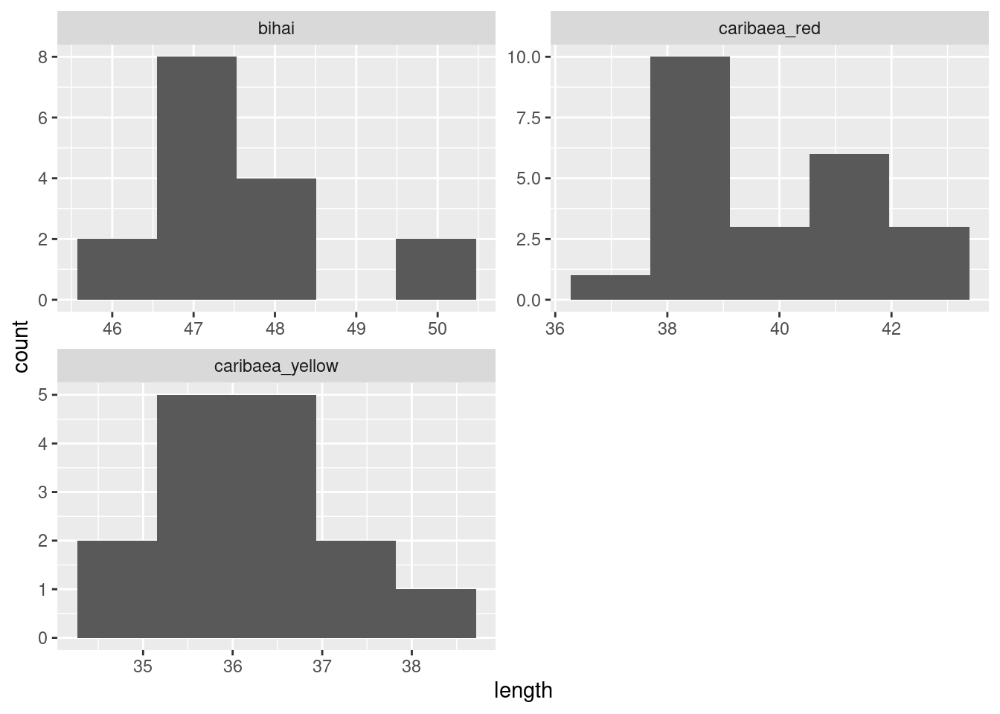
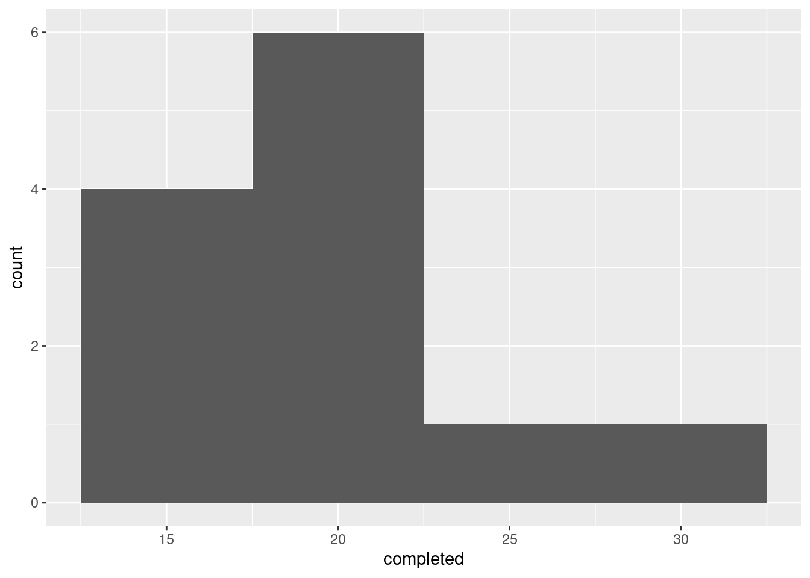
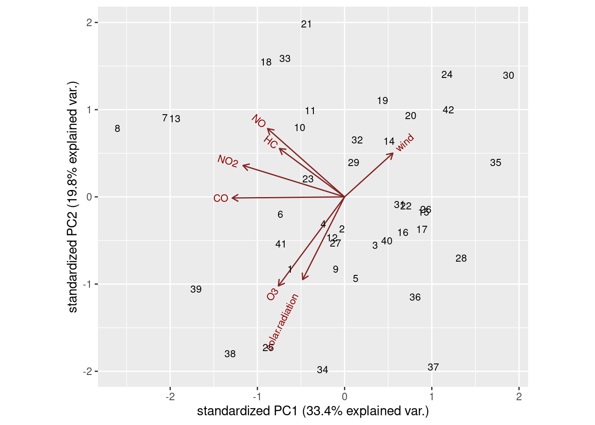
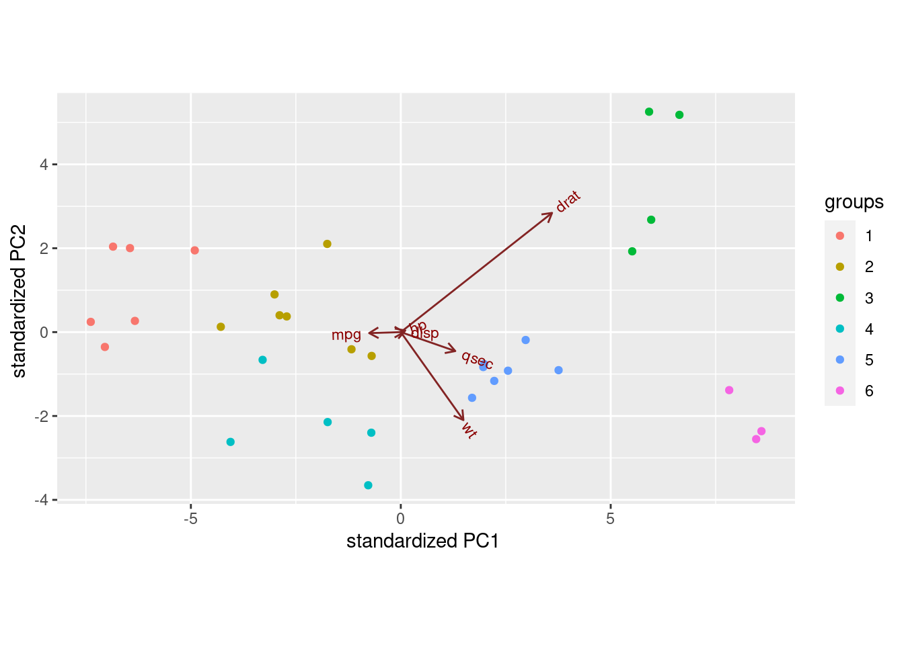
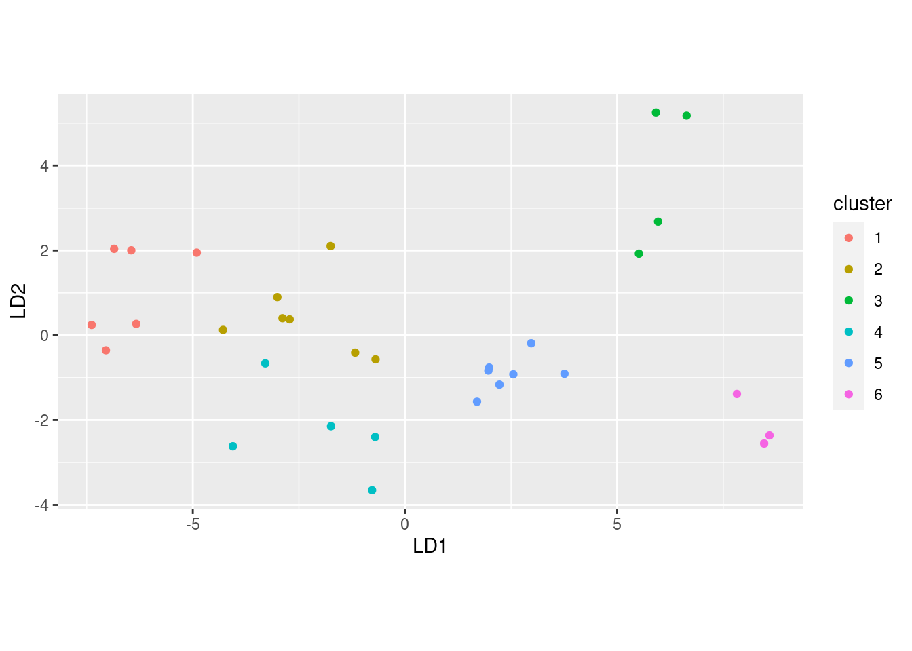
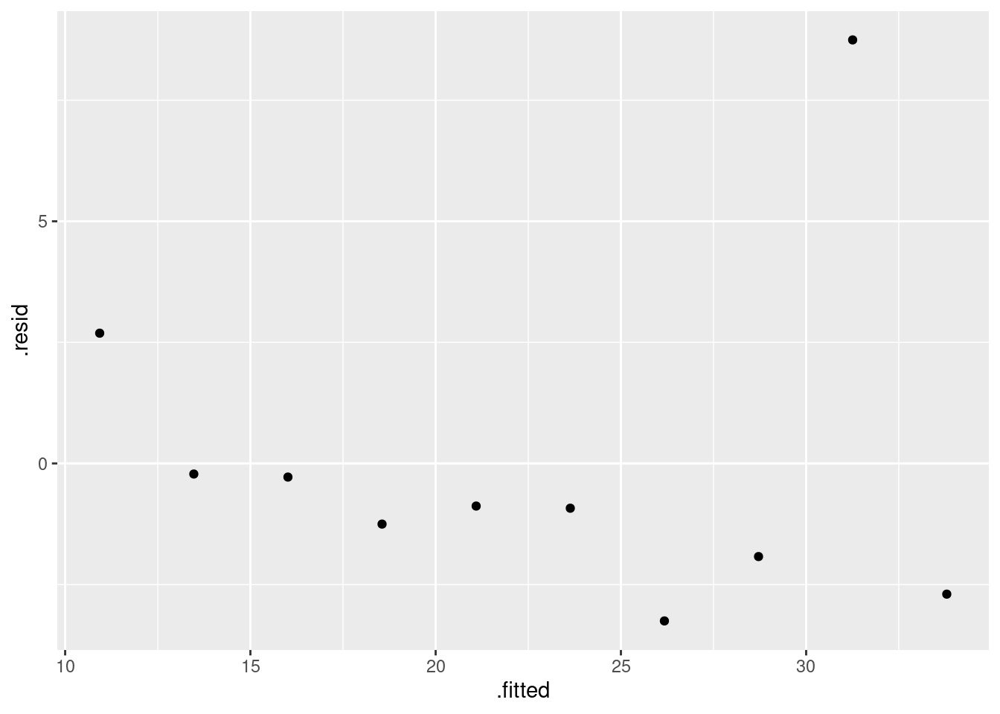
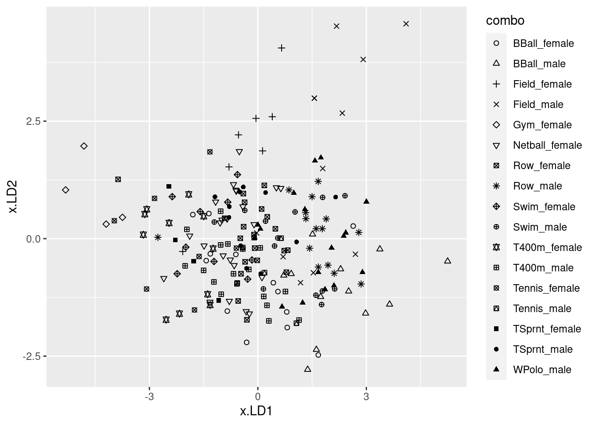
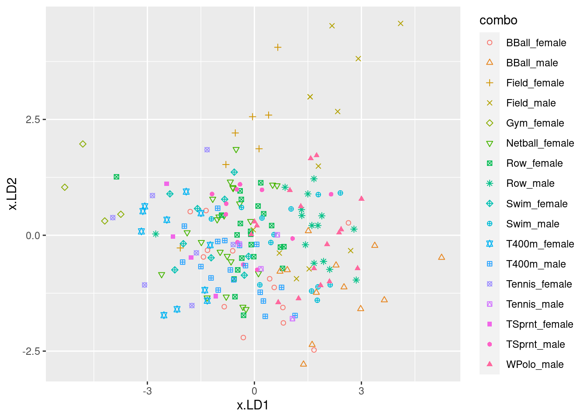

Chapter 17 Tidying data
17.1 Baseball and softball spaghetti
On a previous assignment, we found that students could throw a baseball further than they could throw a softball. In this question, we will make a graph called a “spaghetti plot” to illustrate this graphically. (The issue previously was that the data were matched pairs: the same students threw both balls.)
This seems to work most naturally by building a pipe, a line or two at a time. See if you can do it that way. (If you can’t make it work, use lots of temporary data frames, one to hold the result of each part.)
Read in the data again from link. The variables had no names, so supply some, as you did before.
Create a new column that is the students turned into a
factor, adding it to your data frame. The reason for this will become clear later.Collect together all the throwing distances into one column, making a second column that says which ball was thrown.
Using your new data frame, make a “scatterplot” of throwing distance against type of ball.
Add two things to your plot: something that will distinguish the students by colour (this works best if the thing distinguished by colour is a factor),22 and something that will join the two points for the same student by a line.
The legend is not very informative. Remove it from the plot, using
guides.What do you see on the final spaghetti plot? What does that tell you about the relative distances a student can throw a baseball vs. a softball? Explain briefly, blah blah blah.
17.2 Ethanol and sleep time in rats
A biologist wished to study the effects of ethanol on sleep
time in rats. A sample of 20 rats (all the same age) was selected, and
each rat was given an injection having a particular concentration (0,
1, 2 or 4 grams per kilogram of body weight) of ethanol. These are
labelled e0, e1, e2, e4. The “0”
treatment was a control group. The rapid eye movement (REM) sleep time
was then recorded for each rat. The data are in
link.
Read the data in from the file. Check that you have four rows of observations and five columns of sleep times.
Unfortunately, the data are in the wrong format. All the sleep times for each treatment group are on one row, and we should have one column containing all the sleep times, and the corresponding row should show which treatment group that sleep time came from. Transform this data frame into one that you could use for modelling or making graphs.
Using your new data frame, make side-by-side boxplots of sleep time by treatment group.
In your boxplots, how does the median sleep time appear to depend on treatment group?
There is an assumption about spread that the analysis of variance needs in order to be reliable. Do your boxplots indicate that this assumption is satisfied for these data, bearing in mind that you have only five observations per group?
Run an analysis of variance to see whether sleep time differs significantly among treatment groups. What do you conclude?
Would it be a good idea to run Tukey’s method here? Explain briefly why or why not, and if you think it would be a good idea, run it.
What do you conclude from Tukey’s method? (This is liable to be a bit complicated.) Is there a treatment that is clearly best, in terms of the sleep time being largest?
17.3 Growth of tomatoes
A biology graduate student exposed each of 32 tomato plants to one of four different colours of light (8 plants to each colour). The growth rate of each plant, in millimetres per week, was recorded. The data are in link.
Read the data into R and confirm that you have 8 rows and 5 columns of data.
Re-arrange the data so that you have one column containing all the growth rates, and another column saying which colour light each plant was exposed to. (The aim here is to produce something suitable for feeding into
aovlater.)Save the data in the new format to a text file. This is most easily done using
write_csv, which is the opposite ofread_csv. It requires two things: a data frame, and the name of a file to save in, which should have a.csvextension.Make a suitable boxplot, and use it to assess the assumptions for ANOVA. What do you conclude? Explain briefly.
Run (regular) ANOVA on these data. What do you conclude? (Optional extra: if you think that some other variant of ANOVA would be better, run that as well and compare the results.)
If warranted, run a suitable follow-up. (If not warranted, explain briefly why not.)
17.4 Pain relief in migraine headaches (again)
The data in link are from a study of pain relief in migraine headaches. Specifically, 27 subjects were randomly assigned to receive one of three pain relieving drugs, labelled A, B and C. Each subject reported the number of hours of pain relief they obtained (that is, the number of hours between taking the drug and the migraine symptoms returning). A higher value is therefore better. Can we make some recommendation about which drug is best for the population of migraine sufferers?
Read in and display the data. Take a look at the data file first, and see if you can say why
read_tablewill work andread_delimwill not.What is it about the experimental design that makes a one-way analysis of variance plausible for data like this?
What is wrong with the current format of the data as far as doing a one-way ANOVA analysis is concerned? (This is related to the idea of whether or not the data are “tidy”.)
“Tidy” the data to produce a data frame suitable for your analysis.
Go ahead and run your one-way ANOVA (and Tukey if necessary). Assume for this that the pain relief hours in each group are sufficiently close to normally distributed with sufficiently equal spreads.
What recommendation would you make about the best drug or drugs? Explain briefly.
17.5 Location, species and disease in plants
The table below is a “contingency table”, showing frequencies of diseased and undiseased plants of two different species in two different locations:
Species Disease present Disease absent
Location X Location Y Location X Location Y
A 44 12 38 10
B 28 22 20 18
The data were saved as
link. In that
file, the columns are coded by two letters: a p or an
a to denote presence or absence of disease, and an x
or a y to denote location X or Y. The data are separated by
multiple spaces and aligned with the variable names.
Read in and display the data.
Explain briefly how these data are not “tidy”.
Use a suitable
tidyrtool to get all the things that are the same into a single column. (You’ll need to make up a temporary name for the other new column that you create.) Show your result.Explain briefly how the data frame you just created is still not “tidy” yet.
Use one more
tidyrtool to make these data tidy, and show your result.Let’s see if we can re-construct the original contingency table (or something equivalent to it). Use the function
xtabs. This requires first a model formula with the frequency variable on the left of the squiggle, and the other variables separated by plus signs on the right. Second it requires a data frame, withdata=. Feed your data frame from the previous part intoxtabs. Save the result in a variable and display the result.Take the output from the last part and feed it into the function
ftable. How has the output been changed? Which do you like better? Explain briefly.
17.6 Mating songs in crickets
Male tree crickets produce “mating songs” by rubbing their wings together to produce a chirping sound. It is hypothesized that female tree crickets identify males of the correct species by how fast (in chirps per second) the male’s mating song is. This is called the “pulse rate”. Some data for two species of crickets are in link. The columns, which are unlabelled, are temperature and pulse rate (respectively) for Oecanthus exclamationis (first two columns) and Oecanthus niveus (third and fourth columns). The columns are separated by tabs. There are some missing values in the first two columns because fewer exclamationis crickets than niveus crickets were measured. The research question is whether males of the different species have different average pulse rates. It is also of interest to see whether temperature has an effect, and if so, what. Before we get to that, however, we have some data organization to do.
Read in the data, allowing for the fact that you have no column names. You’ll see that the columns have names
X1throughX4. This is OK.Tidy these untidy data, going as directly as you can to something tidy. (Some later parts show you how it used to be done.) Begin by: (i) adding a column of row numbers, (ii)
rename-ing the columns to species name, an underscore, and the variable contents (keepingpulserateas one word), and then usepivot_longer. Note that the column names encode two things.If you found (b) a bit much to take in, the rest of the way we take a rather more leisurely approach towards the tidying.
These data are rather far from being tidy. There need to be
three variables, temperature, pulse rate and species, and there
are \(14+17=31\) observations altogether. This one is tricky in that
there are temperature and pulse rate for each of two levels of a
factor, so I’ll suggest combining the temperature and chirp rate
together into one thing for each species, then pivoting them longer (“combining”),
then pivoting them wider again (“splitting”). Create new columns, named for each species,
that contain the temperature and pulse rate for that species in
that order, united together.
For the rest of this question, start from the data frame you read
in, and build a pipe, one or two steps at a time, to save creating
a lot of temporary data frames.
The two columns
exclamationisandniveusthat you just created are both temperature-pulse rate combos, but for different species. Collect them together into one column, labelled by species. (This is a straighttidyrpivot_longer, even though the columns contain something odd-looking.)Now split up the temperature-pulse combos at the underscore, into two separate columns. This is
separate. When specifying what to separate by, you can use a number (“split after this many characters”) or a piece of text, in quotes (“when you see this text, split at it”).Almost there. Temperature and pulse rate are still text (because
uniteturned them into text), but they should be numbers. Create new variables that are numerical versions of temperature and pulse rate (usingas.numeric). Check that you have no extraneous variables (and, if necessary, get rid of the ones you don’t want). (Species is also text and really ought to be a factor, but having it as text doesn’t seem to cause any problems.) You can, if you like, useparse_numberinstead ofas.numeric. They should both work. The distinction I prefer to make is thatparse_numberis good for text with a number in it (that we want to pull the number out of), whileas.numericis for turning something that looks like a number but isn’t one into a genuine number.23
17.7 Number 1 songs
The data file link contains a lot of information about songs popular in 2000. This dataset is untidy. Our ultimate aim is to answer “which song occupied the #1 position for the largest number of weeks?”. To do that, we will build a pipe that starts from the data frame read in from the URL above, and finishes with an answer to the question. I will take you through this step by step. Each part will involve adding something to the pipe you built previously (possibly after removing a line or two that you used to display the previous result).
Read the data and display what you have.
The columns
x1st.weekthroughx76th.weekcontain the rank of each song in the Billboard chart in that week, with week 1 being the first week that the song appeared in the chart. Convert all these columns into two: an indication of week, calledweek, and of rank, calledrank. Most songs appeared in the Billboard chart for a lot less than 76 weeks, so there are missing values, which you want to remove. (I say “indication of week” since this will probably be text at the moment). Display your new data frame. Do you have fewer columns? Why do you have a lot more rows? Explain briefly.Both your
weekandrankcolumns are (probably) text. Create new columns that contain just the numeric values, and display just your new columns, again adding onto the end of your pipe. If it so happens thatrankis already a number, leave it as it is.The meaning of your week-number column is that it refers to the number of weeks after the song first appeared in the Billboard chart. That is, if a song’s first appearance (in
date.entered)is July 24, then week 1 is July 24, week 2 is July 31, week 3 is August 7, and so on. Create a columncurrentby adding the appropriate number of days, based on your week number, todate.entered. Displaydate.entered, your week number, andcurrentto show that you have calculated the right thing. Note that you can add a number of days onto a date and you will get another date.Reaching the #1 rank on the Billboard chart is one of the highest accolades in the popular music world. List all the songs that reached
rank1. For these songs, list the artist (as given in the data set), the song title, and the date(s) for which the song was ranked number 1. Arrange the songs in date order of being ranked #1. Display all the songs (I found 55 of them).Use R to find out which song held the #1 rank for the largest number of weeks. For this, you can assume that the song titles are all unique (if it’s the same song title, it’s the same song), but the artists might not be (for example, Madonna might have had two different songs reach the #1 rank). The information you need is in the output you obtained for the previous part, so it’s a matter of adding some code to the end of that. The last mark was for displaying only the song that was ranked #1 for the largest number of weeks, or for otherwise making it easy to see which song it was.
17.8 Bikes on College
The City of Toronto collects all kinds of data on aspects of
life in the city. See
link. One
collection of data is records of the number of cyclists on certain
downtown streets. The data in
link are a record
of the cyclists on College Street on the block west from Huron to
Spadina on September 24, 2010. In the spreadsheet, each row relates to
one cyclist. The first column is the time the cyclist was observed (to
the nearest 15 minutes). After that, there are four pairs of
columns. The observer filled in (exactly) one X in each pair of
columns, according to whether (i) the cyclist was male or female, (ii)
was or was not wearing a helmet, (iii) was or was not carrying a
passenger on the bike, (iv) was or was not riding on the sidewalk. We
want to create a tidy data frame that has the time in each row, and
has columns containing appropriate values, often TRUE or
FALSE, for each of the four variables measured.
I will lead you through the process, which will involve developing a (long) pipe, one step at a time.
Take a look at the spreadsheet (using Excel or similar: this may open when you click the link). Are there any obvious header rows? Is there any extra material before the data start? Explain briefly.
Read the data into an R data frame. Read without headers, and instruct R how many lines to skip over using
skip=and a suitable number. When this is working, display the first few lines of your data frame. Note that your columns have namesX1throughX9.What do you notice about the times in your first column? What do you think those “missing” times should be?
Find something from the
tidyversethat will fill24 in those missing values with the right thing. Start a pipe from the data frame you read in, that updates the appropriate column with the filled-in times.R’s
ifelsefunction works like=IFin Excel. You use it to create values for a new variable, for example in amutate. The first input to it is a logical condition (something that is either true or false); the second is the value your new variable should take if the condition is true, and the third is the value of your new variable if the condition is false. Create a new columngenderin your data frame that is “male” or “female” depending on the value of yourX2column, usingmutate. (You can assume that exactly one of the second and third columns has anXin it.) Add your code to the end of your pipe and display (the first 10 rows of) the result.Create variables
helmet,passengerandsidewalkin your data frame that areTRUEif the “Yes” column containsXandFALSEotherwise. This will usemutateagain, but you don’t needifelse: just set the variable equal to the appropriate logical condition. As before, the best way to create these variables is to test the appropriate things for missingness. Note that you can create as many new variables as you like in onemutate. Show the first few lines of your new data frame. (Add your code onto the end of the pipe you made above.)Finally (for the data manipulation), get rid of all the original columns, keeping only the new ones that you created. Save the results in a data frame and display its first few rows.
The next few parts are a quick-fire analysis of the data set. They can all be solved using
count. How many male and how many female cyclists were observed in total?How many male and female cyclists were not wearing helmets?
How many cyclists were riding on the sidewalk and carrying a passenger?
What was the busiest 15-minute period of the day, and how many cyclists were there then?
17.9 Feeling the heat
In summer, the city of Toronto issues Heat Alerts for “high heat or humidity that is expected to last two or more days”. The precise definitions are shown at link. During a heat alert, the city opens Cooling Centres and may extend the hours of operation of city swimming pools, among other things. All the heat alert days from 2001 to 2016 are listed at link.
The word “warning” is sometimes used in place of “alert” in these data. They mean the same thing.25
- Read the data into R, and display the data frame. Note that there are four columns:
a numerical
id(numbered upwards from the first Heat Alert in 2001; some of the numbers are missing)the
dateof the heat alert, in year-month-day format with 4-digit years.a text
codefor the type of heat alerttextdescribing the kind of heat alert. This can be quite long.
In your data frame, are the dates stored as genuine dates or as text? How can you tell?
Which different heat alert codes do you have, and how many of each?
Use the
textin your dataset (or look back at the original data file) to describe briefly in your own words what the various codes represent.How many (regular and extended) heat alert events are there altogether? A heat alert event is a stretch of consecutive days, on all of which there is a heat alert or extended heat alert. Hints: (i) you can answer this from output you already have; (ii) how can you tell when a heat alert event starts?
We are going to investigate how many heat alert days there were in each year. To do that, we have to extract the year from each of our dates.
Count the number of heat alert days for each year, by tabulating the year variable. Looking at this table, would you say that there have been more heat alert days in recent years? Explain (very) briefly.
17.10 Isoflavones
The plant called kudzu was imported to the US South from Japan. It is rich in isoflavones, which are believed to be beneficial for bones. In a study, rats were randomly assigned to one of three diets: one with a low dose of isoflavones from kudzu, one with a high dose, and a control diet with no extra isoflavones. At the end of the study, each rat’s bone density was measured, in milligrams per square centimetre. The data as recorded are shown in .26 There are 15 observations for each treatment, and hence 45 altogether.
Here are some code ideas you might need to use later, all part of the tidyverse. You may need to find out how they work.
col_names(in theread_functions)convert(in varioustidyversefunctions)fillna_ifrenameseparate_rowsskip(in theread_functions)values_drop_na(in thepivot_functions)
If you use any of these, cite the webpage(s) or other source(s) where you learned about them.
Take a look at the data file. Describe briefly what you see.
Read in the data, using
read_table, and get it into a tidy form, suitable for making a graph. This means finishing with (at least) a column of treatments with a suitable name (the treatments will be text) and a column of bone density values (numbers), one for each rat. You can have other columns as well; there is no obligation to get rid of them. Describe your process clearly enough that someone new to this data set would be able to understand what you have done and reproduce it on another similar dataset. Before you begin, think about whether or not you want to keep the column headers that are in the data file or not. (It can be done either way, but one way is easier than the other.)The statistician on this study is thinking about running an ordinary analysis of variance to compare the bone mineral density for the different treatments. Obtain a plot from your tidy dataframe that will help her decide whether that is a good idea.
Based on your graph, and any additional graphs you wish to draw, what analysis would you recommend for this dataset? Explain briefly. (Don’t do the analysis.)
17.11 Jocko’s Garage
Insurance adjusters are concerned that Jocko’s Garage is giving estimates for repairing car damage that are too high. To see whether this is indeed the case, ten cars that had been in collisions were taken to both Jocko’s Garage and another garage, and the two estimates for repair were recorded. The data as recorded are here.
Take a look at the data file (eg. by using your web browser). How are the data laid out? Do there appear to be column headers?
Read in and display the data file, bearing in mind what you just concluded about it. What names did the columns acquire?
Make this data set tidy. That is, you need to end up with columns containing the repair cost estimates at each of the two garages and also identifying the cars, with each observation on one row. Describe your thought process. (It needs to be possible for the reader to follow your description and understand why it works.) Save your tidy dataframe.
Make a suitable graph to assess the comparison of interest, and say briefly what your graph tells you.
Carry out a test to make an appropriate comparison of the mean estimates. What do you conclude, in the context of the data?
17.12 Tidying electricity consumption
How does the consumption of electricity depend on temperature? To find out, a short-term study was carried out by a utility company based in a certain area. For a period of two years, the average monthly temperature was recorded (in degrees Fahrenheit), the mean daily demand for electricity per household (in kilowatt hours), and the cost per kilowatt hour of electricity for that year (8 cents for the first year and 10 cents for the second, which it will be easiest to treat as categorical).
The data were laid out in an odd way, as shown in , in aligned columns: the twelve months of temperature were laid out on two lines for the first year, then the twelve months of consumption for the first year on the next two lines, and then four more lines for the second year laid out the same way. Thus the temperature of 31 in the first line goes with the consumption of 55 in the third line, and the last measurements for that year are the 78 at the end of the second line (temperature) and 73 at the end of the fourth line (consumption). Lines 5 through 8 of the data file are the same thing for the second year (when electricity was more expensive).
The data seem to have been laid out in order of temperature, rather than in order of months, which I would have thought would make more sense. But this is what we have.
Read in and display the data file, bearing in mind that it has no column names.
Arrange these data tidily, so that there is a column of price (per kilowatt hour), a column of temperatures, and a column of consumptions. Describe your process, including why you got list-columns (if you did) and what you did about them (if necessary).
Make a suitable graph of temperature, consumption and price in your tidy dataframe. Add smooth trends if appropriate. If you were unable to get the data tidy, use my tidy version here. (If you need the other file, right-click on “here” and Copy Link Address.)
What patterns or trends do you see on your graph? Do they make practical sense? There are two things I would like you to comment on.
17.13 Tidy blood pressure
Going to the dentist is scary for a lot of people. One way in which this might show up is that people might have higher blood pressure on average before their dentist’s appointment than an hour after the appointment is done. Ten randomly-chosen individuals have their (systolic27) blood pressure measured while they are in a dentist’s waiting room, and then again one hour after their appointment is finished.
You might have seen a tidy version of this data set before.
The data as I originally received it is in http://ritsokiguess.site/datafiles/blood_pressure2.csv.
Read in and display the data as originally received.
Describe briefly how the data you read in is not tidy, bearing in mind how the data were collected and how they would be analysed.
Produce a tidy dataframe from the one you read in from the file. (How many rows should you have?)
What kind of test might you run on these data? Explain briefly.
Draw a suitable graph of these data.
My solutions follow:
17.14 Baseball and softball spaghetti
On a previous assignment, we found that students could throw a baseball further than they could throw a softball. In this question, we will make a graph called a “spaghetti plot” to illustrate this graphically. (The issue previously was that the data were matched pairs: the same students threw both balls.)
This seems to work most naturally by building a pipe, a line or two at a time. See if you can do it that way. (If you can’t make it work, use lots of temporary data frames, one to hold the result of each part.)
- Read in the data again from link. The variables had no names, so supply some, as you did before.
Solution
Literal copy and paste:
myurl <- "http://ritsokiguess.site/datafiles/throw.txt"
throws <- read_delim(myurl, " ", col_names = c("student", "baseball", "softball"))##
## ── Column specification ──────────────────────────────────────────────────────────────────────────────────────────────────────────────────────────────────────────────────────────────────────
## cols(
## student = col_double(),
## baseball = col_double(),
## softball = col_double()
## )## # A tibble: 24 x 3
## student baseball softball
## <dbl> <dbl> <dbl>
## 1 1 65 57
## 2 2 90 58
## 3 3 75 66
## 4 4 73 61
## 5 5 79 65
## 6 6 68 56
## 7 7 58 53
## 8 8 41 41
## 9 9 56 44
## 10 10 70 65
## # … with 14 more rows\(\blacksquare\)
- Create a new column that is the students turned into a
factor, adding it to your data frame. The reason for this will become clear later.
Solution
Feed student into factor, creating a new
column with mutate:
## # A tibble: 24 x 4
## student baseball softball fs
## <dbl> <dbl> <dbl> <fct>
## 1 1 65 57 1
## 2 2 90 58 2
## 3 3 75 66 3
## 4 4 73 61 4
## 5 5 79 65 5
## 6 6 68 56 6
## 7 7 58 53 7
## 8 8 41 41 8
## 9 9 56 44 9
## 10 10 70 65 10
## # … with 14 more rowsThis doesn’t look any different from the original student numbers, but note the variable type at the top of the column.
\(\blacksquare\)
- Collect together all the throwing distances into one column, making a second column that says which ball was thrown.
Solution
Use pivot_longer. It goes like this:
throws %>%
mutate(fs = factor(student)) %>%
pivot_longer(baseball:softball, names_to="ball", values_to="distance")## # A tibble: 48 x 4
## student fs ball distance
## <dbl> <fct> <chr> <dbl>
## 1 1 1 baseball 65
## 2 1 1 softball 57
## 3 2 2 baseball 90
## 4 2 2 softball 58
## 5 3 3 baseball 75
## 6 3 3 softball 66
## 7 4 4 baseball 73
## 8 4 4 softball 61
## 9 5 5 baseball 79
## 10 5 5 softball 65
## # … with 38 more rowsThe names_to is the name of a new categorical column whose values will be what is currently column names, and the values_to names a new quantitative (usually) column that will hold the values in those columns that you are making longer.
If you want to show off a little, you can use a select-helper, noting that the columns you want to make longer all end in “ball”:
throws %>%
mutate(fs = factor(student)) %>%
pivot_longer(ends_with("ball"), names_to="ball", values_to="distance")## # A tibble: 48 x 4
## student fs ball distance
## <dbl> <fct> <chr> <dbl>
## 1 1 1 baseball 65
## 2 1 1 softball 57
## 3 2 2 baseball 90
## 4 2 2 softball 58
## 5 3 3 baseball 75
## 6 3 3 softball 66
## 7 4 4 baseball 73
## 8 4 4 softball 61
## 9 5 5 baseball 79
## 10 5 5 softball 65
## # … with 38 more rowsThe same result. Use whichever you like.
\(\blacksquare\)
- Using your new data frame, make a “scatterplot” of throwing distance against type of ball.
Solution
The obvious thing. No data frame in the ggplot because it’s the data frame that came out of the previous part of the pipeline (that doesn’t have a name):
throws %>%
mutate(fs = factor(student)) %>%
pivot_longer(baseball:softball, names_to="ball", values_to="distance") %>%
ggplot(aes(x = ball, y = distance)) + geom_point()
This is an odd type of scatterplot because the \(x\)-axis is actually a categorical variable. It’s really what would be called something like a dotplot. We’ll be using this as raw material for the plot we actually want.
What this plot is missing is an indication of which student threw which ball. As it stands now, it could be an inferior version of a boxplot of distances thrown for each ball (which would imply that they are two independent sets of students, something that is not true).
\(\blacksquare\)
- Add two things to your plot: something that will distinguish the students by colour (this works best if the thing distinguished by colour is a factor),28 and something that will join the two points for the same student by a line.
Solution
A colour and a group in the aes, and
a geom_line:
throws %>%
mutate(fs = factor(student)) %>%
pivot_longer(baseball:softball, names_to="ball", values_to="distance") %>%
ggplot(aes(x = ball, y = distance, group = fs, colour = fs)) +
geom_point() + geom_line()
You can see what happens if you use the student as a number:
throws %>%
mutate(fs = factor(student)) %>%
pivot_longer(baseball:softball, names_to="ball", values_to="distance") %>%
ggplot(aes(x = ball, y = distance, group = student, colour = student)) +
geom_point() + geom_line()
Now the student numbers are distinguished as a shade of blue (on an implied continuous scale: even a nonsensical fractional student number like 17.5 would be a shade of blue). This is not actually so bad here, because all we are trying to do is to distinguish the students sufficiently from each other so that we can see where the spaghetti strands go. But I like the multi-coloured one better.
\(\blacksquare\)
- The legend is not very informative. Remove it from the plot,
using
guides.
Solution
You may not have seen this before. Here’s what to do: Find what’s
at the top of the legend that you want to remove. Here that is
fs. Find where fs appears in your
aes. It actually appears in two places: in
group and colour. I think the legend we want
to get rid of is actually the colour one, so we do this:
throws %>%
mutate(fs = factor(student)) %>%
pivot_longer(baseball:softball, names_to="ball", values_to="distance") %>%
ggplot(aes(x = ball, y = distance, group = fs, colour = fs)) +
geom_point() + geom_line() +
guides(colour = F)
That seems to have done it.
\(\blacksquare\)
- What do you see on the final spaghetti plot? What does that tell you about the relative distances a student can throw a baseball vs. a softball? Explain briefly, blah blah blah.
Solution
Most of the spaghetti strands go downhill from baseball to softball, or at least very few of them go uphill. That tells us that most students can throw a baseball further than a softball. That was the same impression that the matched-pairs \(t\)-test gave us. But the spaghetti plot tells us something else. If you look carefully, you see that most of the big drops are for students who could throw a baseball a long way. These students also threw a softball further than the other students, but not by as much. Most of the spaghetti strands in the bottom half of the plot go more or less straight across. This indicates that students who cannot throw a baseball very far will throw a softball about the same distance as they threw the baseball. There is an argument you could make here that the difference between distances thrown is a proportional one, something like “a student typically throws a baseball 20% further than a softball”. That could be assessed by comparing not the distances themselves, but the logs of the distances: in other words, making a log transformation of all the distances. (Distances have a lower limit of zero, so you might expect observed distances to be skewed to the right, which is another argument for making some kind of transformation.)
\(\blacksquare\)
17.15 Ethanol and sleep time in rats
A biologist wished to study the effects of ethanol on sleep
time in rats. A sample of 20 rats (all the same age) was selected, and
each rat was given an injection having a particular concentration (0,
1, 2 or 4 grams per kilogram of body weight) of ethanol. These are
labelled e0, e1, e2, e4. The “0”
treatment was a control group. The rapid eye movement (REM) sleep time
was then recorded for each rat. The data are in
link.
- Read the data in from the file. Check that you have four rows of observations and five columns of sleep times.
Solution
Separated by single spaces:
##
## ── Column specification ──────────────────────────────────────────────────────────────────────────────────────────────────────────────────────────────────────────────────────────────────────
## cols(
## treatment = col_character(),
## obs1 = col_double(),
## obs2 = col_double(),
## obs3 = col_double(),
## obs4 = col_double(),
## obs5 = col_double()
## )## # A tibble: 4 x 6
## treatment obs1 obs2 obs3 obs4 obs5
## <chr> <dbl> <dbl> <dbl> <dbl> <dbl>
## 1 e0 88.6 73.2 91.4 68 75.2
## 2 e1 63 53.9 69.2 50.1 71.5
## 3 e2 44.9 59.5 40.2 56.3 38.7
## 4 e4 31 39.6 45.3 25.2 22.7There are six columns, but one of them labels the groups, and there are correctly five columns of sleep times.
I used a “temporary” name for my data frame, because I’m going to be
doing some processing on it in a minute, and I want to reserve the
name sleep for my processed data frame.
\(\blacksquare\)
- Unfortunately, the data are in the wrong format. All the sleep times for each treatment group are on one row, and we should have one column containing all the sleep times, and the corresponding row should show which treatment group that sleep time came from. Transform this data frame into one that you could use for modelling or making graphs.
Solution
We will want one column of sleep times, with an additional categorical column saying what observation each sleep time was within its group (or, you might say, we don’t really care about that much, but that’s what we are going to get).
The columns obs1 through obs5 are
different in that they are different observation numbers
(“replicates”, in the jargon). I’ll call that rep. What
makes them the same is that they are all sleep times. Columns
obs1 through obs5 are the ones we want to
combine, thus.
Here is where I use the name sleep: I save the result of
the pivot_longer into a data frame sleep. Note that I
also used the brackets-around-the-outside to display what I had,
so that I didn’t have to do a separate display. This is a handy
way of saving and displaying in one shot:
## # A tibble: 20 x 3
## treatment rep sleeptime
## <chr> <chr> <dbl>
## 1 e0 obs1 88.6
## 2 e0 obs2 73.2
## 3 e0 obs3 91.4
## 4 e0 obs4 68
## 5 e0 obs5 75.2
## 6 e1 obs1 63
## 7 e1 obs2 53.9
## 8 e1 obs3 69.2
## 9 e1 obs4 50.1
## 10 e1 obs5 71.5
## 11 e2 obs1 44.9
## 12 e2 obs2 59.5
## 13 e2 obs3 40.2
## 14 e2 obs4 56.3
## 15 e2 obs5 38.7
## 16 e4 obs1 31
## 17 e4 obs2 39.6
## 18 e4 obs3 45.3
## 19 e4 obs4 25.2
## 20 e4 obs5 22.7Typically in this kind of work, you have a lot of columns that need to be made longer, and a much smaller number of columns that need to be repeated as necessary. You can either specify all the columns to make longer, or you can specify “not” the other columns. Above, my first input to pivot_longer was “everything but treatment”, but you could also do it like this:
## # A tibble: 20 x 3
## treatment rep sleeptime
## <chr> <chr> <dbl>
## 1 e0 obs1 88.6
## 2 e0 obs2 73.2
## 3 e0 obs3 91.4
## 4 e0 obs4 68
## 5 e0 obs5 75.2
## 6 e1 obs1 63
## 7 e1 obs2 53.9
## 8 e1 obs3 69.2
## 9 e1 obs4 50.1
## 10 e1 obs5 71.5
## 11 e2 obs1 44.9
## 12 e2 obs2 59.5
## 13 e2 obs3 40.2
## 14 e2 obs4 56.3
## 15 e2 obs5 38.7
## 16 e4 obs1 31
## 17 e4 obs2 39.6
## 18 e4 obs3 45.3
## 19 e4 obs4 25.2
## 20 e4 obs5 22.7or like this:
## # A tibble: 20 x 3
## treatment rep sleeptime
## <chr> <chr> <dbl>
## 1 e0 obs1 88.6
## 2 e0 obs2 73.2
## 3 e0 obs3 91.4
## 4 e0 obs4 68
## 5 e0 obs5 75.2
## 6 e1 obs1 63
## 7 e1 obs2 53.9
## 8 e1 obs3 69.2
## 9 e1 obs4 50.1
## 10 e1 obs5 71.5
## 11 e2 obs1 44.9
## 12 e2 obs2 59.5
## 13 e2 obs3 40.2
## 14 e2 obs4 56.3
## 15 e2 obs5 38.7
## 16 e4 obs1 31
## 17 e4 obs2 39.6
## 18 e4 obs3 45.3
## 19 e4 obs4 25.2
## 20 e4 obs5 22.7This one was a little unusual in that usually with these you have the treatments in the columns and the replicates in the rows. It doesn’t matter, though: pivot_longer handles both cases.
We have 20 rows of 3 columns. I got all the rows, but you will probably get an output with ten rows as usual, and will need to click Next to see the last ten rows. The initial display will say how many rows (20) and columns (3) you have.
The column rep is not very interesting: it just says which
observation each one was within its group.29
The interesting things are treatment and
sleeptime, which are the two variables we’ll need for our
analysis of variance.
\(\blacksquare\)
- Using your new data frame, make side-by-side boxplots of sleep time by treatment group.
Solution

\(\blacksquare\)
- In your boxplots, how does the median sleep time appear to depend on treatment group?
Solution
It appears to decrease as the dose of ethanol increases, and pretty substantially so (in that the differences ought to be significant, but that’s coming up).
\(\blacksquare\)
- There is an assumption about spread that the analysis of variance needs in order to be reliable. Do your boxplots indicate that this assumption is satisfied for these data, bearing in mind that you have only five observations per group?
Solution
The assumption is that the population SDs of each group are all equal. Now, the boxplots show IQRs, which are kind of a surrogate for SD, and because we only have five observations per group to base the IQRs on, the sample IQRs might vary a bit. So we should look at the heights of the boxes on the boxplot, and see whether they are grossly unequal. They appear to be to be of very similar heights, all things considered, so I am happy.
If you want the SDs themselves:
## # A tibble: 4 x 2
## treatment stddev
## <chr> <dbl>
## 1 e0 10.2
## 2 e1 9.34
## 3 e2 9.46
## 4 e4 9.56Those are very similar, given only 5 observations per group. No problems here.
\(\blacksquare\)
- Run an analysis of variance to see whether sleep time differs significantly among treatment groups. What do you conclude?
Solution
I use aov here, because I might be following up with
Tukey in a minute:
## Df Sum Sq Mean Sq F value Pr(>F)
## treatment 3 5882 1961 21.09 8.32e-06 ***
## Residuals 16 1487 93
## ---
## Signif. codes: 0 '***' 0.001 '**' 0.01 '*' 0.05 '.' 0.1 ' ' 1This is a very small P-value, so my conclusion is that the mean sleep times are not all the same for the treatment groups. Further than that I am not entitled to say (yet).
The technique here is to save the output from aov in
something, look at that (via summary), and then that same
something gets fed into TukeyHSD later.
\(\blacksquare\)
- Would it be a good idea to run Tukey’s method here? Explain briefly why or why not, and if you think it would be a good idea, run it.
Solution
Tukey’s method is useful when (i) we have run an analysis of variance and got a significant result and (ii) when we want to know which groups differ significantly from which. Both (i) and (ii) are true here. So:
## Tukey multiple comparisons of means
## 95% family-wise confidence level
##
## Fit: aov(formula = sleeptime ~ treatment, data = sleep)
##
## $treatment
## diff lwr upr p adj
## e1-e0 -17.74 -35.18636 -0.2936428 0.0455781
## e2-e0 -31.36 -48.80636 -13.9136428 0.0005142
## e4-e0 -46.52 -63.96636 -29.0736428 0.0000056
## e2-e1 -13.62 -31.06636 3.8263572 0.1563545
## e4-e1 -28.78 -46.22636 -11.3336428 0.0011925
## e4-e2 -15.16 -32.60636 2.2863572 0.1005398\(\blacksquare\)
- What do you conclude from Tukey’s method? (This is liable to be a bit complicated.) Is there a treatment that is clearly best, in terms of the sleep time being largest?
Solution
All the differences are significant except treatment e2
vs. e1 and e4. All the differences involving
the control group e0 are significant, and if you look
back at the boxplots in (c), you’ll see that the control group e0
had the highest mean sleep time. So the control group is
best (from this point of view), or another way of saying it is
that any dose of ethanol is significantly reducing mean
sleep time.
The other comparisons are a bit confusing, because the 1-4
difference is significant, but neither of the differences
involving 2 are. That is, 1 is better than 4, but 2 is not
significantly worse than 1 nor better than 4. This seems like it
should be a logical impossibility, but the story is that we don’t
have enough data to decide where 2 fits relative to 1 or 4. If we
had 10 or 20 observations per group, we might be able to conclude
that 2 is in between 1 and 4 as the boxplots suggest.
Extra: I didn’t ask about normality here, but like the equal-spreads assumption I’d say there’s nothing controversial about it with these data. With normality good and equal spreads good, aov plus Tukey is the analysis of choice.
\(\blacksquare\)
17.16 Growth of tomatoes
A biology graduate student exposed each of 32 tomato plants to one of four different colours of light (8 plants to each colour). The growth rate of each plant, in millimetres per week, was recorded. The data are in link.
- Read the data into R and confirm that you have 8 rows and 5 columns of data.
Solution
This kind of thing:
##
## ── Column specification ──────────────────────────────────────────────────────────────────────────────────────────────────────────────────────────────────────────────────────────────────────
## cols(
## plant = col_double(),
## blue = col_double(),
## red = col_double(),
## yellow = col_double(),
## green = col_double()
## )## # A tibble: 8 x 5
## plant blue red yellow green
## <dbl> <dbl> <dbl> <dbl> <dbl>
## 1 1 5.34 13.7 4.61 2.72
## 2 2 7.45 13.0 6.63 1.08
## 3 3 7.15 10.2 5.29 3.97
## 4 4 5.53 13.1 5.29 2.66
## 5 5 6.34 11.1 4.76 3.69
## 6 6 7.16 11.4 5.57 1.96
## 7 7 7.77 14.0 6.57 3.38
## 8 8 5.09 13.5 5.25 1.87I do indeed have 8 rows and 5 columns.
With only 8 rows, listing the data like this is good.
\(\blacksquare\)
- Re-arrange the data so that you have one column
containing all the growth rates, and another column saying which
colour light each plant was exposed to. (The aim here is to produce
something suitable for feeding into
aovlater.)
Solution
This is a job for pivot_longer:
## # A tibble: 32 x 3
## plant colour growthrate
## <dbl> <chr> <dbl>
## 1 1 blue 5.34
## 2 1 red 13.7
## 3 1 yellow 4.61
## 4 1 green 2.72
## 5 2 blue 7.45
## 6 2 red 13.0
## 7 2 yellow 6.63
## 8 2 green 1.08
## 9 3 blue 7.15
## 10 3 red 10.2
## # … with 22 more rowsI chose to specify “everything but plant number”, since there are several colour columns with different names.
Since the column plant was never mentioned, this gets
repeated as necessary, so now it denotes “plant within colour group”,
which in this case is not very useful. (Where you have
matched pairs, or repeated measures in general, you do want to
keep track of which individual is which. But this is not repeated
measures because plant number 1 in the blue group and plant number 1
in the red group are different plants.)
There were 8 rows originally and 4 different colours, so there should be, and are, \(8 \times 4=32\) rows in the made-longer data set.
\(\blacksquare\)
- Save the data in the new format to a text file. This is
most easily done using
write_csv, which is the opposite ofread_csv. It requires two things: a data frame, and the name of a file to save in, which should have a.csvextension.
Solution
The code is easy enough:
If no error, it worked. That’s all you need.
To verify (for my satisfaction) that it was saved correctly:
## plant,colour,growthrate
## 1,blue,5.34
## 1,red,13.67
## 1,yellow,4.61
## 1,green,2.72
## 2,blue,7.45
## 2,red,13.04
## 2,yellow,6.63
## 2,green,1.08
## 3,blue,7.15
## 3,red,10.16
## 3,yellow,5.29
## 3,green,3.97
## 4,blue,5.53
## 4,red,13.12
## 4,yellow,5.29
## 4,green,2.66
## 5,blue,6.34
## 5,red,11.06
## 5,yellow,4.76
## 5,green,3.69
## 6,blue,7.16
## 6,red,11.43
## 6,yellow,5.57
## 6,green,1.96
## 7,blue,7.77
## 7,red,13.98
## 7,yellow,6.57
## 7,green,3.38
## 8,blue,5.09
## 8,red,13.49
## 8,yellow,5.25
## 8,green,1.87On my system, that will list the contents of the file. Or you can just open it in R Studio (if you saved it the way I did, it’ll be in the same folder, and you can find it in the Files pane.)
\(\blacksquare\)
- Make a suitable boxplot, and use it to assess the assumptions for ANOVA. What do you conclude? Explain briefly.
Solution
Nothing terribly surprising here. My data frame is called
toms2, for some reason:

There are no outliers, but there is a little skewness (compare the whiskers, not the placement of the median within the box, because what matters with skewness is the tails, not the middle of the distribution; it’s problems in the tails that make the mean unsuitable as a measure of centre). The Red group looks the most skewed. Also, the Yellow group has smaller spread than the others (we assume that the population variances within each group are equal). The thing to bear in mind here, though, is that there are only eight observations per group, so the distributions could appear to have unequal variances or some non-normality by chance.
My take is that these data, all things considered, are OK for ANOVA. Another option would be to do Welch’s ANOVA as well and compare with the regular ANOVA: if they give more or less the same P-value, that’s a sign that I didn’t need to worry.
Extra: some people like to run a formal test on the variances to test
them for equality. My favourite (for reasons explained elsewhere) is
the Levene test, if you insist on going this way. It lives in package
car, and does not take a data=, so you need
to do the with thing:
## Warning in leveneTest.default(growthrate, colour): colour coerced to factor.## Levene's Test for Homogeneity of Variance (center = median)
## Df F value Pr(>F)
## group 3 0.9075 0.4499
## 28The warning is because colour was actually text, but the test
did the right thing by turning it into a factor, so that’s OK.
There is no way we can reject equal variances in the four groups. The \(F\)-statistic is less than 1, in fact, which says that if the four groups have the same population variances, the sample variances will be more different than the ones we observed on average, and so there is no way that these sample variances indicate different population variances. (This is because of 8 observations only per group; if there had been 80 observations per group, it would have been a different story.) Decide for yourself whether you’re surprised by this.
With that in mind, I think the regular ANOVA will be perfectly good, and we would expect that and the Welch ANOVA to give very similar results.
\(\blacksquare\)
- Run (regular) ANOVA on these data. What do you conclude? (Optional extra: if you think that some other variant of ANOVA would be better, run that as well and compare the results.)
Solution
aov, bearing in mind that Tukey is likely to follow:
## Df Sum Sq Mean Sq F value Pr(>F)
## colour 3 410.5 136.82 118.2 5.28e-16 ***
## Residuals 28 32.4 1.16
## ---
## Signif. codes: 0 '***' 0.001 '**' 0.01 '*' 0.05 '.' 0.1 ' ' 1This is a tiny P-value, so the mean growth rate for the different colours is definitely not the same for all colours. Or, if you like, one or more of the colours has a different mean growth rate than the others.
This, remember, is as far as we go right now.
Extra: if you thought that normality was OK but not equal spreads, then Welch ANOVA is the way to go:
##
## One-way analysis of means (not assuming equal variances)
##
## data: growthrate and colour
## F = 81.079, num df = 3.000, denom df = 15.227, p-value = 1.377e-09The P-value is not quite as small as for the regular ANOVA, but it is still very small, and the conclusion is the same.
If you had doubts about the normality (that were sufficiently great, even given the small sample sizes), then go with Mood’s median test for multiple groups:
## $table
## above
## group above below
## blue 5 3
## green 0 8
## red 8 0
## yellow 3 5
##
## $test
## what value
## 1 statistic 1.700000e+01
## 2 df 3.000000e+00
## 3 P-value 7.067424e-04The P-value is again extremely small (though not quite as small as for the other two tests, for the usual reason that Mood’s median test doesn’t use the data very efficiently: it doesn’t use how far above or below the overall median the data values are.)
The story here, as ever, is consistency: whatever you thought was wrong, looking at the boxplots, needs to guide the test you do:
if you are not happy with normality, go with
median_testfromsmmr(Mood’s median test).if you are happy with normality and equal variances, go with
aov.if you are happy with normality but not equal variances, go with
oneway.test(Welch ANOVA).
So the first thing to think about is normality, and if you are OK with normality, then think about equal spreads. Bear in mind that you need to be willing to tolerate a certain amount of non-normality and inequality in the spreads, given that your data are only samples from their populations. (Don’t expect perfection, in short.)
\(\blacksquare\)
- If warranted, run a suitable follow-up. (If not warranted, explain briefly why not.)
Solution
Whichever flavour of ANOVA you ran (regular ANOVA, Welch ANOVA, Mood’s median test), you got the same conclusion for these data: that the average growth rates were not all the same for the four colours. That, as you’ll remember, is as far as you go. To find out which colours differ from which in terms of growth rate, you need to run some kind of multiple-comparisons follow-up, the right one for the analysis you did. Looking at the boxplots suggests that red is clearly best and green clearly worst, and it is possible that all the colours are significantly different from each other.) If you did regular ANOVA, Tukey is what you need:
## Tukey multiple comparisons of means
## 95% family-wise confidence level
##
## Fit: aov(formula = growthrate ~ colour, data = toms2)
##
## $colour
## diff lwr upr p adj
## green-blue -3.8125 -5.281129 -2.3438706 0.0000006
## red-blue 6.0150 4.546371 7.4836294 0.0000000
## yellow-blue -0.9825 -2.451129 0.4861294 0.2825002
## red-green 9.8275 8.358871 11.2961294 0.0000000
## yellow-green 2.8300 1.361371 4.2986294 0.0000766
## yellow-red -6.9975 -8.466129 -5.5288706 0.0000000All of the differences are (strongly) significant, except for yellow and blue, the two with middling growth rates on the boxplot. Thus we would have no hesitation in saying that growth rate is biggest in red light and smallest in green light.
If you did Welch ANOVA, you need Games-Howell, which you have to get from one of the packages that offers it:
##
## Pairwise comparisons using Games-Howell test## data: growthrate by factor(colour)## blue green red
## green 1.6e-05 - -
## red 1.5e-06 4.8e-09 -
## yellow 0.18707 0.00011 5.8e-07##
## P value adjustment method: none## alternative hypothesis: two.sidedThe conclusions are the same as for the Tukey: all the means are significantly different except for yellow and blue. Finally, if you did Mood’s median test, you need this one:
## # A tibble: 6 x 4
## g1 g2 p_value adj_p_value
## <chr> <chr> <dbl> <dbl>
## 1 blue green 0.0000633 0.000380
## 2 blue red 0.0000633 0.000380
## 3 blue yellow 0.317 1
## 4 green red 0.0000633 0.000380
## 5 green yellow 0.0000633 0.000380
## 6 red yellow 0.0000633 0.000380Same conclusions again. This is what I would have guessed; the conclusions from Tukey were so clear-cut that it really didn’t matter which way you went; you’d come to the same conclusion.
That said, what I am looking for from you is a sensible choice of analysis of variance (ANOVA, Welch’s ANOVA or Mood’s median test) for a good reason, followed by the right follow-up for the test you did. Even though the conclusions are all the same no matter what you do here, I want you to get used to following the right method, so that you will be able to do the right thing when it does matter.
\(\blacksquare\)
17.17 Pain relief in migraine headaches (again)
The data in link are from a study of pain relief in migraine headaches. Specifically, 27 subjects were randomly assigned to receive one of three pain relieving drugs, labelled A, B and C. Each subject reported the number of hours of pain relief they obtained (that is, the number of hours between taking the drug and the migraine symptoms returning). A higher value is therefore better. Can we make some recommendation about which drug is best for the population of migraine sufferers?
- Read in and display the data. Take a look at the data
file first, and see if you can say why
read_tablewill work andread_delimwill not.
Solution
The key is two things: the data values are lined up in columns, and
there is more than one space between values.
The second thing is why read_delim will not
work. If you look carefully at the data file, you’ll see that
the column names are above and aligned with the columns, which
is what read_table wants. If the column names had
not been aligned with the columns, we would have needed
read_table2.
##
## ── Column specification ──────────────────────────────────────────────────────────────────────────────────────────────────────────────────────────────────────────────────────────────────────
## cols(
## DrugA = col_double(),
## DrugB = col_double(),
## DrugC = col_double()
## )## # A tibble: 9 x 3
## DrugA DrugB DrugC
## <dbl> <dbl> <dbl>
## 1 4 6 6
## 2 5 8 7
## 3 4 4 6
## 4 3 5 6
## 5 2 4 7
## 6 4 6 5
## 7 3 5 6
## 8 4 11 5
## 9 4 10 5Success.
\(\blacksquare\)
- What is it about the experimental design that makes a one-way analysis of variance plausible for data like this?
Solution
Each experimental subject only tested one drug, so that we have 27 independent observations, nine from each drug. This is exactly the setup that a one-way ANOVA requires. Compare that to, for example, a situation where you had only 9 subjects, but they each tested all the drugs (so that each subject produced three measurements). That is like a three-measurement version of matched pairs, a so-called repeated-measures design, which requires its own kind of analysis.30
\(\blacksquare\)
- What is wrong with the current format of the data as far as doing a one-way ANOVA analysis is concerned? (This is related to the idea of whether or not the data are “tidy”.)
Solution
For our analysis, we need one column of pain relief time and one column labelling the drug that the subject in question took. Or, if you prefer to think about what would make these data “tidy”: there are 27 subjects, so there ought to be 27 rows, and all three columns are measurements of pain relief, so they ought to be in one column.
\(\blacksquare\)
- “Tidy” the data to produce a data frame suitable for your analysis.
Solution
This is pivot_longer. The column names are going to be stored in a column drug, and the corresponding values in a column called painrelief (use whatever names you like):
Since I was making all the columns longer, I used the select-helper everything() to do that. Using instead DrugA:DrugC or starts_with("Drug") would also be good. Try them. starts_with is not case-sensitive, as far as I remember, so starts_with("drug") will also work here.
We do indeed have a new data frame with 27 rows, one per observation,
and 2 columns, one for each variable: the pain relief hours, plus a
column identifying which drug that pain relief time came from. Exactly
what aov needs.
You can probably devise a better name for your new data frame.
\(\blacksquare\)
- Go ahead and run your one-way ANOVA (and Tukey if necessary). Assume for this that the pain relief hours in each group are sufficiently close to normally distributed with sufficiently equal spreads.
Solution
My last sentence absolves us from doing the boxplots that we would normally insist on doing.
## Df Sum Sq Mean Sq F value Pr(>F)
## drug 2 41.19 20.59 7.831 0.00241 **
## Residuals 24 63.11 2.63
## ---
## Signif. codes: 0 '***' 0.001 '**' 0.01 '*' 0.05 '.' 0.1 ' ' 1There are (strongly) significant differences among the drugs, so it is definitely worth firing up Tukey to figure out where the differences are:
## Tukey multiple comparisons of means
## 95% family-wise confidence level
##
## Fit: aov(formula = painrelief ~ drug, data = migraine2)
##
## $drug
## diff lwr upr p adj
## DrugB-DrugA 2.8888889 0.9798731 4.797905 0.0025509
## DrugC-DrugA 2.2222222 0.3132065 4.131238 0.0203671
## DrugC-DrugB -0.6666667 -2.5756824 1.242349 0.6626647Both the differences involving drug A are significant, and because a
high value of painrelief is better, in both cases drug A is
worse than the other drugs. Drugs B and C are not significantly
different from each other.
Extra: we can also use the “pipe” to do this all in one go:
migraine %>%
pivot_longer(everything(), names_to="drug", values_to="painrelief") %>%
aov(painrelief ~ drug, data = .) %>%
summary()## Df Sum Sq Mean Sq F value Pr(>F)
## drug 2 41.19 20.59 7.831 0.00241 **
## Residuals 24 63.11 2.63
## ---
## Signif. codes: 0 '***' 0.001 '**' 0.01 '*' 0.05 '.' 0.1 ' ' 1with the same results as before. Notice that I never actually created
a second data frame by name; it was created by pivot_longer and
then immediately used as input to aov.31
I also used the
data=. trick to use “the data frame that came out of the previous step” as my input to aov.
Read the above like this: “take migraine, and then make everything longer, creating new columns drug and painrelief, and then do an ANOVA of painrelief by drug, and then summarize the results.”
What is even more alarming is that I can feed the output from
aov straight into TukeyHSD:
migraine %>%
pivot_longer(everything(), names_to="drug", values_to="painrelief") %>%
aov(painrelief ~ drug, data = .) %>%
TukeyHSD()## Tukey multiple comparisons of means
## 95% family-wise confidence level
##
## Fit: aov(formula = painrelief ~ drug, data = .)
##
## $drug
## diff lwr upr p adj
## DrugB-DrugA 2.8888889 0.9798731 4.797905 0.0025509
## DrugC-DrugA 2.2222222 0.3132065 4.131238 0.0203671
## DrugC-DrugB -0.6666667 -2.5756824 1.242349 0.6626647I wasn’t sure whether this would work, since the output from
aov is an R list rather than a data frame, but the
output from aov is sent into TukeyHSD whatever
kind of thing it is.
What I am missing here is to display the result of aov
and use it as input to TukeyHSD. Of course, I had to
discover that this could be solved, and indeed it can:
migraine %>%
pivot_longer(everything(), names_to="drug", values_to="painrelief") %>%
aov(painrelief ~ drug, data = .) %>%
{
print(summary(.))
.
} %>%
TukeyHSD()## Df Sum Sq Mean Sq F value Pr(>F)
## drug 2 41.19 20.59 7.831 0.00241 **
## Residuals 24 63.11 2.63
## ---
## Signif. codes: 0 '***' 0.001 '**' 0.01 '*' 0.05 '.' 0.1 ' ' 1## Tukey multiple comparisons of means
## 95% family-wise confidence level
##
## Fit: aov(formula = painrelief ~ drug, data = .)
##
## $drug
## diff lwr upr p adj
## DrugB-DrugA 2.8888889 0.9798731 4.797905 0.0025509
## DrugC-DrugA 2.2222222 0.3132065 4.131238 0.0203671
## DrugC-DrugB -0.6666667 -2.5756824 1.242349 0.6626647The odd-looking second-last line of that again uses the . trick
for “whatever came out of the previous step”. The thing inside the
curly brackets is two commands one after the other; the first is to
display the summary of that aov32
and the second is to just pass whatever came out of the
previous line, the output from aov, on, unchanged, into
TukeyHSD.
In the Unix/Linux world this is called tee,
where you print something and pass it on to the next step. The
name tee comes from a (real physical) pipe that plumbers would use to
split water flow into two, which looks like a letter T.
\(\blacksquare\)
- What recommendation would you make about the best drug or drugs? Explain briefly.
Solution
Drug A is significantly the worst, so we eliminate that. But there is no significant difference between drugs B and C, so we have no reproducible reason for preferring one rather than the other. Thus, we recommend “either B or C”. If you weren’t sure which way around the drugs actually came out, then you should work out the mean pain relief score by drug:
## # A tibble: 3 x 2
## drug m
## <chr> <dbl>
## 1 DrugA 3.67
## 2 DrugB 6.56
## 3 DrugC 5.89These confirm that A is worst, and there is nothing much to choose between B and C. You should not recommend drug B over drug C on this evidence, just because its (sample) mean is higher. The point about significant differences is that they are supposed to stand up to replication: in another experiment, or in real-life experiences with these drugs, the mean pain relief score for drug A is expected to be worst, but between drugs B and C, sometimes the mean of B will come out higher and sometimes C’s mean will be higher, because there is no significant difference between them.33 Another way is to draw a boxplot of pain-relief scores:

The medians of drugs B and C are actually exactly the same. Because the pain relief values are all whole numbers (and there are only 9 in each group), you get that thing where enough of them are equal that the median and third quartiles are equal, actually for two of the three groups.
Despite the weird distributions, I’m willing to call these groups sufficiently symmetric for the ANOVA to be OK, but I didn’t ask you to draw the boxplot, because I didn’t want to confuse the issue with this. The point of this question was to get the data tidy enough to do an analysis.
As I said, I didn’t want you to have to get into this, but if you are worried, you know what the remedy is — Mood’s median test. Don’t forget to use the right data frame:
## $table
## above
## group above below
## DrugA 0 8
## DrugB 5 2
## DrugC 6 0
##
## $test
## what value
## 1 statistic 1.527273e+01
## 2 df 2.000000e+00
## 3 P-value 4.825801e-04Because the pain relief scores are integers, there are probably a lot of them equal to the overall median. There were 27 observations altogether, but Mood’s median test will discard any that are equal to this value. There must have been 9 observations in each group to start with, but if you look at each row of the table, there are only 8 observations listed for drug A, 7 for drug B and 6 for drug C, so there must have been 1, 2 and 3 (totalling 6) observations equal to the median that were discarded.
The P-value is a little bigger than came out of the \(F\)-test, but the conclusion is still that there are definitely differences among the drugs in terms of pain relief. The table at the top of the output again suggests that drug A is worse than the others, but to confirm that you’d have to do Mood’s median test on all three pairs of drugs, and then use Bonferroni to allow for your having done three tests:
## # A tibble: 3 x 4
## g1 g2 p_value adj_p_value
## <chr> <chr> <dbl> <dbl>
## 1 DrugA DrugB 0.00721 0.0216
## 2 DrugA DrugC 0.000183 0.000548
## 3 DrugB DrugC 0.921 1Drug A gives worse pain relief (fewer hours) than both drugs B and C, which are not significantly different from each hour. This is exactly what you would have guessed from the boxplot.
I adjusted the P-values as per Bonferroni by multiplying them by 3 (so that I could still compare with 0.05), but it makes no sense to have a P-value, which is a probability, greater than 1, so an “adjusted P-value” that comes out greater than 1 is rounded back down to 1. You interpret this as being “no evidence at all of a difference in medians” between drugs B and C.
\(\blacksquare\)
17.18 Location, species and disease in plants
The table below is a “contingency table”, showing frequencies of diseased and undiseased plants of two different species in two different locations:
Species Disease present Disease absent
Location X Location Y Location X Location Y
A 44 12 38 10
B 28 22 20 18
The data were saved as
link. In that
file, the columns are coded by two letters: a p or an
a to denote presence or absence of disease, and an x
or a y to denote location X or Y. The data are separated by
multiple spaces and aligned with the variable names.
- Read in and display the data.
Solution
read_table again. You know this because, when you looked
at the data file, which of course you did (didn’t you?), you saw
that the data values were aligned by columns with multiple spaces
between them:
##
## ── Column specification ──────────────────────────────────────────────────────────────────────────────────────────────────────────────────────────────────────────────────────────────────────
## cols(
## Species = col_character(),
## px = col_double(),
## py = col_double(),
## ax = col_double(),
## ay = col_double()
## )## # A tibble: 2 x 5
## Species px py ax ay
## <chr> <dbl> <dbl> <dbl> <dbl>
## 1 A 44 12 38 10
## 2 B 28 22 20 18I was thinking ahead, since I’ll be wanting to have one of my columns
called disease, so I’m not calling the data frame
disease.
You’ll also have noticed that I simplified the data frame that I had you read in, because the original contingency table I showed you has two header rows, and we have to have one header row. So I mixed up the information in the two header rows into one.
\(\blacksquare\)
- Explain briefly how these data are not “tidy”.
Solution
The simple answer is that there are 8 frequencies, that each ought to be in a row by themselves. Or, if you like, there are three variables, Species, Disease status and Location, and each of those should be in a column of its own. Either one of these ideas, or something like it, is good. I need you to demonstrate that you know something about “tidy data” in this context.
\(\blacksquare\)
- Use a suitable
tidyrtool to get all the things that are the same into a single column. (You’ll need to make up a temporary name for the other new column that you create.) Show your result.
Solution
pivot_longer is the tool. All the columns apart from
Species contain frequencies.
They are frequencies in disease-location combinations, so
I’ll call the column of “names” disloc. Feel
free to call it temp for now if you prefer:
## # A tibble: 8 x 3
## Species disloc frequency
## <chr> <chr> <dbl>
## 1 A px 44
## 2 A py 12
## 3 A ax 38
## 4 A ay 10
## 5 B px 28
## 6 B py 22
## 7 B ax 20
## 8 B ay 18\(\blacksquare\)
- Explain briefly how the data frame you just created is still not “tidy” yet.
Solution
The column I called disloc actually contains two
variables, disease and location, which need to be split up. A
check on this is that we
have two columns (not including the frequencies), but back in
(b) we found three variables, so there
ought to be three non-frequency columns.
\(\blacksquare\)
- Use one more
tidyrtool to make these data tidy, and show your result.
Solution
This means splitting up disloc into two separate columns,
splitting after the first character, thus:
## # A tibble: 8 x 4
## Species disease location frequency
## <chr> <chr> <chr> <dbl>
## 1 A p x 44
## 2 A p y 12
## 3 A a x 38
## 4 A a y 10
## 5 B p x 28
## 6 B p y 22
## 7 B a x 20
## 8 B a y 18This is now tidy: eight frequencies in rows, and three non-frequency columns. (Go back and look at your answer to part (b) and note that the issues you found there have all been resolved now.)
Extra: my reading of one of the vignettes (the one called pivot) for tidyr suggests that pivot_longer can do both the making longer and the separating in one shot:
## # A tibble: 8 x 4
## Species disease location frequency
## <chr> <chr> <chr> <dbl>
## 1 A p x 44
## 2 A p y 12
## 3 A a x 38
## 4 A a y 10
## 5 B p x 28
## 6 B p y 22
## 7 B a x 20
## 8 B a y 18And I (amazingly) got that right first time!
The idea is that you recognize that the column names are actually two things: a disease status and a location. To get pivot_longer to recognize that, you put two things in the names_to. Then you have to say how the two things in the columns are separated: this might be by an underscore or a dot, or, as here, “after the first character” (just as in separate). Using two names and some indication of what separates them then does a combined pivot-longer-and-separate, all in one shot.
The more I use pivot_longer, the more I marvel at the excellence of its design: it seems to be easy to guess how to make things work.
\(\blacksquare\)
- Let’s see if we can re-construct the original contingency
table (or something equivalent to it). Use the function
xtabs. This requires first a model formula with the frequency variable on the left of the squiggle, and the other variables separated by plus signs on the right. Second it requires a data frame, withdata=. Feed your data frame from the previous part intoxtabs. Save the result in a variable and display the result.
Solution
## , , location = x
##
## disease
## Species a p
## A 38 44
## B 20 28
##
## , , location = y
##
## disease
## Species a p
## A 10 12
## B 18 22This shows a pair of contingency tables, one each for each of the two locations (in general, the variable you put last on the right side of the model formula). You can check that everything corresponds with the original data layout at the beginning of the question, possibly with some things rearranged (but with the same frequencies in the same places).
\(\blacksquare\)
- Take the output from the last part and feed it into the
function
ftable. How has the output been changed? Which do you like better? Explain briefly.
Solution
This:
## location x y
## Species disease
## A a 38 10
## p 44 12
## B a 20 18
## p 28 22This is the same output, but shown more compactly. (Rather like a
vertical version of the original data, in fact.) I like
ftable better because it displays the data in the smallest
amount of space, though I’m fine if you prefer the xtabs
output because it spreads things out more. This is a matter of
taste. Pick one and tell me why you prefer it, and I’m good.
That’s the end of what you had to do, but I thought I would do some modelling and try to find out what’s associated with disease. The appropriate modelling with frequencies is called “log-linear modelling”, and it assumes that the log of the frequencies has a linear relationship with the effects of the other variables. This is not quite as simple as the log transformations we had before, because bigger frequencies are going to be more variable, so we fit a generalized linear model with a Poisson-distributed response and log link. (It’s better if you know what that means, but you ought to be able to follow the logic if you don’t. Chapter 29 has more on this.)
First, fit a model predicting frequency from everything, including all the interactions. (The reason for doing it this way will become clear later):
model.1 <- glm(frequency ~ Species * location * disease, data = tbl.3, family = "poisson")
drop1(model.1, test = "Chisq")## Single term deletions
##
## Model:
## frequency ~ Species * location * disease
## Df Deviance AIC LRT Pr(>Chi)
## <none> 0.000000 55.291
## Species:location:disease 1 0.070257 53.362 0.070257 0.791The residuals are all zero because this model fits perfectly. The
problem is that it is very complicated, so it offers no insight. So
what we do is to look at the highest-order interaction
Species:location:disease and see whether it is
significant. It is not, so we can remove it. This is reminiscent of
variable selection in regression, where we pull the least significant
thing out of the model in turn until we can go no further. But here,
we have additional things to think about: we have to get rid of all
the three-way interactions before we can tackle the two-way ones, and
all the two-way ones before we can tackle the main effects. There is a
so-called “nested” structure happening here that says you don’t look
at, say, Species, until you have removed all the
higher-order interactions involving Species. Not clear yet?
Don’t fret. drop1 allows you to assess what is currently up
for grabs (here, only the three-way interaction, which is not
significant, so out it comes).
Let’s get rid of that three-way interaction. This is another use for
update that you might have seen in connection with multiple regression
(to make small changes to a big model):
## Single term deletions
##
## Model:
## frequency ~ Species + location + disease + Species:location +
## Species:disease + location:disease
## Df Deviance AIC LRT Pr(>Chi)
## <none> 0.0703 53.362
## Species:location 1 13.0627 64.354 12.9924 0.0003128 ***
## Species:disease 1 0.2696 51.561 0.1993 0.6552865
## location:disease 1 0.1043 51.396 0.0340 0.8536877
## ---
## Signif. codes: 0 '***' 0.001 '**' 0.01 '*' 0.05 '.' 0.1 ' ' 1Notice how update saved us having to write the whole model
out again.
Now the three two-way interactions are up for grabs:
Species:location, Species:disease and
location:disease. The last of these is the least significant,
so out it comes. I did some copying and pasting, but I had to remember
which model I was working with and what I was removing:
## Single term deletions
##
## Model:
## frequency ~ Species + location + disease + Species:location +
## Species:disease
## Df Deviance AIC LRT Pr(>Chi)
## <none> 0.1043 51.396
## Species:location 1 13.0678 62.359 12.9635 0.0003176 ***
## Species:disease 1 0.2746 49.566 0.1703 0.6798021
## ---
## Signif. codes: 0 '***' 0.001 '**' 0.01 '*' 0.05 '.' 0.1 ' ' 1Species:disease comes out, but it looks as if
Species:location will have to stay:
## Single term deletions
##
## Model:
## frequency ~ Species + location + disease + Species:location
## Df Deviance AIC LRT Pr(>Chi)
## <none> 0.2746 49.566
## disease 1 2.3617 49.653 2.0871 0.1485461
## Species:location 1 13.2381 60.530 12.9635 0.0003176 ***
## ---
## Signif. codes: 0 '***' 0.001 '**' 0.01 '*' 0.05 '.' 0.1 ' ' 1Species:location indeed stays. That means that anything
“contained in” it also has to stay, regardless of its main
effect. So the only candidate for removal now is disease: not
significant, out it comes:
## Single term deletions
##
## Model:
## frequency ~ Species + location + Species:location
## Df Deviance AIC LRT Pr(>Chi)
## <none> 2.3617 49.653
## Species:location 1 15.3252 60.617 12.963 0.0003176 ***
## ---
## Signif. codes: 0 '***' 0.001 '**' 0.01 '*' 0.05 '.' 0.1 ' ' 1And now we have to stop.
What does this final model mean? Well, frequency depends significantly
on the Species:location combination, but not on anything
else. To see how, we make a contingency table of species by location
(totalling up over disease status, since that is not significant):
## location
## Species x y
## A 82 22
## B 48 40Most of the species A’s are at location X, but the species B’s are about evenly divided between the two locations. Or, if you prefer (equally good): location X has mostly species A, while location Y has mostly species B. You can condition on either variable and compare the conditional distribution of the other one.
Now, this is rather interesting, because this began as a study of disease, but disease has completely disappeared from our final model! That means that nothing in our final model has any relationship with disease. Indeed, if you check the original table, you’ll find that disease is present slightly more than it’s absent, for all combinations of species and location. That is, neither species nor location has any particular association with (effect on) disease, since disease prevalence doesn’t change appreciably if you change location, species or the combination of them.
The way an association with disease would show up is if a
disease:something interaction had been significant and had
stayed in the model, that something would have been associated with
disease. For example, if the disease:Species table had looked
like this:
disease <- c("a", "a", "p", "p")
Species <- c("A", "B", "A", "B")
frequency <- c(10, 50, 30, 30)
xx <- tibble(disease, Species, frequency)
xtabs(frequency ~ disease + Species, data=xx)## Species
## disease A B
## a 10 50
## p 30 30For species A, disease is present 75% of the time, but for species B it’s present less than 40% of the time. So in this one there ought to be a significant association between disease and species:
xx.1 <- glm(frequency ~ disease * Species, data = xx, family = "poisson")
drop1(xx.1, test = "Chisq")## Single term deletions
##
## Model:
## frequency ~ disease * Species
## Df Deviance AIC LRT Pr(>Chi)
## <none> 0.000 28.400
## disease:Species 1 15.518 41.918 15.518 8.171e-05 ***
## ---
## Signif. codes: 0 '***' 0.001 '**' 0.01 '*' 0.05 '.' 0.1 ' ' 1And so there is. Nothing can come out of the model. (This is the same
kind of test as a chi-squared test for association.
The log-linear model is a multi-variable generalization of that.)
\(\blacksquare\)
17.19 Mating songs in crickets
Male tree crickets produce “mating songs” by rubbing their wings together to produce a chirping sound. It is hypothesized that female tree crickets identify males of the correct species by how fast (in chirps per second) the male’s mating song is. This is called the “pulse rate”. Some data for two species of crickets are in link. The columns, which are unlabelled, are temperature and pulse rate (respectively) for Oecanthus exclamationis (first two columns) and Oecanthus niveus (third and fourth columns). The columns are separated by tabs. There are some missing values in the first two columns because fewer exclamationis crickets than niveus crickets were measured. The research question is whether males of the different species have different average pulse rates. It is also of interest to see whether temperature has an effect, and if so, what. Before we get to that, however, we have some data organization to do.
- Read in the data, allowing for the fact that you have no
column names. You’ll see that the
columns have names
X1throughX4. This is OK.
Solution
Tab-separated, so read_tsv; no column names, so col_names=F:
my_url <- "http://ritsokiguess.site/datafiles/crickets.txt"
crickets <- read_tsv(my_url, col_names = F)##
## ── Column specification ──────────────────────────────────────────────────────────────────────────────────────────────────────────────────────────────────────────────────────────────────────
## cols(
## X1 = col_double(),
## X2 = col_double(),
## X3 = col_double(),
## X4 = col_double()
## )## # A tibble: 17 x 4
## X1 X2 X3 X4
## <dbl> <dbl> <dbl> <dbl>
## 1 20.8 67.9 17.2 44.3
## 2 20.8 65.1 18.3 47.2
## 3 24 77.3 18.3 47.6
## 4 24 78.7 18.3 49.6
## 5 24 79.4 18.9 50.3
## 6 24 80.4 18.9 51.8
## 7 26.2 85.8 20.4 60
## 8 26.2 86.6 21 58.5
## 9 26.2 87.5 21 58.9
## 10 26.2 89.1 22.1 60.7
## 11 28.4 98.6 23.5 69.8
## 12 29 101. 24.2 70.9
## 13 30.4 99.3 25.9 76.2
## 14 30.4 102. 26.5 76.1
## 15 NA NA 26.5 77
## 16 NA NA 26.5 77.7
## 17 NA NA 28.6 84.7As promised.
If you didn’t catch the tab-separated part, this probably happened to you:
##
## ── Column specification ──────────────────────────────────────────────────────────────────────────────────────────────────────────────────────────────────────────────────────────────────────
## cols(
## X1 = col_character()
## )## Warning: 3 parsing failures.
## row col expected actual file
## 15 -- 1 columns 2 columns 'http://ritsokiguess.site/datafiles/crickets.txt'
## 16 -- 1 columns 2 columns 'http://ritsokiguess.site/datafiles/crickets.txt'
## 17 -- 1 columns 2 columns 'http://ritsokiguess.site/datafiles/crickets.txt'This doesn’t look good:
## # A tibble: 3 x 5
## row col expected actual file
## <int> <chr> <chr> <chr> <chr>
## 1 15 <NA> 1 columns 2 columns 'http://ritsokiguess.site/datafiles/crickets.txt'
## 2 16 <NA> 1 columns 2 columns 'http://ritsokiguess.site/datafiles/crickets.txt'
## 3 17 <NA> 1 columns 2 columns 'http://ritsokiguess.site/datafiles/crickets.txt'The “expected columns” being 1 should bother you, since we know there are supposed to be 4 columns. At this point, we take a look at what got read in:
## # A tibble: 17 x 1
## X1
## <chr>
## 1 "20.8\t67.9\t17.2\t44.3"
## 2 "20.8\t65.1\t18.3\t47.2"
## 3 "24.0\t77.3\t18.3\t47.6"
## 4 "24.0\t78.7\t18.3\t49.6"
## 5 "24.0\t79.4\t18.9\t50.3"
## 6 "24.0\t80.4\t18.9\t51.8"
## 7 "26.2\t85.8\t20.4\t60.0"
## 8 "26.2\t86.6\t21.0\t58.5"
## 9 "26.2\t87.5\t21.0\t58.9"
## 10 "26.2\t89.1\t22.1\t60.7"
## 11 "28.4\t98.6\t23.5\t69.8"
## 12 "29.0\t100.8\t24.2\t70.9"
## 13 "30.4\t99.3\t25.9\t76.2"
## 14 "30.4\t101.7\t26.5\t76.1"
## 15 "NA\tNA"
## 16 "NA\tNA"
## 17 "NA\tNA"and there you see the t or “tab” characters separating the
values, instead of spaces. (This is what I tried first, and once I
looked at this, I realized that read_tsv was what I needed.)
\(\blacksquare\)
- Tidy these untidy data, going as directly as you can to something tidy. (Some later parts show you how it used to be done.) Begin by: (i) adding a column of row numbers, (ii)
rename-ing the columns to species name, an underscore, and the variable contents (keepingpulserateas one word), and then usepivot_longer. Note that the column names encode two things.
Solution
Take this one piece of the pipeline at a time: that is, first check that you got the renaming right and looking at what you have, before proceeding to the pivot_longer. The syntax of rename is new name equals old name, and I like to split this over several lines to make it easier to read:
crickets %>%
mutate(row=row_number()) %>%
rename(
exclamationis_temperature = X1,
exclamationis_pulserate = X2,
niveus_temperature = X3,
niveus_pulserate = X4
) ## # A tibble: 17 x 5
## exclamationis_temperature exclamationis_pulserate niveus_temperature niveus_pulserate row
## <dbl> <dbl> <dbl> <dbl> <int>
## 1 20.8 67.9 17.2 44.3 1
## 2 20.8 65.1 18.3 47.2 2
## 3 24 77.3 18.3 47.6 3
## 4 24 78.7 18.3 49.6 4
## 5 24 79.4 18.9 50.3 5
## 6 24 80.4 18.9 51.8 6
## 7 26.2 85.8 20.4 60 7
## 8 26.2 86.6 21 58.5 8
## 9 26.2 87.5 21 58.9 9
## 10 26.2 89.1 22.1 60.7 10
## 11 28.4 98.6 23.5 69.8 11
## 12 29 101. 24.2 70.9 12
## 13 30.4 99.3 25.9 76.2 13
## 14 30.4 102. 26.5 76.1 14
## 15 NA NA 26.5 77 15
## 16 NA NA 26.5 77.7 16
## 17 NA NA 28.6 84.7 17The first part of each column name is the species and the second part is what was measured each time, separated by an underscore. To handle that in pivot_longer, you give two names of new columns to create (in names_to), and say what they’re separated by:
crickets %>%
mutate(row=row_number()) %>%
rename(
exclamationis_temperature = X1,
exclamationis_pulserate = X2,
niveus_temperature = X3,
niveus_pulserate = X4
) %>%
pivot_longer(-row, names_to=c("species", "measurement"), names_sep="_", values_to = "obs")## # A tibble: 68 x 4
## row species measurement obs
## <int> <chr> <chr> <dbl>
## 1 1 exclamationis temperature 20.8
## 2 1 exclamationis pulserate 67.9
## 3 1 niveus temperature 17.2
## 4 1 niveus pulserate 44.3
## 5 2 exclamationis temperature 20.8
## 6 2 exclamationis pulserate 65.1
## 7 2 niveus temperature 18.3
## 8 2 niveus pulserate 47.2
## 9 3 exclamationis temperature 24
## 10 3 exclamationis pulserate 77.3
## # … with 58 more rowsThis is tidy now, but we went a step too far: that column measurement should be two columns, called temperature and pulserate, which means it should be made wider:
crickets %>%
mutate(row=row_number()) %>%
rename(
exclamationis_temperature = X1,
exclamationis_pulserate = X2,
niveus_temperature = X3,
niveus_pulserate = X4
) %>%
pivot_longer(-row, names_to=c("species", "measurement"), names_sep="_", values_to = "obs") %>%
pivot_wider(names_from=measurement, values_from=obs)## # A tibble: 34 x 4
## row species temperature pulserate
## <int> <chr> <dbl> <dbl>
## 1 1 exclamationis 20.8 67.9
## 2 1 niveus 17.2 44.3
## 3 2 exclamationis 20.8 65.1
## 4 2 niveus 18.3 47.2
## 5 3 exclamationis 24 77.3
## 6 3 niveus 18.3 47.6
## 7 4 exclamationis 24 78.7
## 8 4 niveus 18.3 49.6
## 9 5 exclamationis 24 79.4
## 10 5 niveus 18.9 50.3
## # … with 24 more rowsThe row numbers are cricket-within-species, which isn’t very meaningful, but we needed something for the pivot_wider to key on, to recognize what needed to go in which row. The way it works is it uses anything not mentioned in names_from or values_from as a “key”: each unique combination belongs in a row. Here that would be the combination of row and species, which is a good key because each species appears once with each row number.
\(\blacksquare\)
- If you found (b) a bit much to take in, the rest of the way we take a rather more leisurely approach towards the tidying.
These data are rather far from being tidy. There need to be
three variables, temperature, pulse rate and species, and there
are \(14+17=31\) observations altogether. This one is tricky in that
there are temperature and pulse rate for each of two levels of a
factor, so I’ll suggest combining the temperature and chirp rate
together into one thing for each species, then pivoting them longer (“combining”),
then pivoting them wider again (“splitting”). Create new columns, named for each species,
that contain the temperature and pulse rate for that species in
that order, united together.
For the rest of this question, start from the data frame you read
in, and build a pipe, one or two steps at a time, to save creating
a lot of temporary data frames.
Solution
Breathe, and then begin. unite creates new columns by
joining together old ones:34
## # A tibble: 17 x 2
## exclamationis niveus
## <chr> <chr>
## 1 20.8_67.9 17.2_44.3
## 2 20.8_65.1 18.3_47.2
## 3 24_77.3 18.3_47.6
## 4 24_78.7 18.3_49.6
## 5 24_79.4 18.9_50.3
## 6 24_80.4 18.9_51.8
## 7 26.2_85.8 20.4_60
## 8 26.2_86.6 21_58.5
## 9 26.2_87.5 21_58.9
## 10 26.2_89.1 22.1_60.7
## 11 28.4_98.6 23.5_69.8
## 12 29_100.8 24.2_70.9
## 13 30.4_99.3 25.9_76.2
## 14 30.4_101.7 26.5_76.1
## 15 NA_NA 26.5_77
## 16 NA_NA 26.5_77.7
## 17 NA_NA 28.6_84.7Note that the original columns X1:X4 are gone, which
is fine, because the information we needed from them is contained in
the two new columns. unite by default uses an underscore to
separate the joined-together values, which is generally safe since you
won’t often find those in data.
Digression: unite-ing with a space could cause problems if
the data values have spaces in them already. Consider this list of names:
Two very former students of mine, a Norwegian soccer player, and a Bangladeshi cricketer. Only one of these has played for Manchester United:
and let’s make a data frame:
## # A tibble: 4 x 2
## name manu
## <chr> <lgl>
## 1 Cameron McDonald FALSE
## 2 Durwin Yang FALSE
## 3 Ole Gunnar Solskjaer TRUE
## 4 Mahmudullah FALSENow, what happens if we unite those columns, separating them
by a space?
## # A tibble: 4 x 1
## joined
## <chr>
## 1 Cameron McDonald FALSE
## 2 Durwin Yang FALSE
## 3 Ole Gunnar Solskjaer TRUE
## 4 Mahmudullah FALSEIf we then try to separate them again, what happens?
## Warning: Expected 2 pieces. Additional pieces discarded in 3 rows [1, 2, 3].## # A tibble: 4 x 2
## one two
## <chr> <chr>
## 1 Cameron McDonald
## 2 Durwin Yang
## 3 Ole Gunnar
## 4 Mahmudullah FALSEThings have gotten lost: most of the original values of manu
and some of the names. If we use a different separator character,
either choosing one deliberately or going with the default underscore,
everything works swimmingly:
## # A tibble: 4 x 2
## one two
## <chr> <chr>
## 1 Cameron McDonald FALSE
## 2 Durwin Yang FALSE
## 3 Ole Gunnar Solskjaer TRUE
## 4 Mahmudullah FALSEand we are back to where we started.
If you run just the unite line (move the pipe symbol to the
next line so that the unite line is complete as it stands),
you’ll see what happened.
\(\blacksquare\)
- The two columns
exclamationisandniveusthat you just created are both temperature-pulse rate combos, but for different species. Collect them together into one column, labelled by species. (This is a straighttidyrpivot_longer, even though the columns contain something odd-looking.)
Solution
Thus, this, naming the new column temp_pulse since it
contains both of those things. Add to the end of the pipe you
started building in the previous part:
crickets %>%
unite(exclamationis, X1:X2) %>%
unite(niveus, X3:X4) %>%
pivot_longer(exclamationis:niveus, names_to = "species", values_to = "temp_pulse")## # A tibble: 34 x 2
## species temp_pulse
## <chr> <chr>
## 1 exclamationis 20.8_67.9
## 2 niveus 17.2_44.3
## 3 exclamationis 20.8_65.1
## 4 niveus 18.3_47.2
## 5 exclamationis 24_77.3
## 6 niveus 18.3_47.6
## 7 exclamationis 24_78.7
## 8 niveus 18.3_49.6
## 9 exclamationis 24_79.4
## 10 niveus 18.9_50.3
## # … with 24 more rowsYep. You’ll see both species of
crickets, and you’ll see some missing values at the bottom, labelled,
at the moment, NA_NA.
This is going to get rather long, but don’t fret: we debugged the two
unite lines before, so if you get any errors, they must
have come from the pivot_longer. So that would be the place to check.
\(\blacksquare\)
- Now split up the temperature-pulse combos at the underscore, into
two separate columns. This is
separate. When specifying what to separate by, you can use a number (“split after this many characters”) or a piece of text, in quotes (“when you see this text, split at it”).
Solution
The text to split by is an underscore (in quotes), since
unite by default puts an underscore in between the
values it pastes together. Glue the separate onto the
end. We are creating two new variables temperature and
pulse_rate:
crickets %>%
unite(exclamationis, X1:X2) %>%
unite(niveus, X3:X4) %>%
pivot_longer(exclamationis:niveus, names_to = "species", values_to = "temp_pulse") %>%
separate(temp_pulse, c("temperature", "pulse_rate"), "_")## # A tibble: 34 x 3
## species temperature pulse_rate
## <chr> <chr> <chr>
## 1 exclamationis 20.8 67.9
## 2 niveus 17.2 44.3
## 3 exclamationis 20.8 65.1
## 4 niveus 18.3 47.2
## 5 exclamationis 24 77.3
## 6 niveus 18.3 47.6
## 7 exclamationis 24 78.7
## 8 niveus 18.3 49.6
## 9 exclamationis 24 79.4
## 10 niveus 18.9 50.3
## # … with 24 more rowsYou’ll note that unite and separate are opposites (“inverses”) of each other, but we haven’t just done something and then undone it, because we have a pivot_longer in between; in fact, arranging it this way has done precisely the tidying we wanted.
\(\blacksquare\)
- Almost there. Temperature and pulse rate are still text
(because
uniteturned them into text), but they should be numbers. Create new variables that are numerical versions of temperature and pulse rate (usingas.numeric). Check that you have no extraneous variables (and, if necessary, get rid of the ones you don’t want). (Species is also text and really ought to be a factor, but having it as text doesn’t seem to cause any problems.) You can, if you like, useparse_numberinstead ofas.numeric. They should both work. The distinction I prefer to make is thatparse_numberis good for text with a number in it (that we want to pull the number out of), whileas.numericis for turning something that looks like a number but isn’t one into a genuine number.35
Solution
mutate-ing into a column that already exists overwrites
the variable that’s already there (which saves us some effort
here).
crickets.1 <- crickets %>%
unite(exclamationis, X1:X2) %>%
unite(niveus, X3:X4) %>%
pivot_longer(exclamationis:niveus, names_to = "species", values_to = "temp_pulse") %>%
separate(temp_pulse, c("temperature", "pulse_rate"), "_") %>%
mutate(temperature = as.numeric(temperature)) %>%
mutate(pulse_rate = as.numeric(pulse_rate))## Warning in mask$eval_all_mutate(quo): NAs introduced by coercion
## Warning in mask$eval_all_mutate(quo): NAs introduced by coercion## # A tibble: 34 x 3
## species temperature pulse_rate
## <chr> <dbl> <dbl>
## 1 exclamationis 20.8 67.9
## 2 niveus 17.2 44.3
## 3 exclamationis 20.8 65.1
## 4 niveus 18.3 47.2
## 5 exclamationis 24 77.3
## 6 niveus 18.3 47.6
## 7 exclamationis 24 78.7
## 8 niveus 18.3 49.6
## 9 exclamationis 24 79.4
## 10 niveus 18.9 50.3
## # … with 24 more rowsI saved the data frame this time, since this is the one we will use for our analysis.
The warning message tells us that we got genuine missing-value NAs back, which is probably what we want. Specifically, they got turned from missing text to missing numbers!36 The R word “coercion” means values being changed from one type of thing to another type of thing. (We’ll ignore the missings and see if they cause us any trouble. The same warning messages will show up on graphs later.) So I have 34 rows (including three rows of missings) instead of the 31 rows I would have liked. Otherwise, success.
There is (inevitably) another way to do this. We are doing the
as.numeric twice, exactly the same on two different columns,
and when you are doing the same thing on a number of columns, here a
mutate with the same function, you have the option of using
across. This is the same idea
that we used way
back to compute numerical summaries of a bunch of columns:
crickets %>%
unite(exclamationis, X1:X2) %>%
unite(niveus, X3:X4) %>%
pivot_longer(exclamationis:niveus, names_to = "species", values_to = "temp_pulse") %>%
separate(temp_pulse, c("temperature", "pulse_rate"), "_") %>%
mutate(across(c(temperature, pulse_rate), ~as.numeric(.)))## Warning in (structure(function (..., .x = ..1, .y = ..2, . = ..1) : NAs introduced by coercion## Warning in (structure(function (..., .x = ..1, .y = ..2, . = ..1) : NAs introduced by coercion## # A tibble: 34 x 3
## species temperature pulse_rate
## <chr> <dbl> <dbl>
## 1 exclamationis 20.8 67.9
## 2 niveus 17.2 44.3
## 3 exclamationis 20.8 65.1
## 4 niveus 18.3 47.2
## 5 exclamationis 24 77.3
## 6 niveus 18.3 47.6
## 7 exclamationis 24 78.7
## 8 niveus 18.3 49.6
## 9 exclamationis 24 79.4
## 10 niveus 18.9 50.3
## # … with 24 more rowsCan’t I just say that these are columns 2 and 3?
crickets %>%
unite(exclamationis, X1:X2) %>%
unite(niveus, X3:X4) %>%
pivot_longer(exclamationis:niveus, names_to = "species", values_to = "temp_pulse") %>%
separate(temp_pulse, c("temperature", "pulse_rate"), "_") %>%
mutate(across(2:3, ~as.numeric(.)))## Warning in (structure(function (..., .x = ..1, .y = ..2, . = ..1) : NAs introduced by coercion## Warning in (structure(function (..., .x = ..1, .y = ..2, . = ..1) : NAs introduced by coercion## # A tibble: 34 x 3
## species temperature pulse_rate
## <chr> <dbl> <dbl>
## 1 exclamationis 20.8 67.9
## 2 niveus 17.2 44.3
## 3 exclamationis 20.8 65.1
## 4 niveus 18.3 47.2
## 5 exclamationis 24 77.3
## 6 niveus 18.3 47.6
## 7 exclamationis 24 78.7
## 8 niveus 18.3 49.6
## 9 exclamationis 24 79.4
## 10 niveus 18.9 50.3
## # … with 24 more rowsYes. Equally good. What goes into the across
is the same as can go into a select: column numbers, names,
or any of those “select helpers” like starts_with.
You might think of using across here on the quantitative columns, but remember the reason for doing this: all the columns are text, before you convert temperature and pulse rate to numbers, and so there’s no way to pick out just the two columns you want that way.
Check that the temperature and pulse rate columns are now labelled
dbl, which means they actually are decimal numbers
(and don’t just look like decimal numbers).
Either way, using unite and then separate means that
all the columns we created we want to keep (or, all the ones we would
have wanted to get rid of have already been gotten rid of).
Now we could actually do some statistics. That we do elsewhere.
\(\blacksquare\)
17.20 Number 1 songs
The data file link contains a lot of information about songs popular in 2000. This dataset is untidy. Our ultimate aim is to answer “which song occupied the #1 position for the largest number of weeks?”. To do that, we will build a pipe that starts from the data frame read in from the URL above, and finishes with an answer to the question. I will take you through this step by step. Each part will involve adding something to the pipe you built previously (possibly after removing a line or two that you used to display the previous result).
- Read the data and display what you have.
Solution
##
## ── Column specification ──────────────────────────────────────────────────────────────────────────────────────────────────────────────────────────────────────────────────────────────────────
## cols(
## .default = col_double(),
## artist.inverted = col_character(),
## track = col_character(),
## time = col_time(format = ""),
## genre = col_character(),
## date.entered = col_date(format = ""),
## date.peaked = col_date(format = ""),
## x66th.week = col_logical(),
## x67th.week = col_logical(),
## x68th.week = col_logical(),
## x69th.week = col_logical(),
## x70th.week = col_logical(),
## x71st.week = col_logical(),
## x72nd.week = col_logical(),
## x73rd.week = col_logical(),
## x74th.week = col_logical(),
## x75th.week = col_logical(),
## x76th.week = col_logical()
## )
## ℹ Use `spec()` for the full column specifications.There are a lot of columns. What does this look like?
## # A tibble: 317 x 83
## year artist.inverted track time genre date.entered date.peaked x1st.week x2nd.week x3rd.week x4th.week x5th.week x6th.week x7th.week x8th.week x9th.week x10th.week x11th.week x12th.week x13th.week x14th.week x15th.week x16th.week x17th.week x18th.week x19th.week x20th.week x21st.week x22nd.week x23rd.week x24th.week x25th.week x26th.week x27th.week x28th.week x29th.week x30th.week x31st.week x32nd.week x33rd.week x34th.week x35th.week x36th.week x37th.week x38th.week x39th.week x40th.week x41st.week x42nd.week x43rd.week x44th.week x45th.week x46th.week x47th.week x48th.week x49th.week x50th.week x51st.week x52nd.week x53rd.week x54th.week x55th.week x56th.week x57th.week x58th.week x59th.week x60th.week
## <dbl> <chr> <chr> <tim> <chr> <date> <date> <dbl> <dbl> <dbl> <dbl> <dbl> <dbl> <dbl> <dbl> <dbl> <dbl> <dbl> <dbl> <dbl> <dbl> <dbl> <dbl> <dbl> <dbl> <dbl> <dbl> <dbl> <dbl> <dbl> <dbl> <dbl> <dbl> <dbl> <dbl> <dbl> <dbl> <dbl> <dbl> <dbl> <dbl> <dbl> <dbl> <dbl> <dbl> <dbl> <dbl> <dbl> <dbl> <dbl> <dbl> <dbl> <dbl> <dbl> <dbl> <dbl> <dbl> <dbl> <dbl> <dbl> <dbl> <dbl> <dbl> <dbl> <dbl> <dbl> <dbl>
## 1 2000 Destiny's Child Indep… 03:38 Rock 2000-09-23 2000-11-18 78 63 49 33 23 15 7 5 1 1 1 1 1 1 1 1 1 1 1 2 3 7 10 12 15 22 29 31 NA NA NA NA NA NA NA NA NA NA NA NA NA NA NA NA NA NA NA NA NA NA NA NA NA NA NA NA NA NA NA NA
## 2 2000 Santana Maria… 04:18 Rock 2000-02-12 2000-04-08 15 8 6 5 2 3 2 2 1 1 1 1 1 1 1 1 1 1 8 15 19 21 26 36 48 47 NA NA NA NA NA NA NA NA NA NA NA NA NA NA NA NA NA NA NA NA NA NA NA NA NA NA NA NA NA NA NA NA NA NA
## 3 2000 Savage Garden I Kne… 04:07 Rock 1999-10-23 2000-01-29 71 48 43 31 20 13 7 6 4 4 4 6 4 2 1 1 1 2 1 2 4 8 8 12 14 17 21 24 30 34 37 46 47 NA NA NA NA NA NA NA NA NA NA NA NA NA NA NA NA NA NA NA NA NA NA NA NA NA NA NA
## 4 2000 Madonna Music 03:45 Rock 2000-08-12 2000-09-16 41 23 18 14 2 1 1 1 1 2 2 2 2 2 4 8 11 16 20 25 27 27 29 44 NA NA NA NA NA NA NA NA NA NA NA NA NA NA NA NA NA NA NA NA NA NA NA NA NA NA NA NA NA NA NA NA NA NA NA NA
## 5 2000 Aguilera, Chris… Come … 03:38 Rock 2000-08-05 2000-10-14 57 47 45 29 23 18 11 9 9 11 1 1 1 1 4 8 12 22 23 43 44 NA NA NA NA NA NA NA NA NA NA NA NA NA NA NA NA NA NA NA NA NA NA NA NA NA NA NA NA NA NA NA NA NA NA NA NA NA NA NA
## 6 2000 Janet Doesn… 04:17 Rock 2000-06-17 2000-08-26 59 52 43 30 29 22 15 10 10 5 1 1 1 2 2 3 3 7 8 20 25 37 40 41 NA NA NA NA NA NA NA NA NA NA NA NA NA NA NA NA NA NA NA NA NA NA NA NA NA NA NA NA NA NA NA NA NA NA NA NA
## 7 2000 Destiny's Child Say M… 04:31 Rock 1999-12-25 2000-03-18 83 83 44 38 16 13 16 16 16 18 17 14 1 1 1 2 2 3 5 5 5 7 10 13 14 18 23 23 34 37 43 47 NA NA NA NA NA NA NA NA NA NA NA NA NA NA NA NA NA NA NA NA NA NA NA NA NA NA NA NA
## 8 2000 Iglesias, Enriq… Be Wi… 03:36 Latin 2000-04-01 2000-06-24 63 45 34 23 17 12 9 8 8 6 5 4 1 1 1 3 11 14 24 28 NA NA NA NA NA NA NA NA NA NA NA NA NA NA NA NA NA NA NA NA NA NA NA NA NA NA NA NA NA NA NA NA NA NA NA NA NA NA NA NA
## 9 2000 Sisqo Incom… 03:52 Rock 2000-06-24 2000-08-12 77 66 61 61 61 55 2 1 1 2 2 4 5 5 7 8 10 10 9 14 17 20 25 31 32 46 NA NA NA NA NA NA NA NA NA NA NA NA NA NA NA NA NA NA NA NA NA NA NA NA NA NA NA NA NA NA NA NA NA NA
## 10 2000 Lonestar Amazed 04:25 Coun… 1999-06-05 2000-03-04 81 54 44 39 38 33 29 29 32 27 26 24 27 32 33 35 35 40 43 50 NA NA NA NA NA NA NA NA NA 45 45 45 23 17 14 17 18 18 3 1 1 2 3 4 4 5 6 8 9 10 12 15 20 22 22 25 26 31 32 37
## # … with 307 more rows, and 16 more variables: x61st.week <dbl>, x62nd.week <dbl>, x63rd.week <dbl>, x64th.week <dbl>, x65th.week <dbl>, x66th.week <lgl>, x67th.week <lgl>,
## # x68th.week <lgl>, x69th.week <lgl>, x70th.week <lgl>, x71st.week <lgl>, x72nd.week <lgl>, x73rd.week <lgl>, x74th.week <lgl>, x75th.week <lgl>, x76th.week <lgl>On yours, you will definitely see a little arrow top right saying “there are more columns”, and you will have to click on it several times to see them all. A lot of the ones on the right will be missing.
\(\blacksquare\)
- The columns
x1st.weekthroughx76th.weekcontain the rank of each song in the Billboard chart in that week, with week 1 being the first week that the song appeared in the chart. Convert all these columns into two: an indication of week, calledweek, and of rank, calledrank. Most songs appeared in the Billboard chart for a lot less than 76 weeks, so there are missing values, which you want to remove. (I say “indication of week” since this will probably be text at the moment). Display your new data frame. Do you have fewer columns? Why do you have a lot more rows? Explain briefly.
Solution
As is often the case, the first step is pivot_longer, to reduce all those columns to something easier to deal with. The columns we want to make longer are the ones ending in “week”:
billboard %>%
pivot_longer(ends_with("week"), names_to = "week", values_to="rank", values_drop_na = T)## # A tibble: 5,307 x 9
## year artist.inverted track time genre date.entered date.peaked week rank
## <dbl> <chr> <chr> <time> <chr> <date> <date> <chr> <dbl>
## 1 2000 Destiny's Child Independent Women Part I 03:38 Rock 2000-09-23 2000-11-18 x1st.week 78
## 2 2000 Destiny's Child Independent Women Part I 03:38 Rock 2000-09-23 2000-11-18 x2nd.week 63
## 3 2000 Destiny's Child Independent Women Part I 03:38 Rock 2000-09-23 2000-11-18 x3rd.week 49
## 4 2000 Destiny's Child Independent Women Part I 03:38 Rock 2000-09-23 2000-11-18 x4th.week 33
## 5 2000 Destiny's Child Independent Women Part I 03:38 Rock 2000-09-23 2000-11-18 x5th.week 23
## 6 2000 Destiny's Child Independent Women Part I 03:38 Rock 2000-09-23 2000-11-18 x6th.week 15
## 7 2000 Destiny's Child Independent Women Part I 03:38 Rock 2000-09-23 2000-11-18 x7th.week 7
## 8 2000 Destiny's Child Independent Women Part I 03:38 Rock 2000-09-23 2000-11-18 x8th.week 5
## 9 2000 Destiny's Child Independent Women Part I 03:38 Rock 2000-09-23 2000-11-18 x9th.week 1
## 10 2000 Destiny's Child Independent Women Part I 03:38 Rock 2000-09-23 2000-11-18 x10th.week 1
## # … with 5,297 more rowsThe “values” (ranks) have missings in them, which we wanted to get rid of.
There are now only 9 columns, a lot fewer than we started with. This
is (I didn’t need you to say) because we have collected together all
those week columns into one (a column called rank
with an indication of which week it came from). The logic of
the pivot_longer is that all those columns contain ranks (which is
what make them the same), but they are ranks from different weeks
(which is what makes them different).
What has actually happened is that we have turned “wide” format into
“long” format. This is not very insightful, so I would like you to
go a bit further in your explanation. The original data frame encodes
the rank of each song in each week, and what the pivot_longer has
done is to make that explicit: in the new data frame, each song’s rank
in each week appears in one row, so that there are as many rows
as there are song-week combinations. The original data frame had 317
songs over 76 weeks, so this many:
## [1] 24092song-week combinations.
Not every song appeared in the Billboard chart for 76 weeks, so our tidy data frame has a lot fewer rows than this.
You need to say that the original data frame had each song appearing once (on one line), but now each song appears on multiple rows, one for each week that the song was in the chart. Or something equivalent to that.
\(\blacksquare\)
- Both your
weekandrankcolumns are (probably) text. Create new columns that contain just the numeric values, and display just your new columns, again adding onto the end of your pipe. If it so happens thatrankis already a number, leave it as it is.
Solution
My rank is already a number, so I could leave it; for later, I make a copy of it called rakn_numbe. The week has a number in it, which I can extract using parse_number:
billboard %>%
pivot_longer(ends_with("week"), names_to = "week", values_to="rank", values_drop_na = T) %>%
mutate(week_number=parse_number(week),
rank_number=rank)## # A tibble: 5,307 x 11
## year artist.inverted track time genre date.entered date.peaked week rank week_number rank_number
## <dbl> <chr> <chr> <time> <chr> <date> <date> <chr> <dbl> <dbl> <dbl>
## 1 2000 Destiny's Child Independent Women Part I 03:38 Rock 2000-09-23 2000-11-18 x1st.week 78 1 78
## 2 2000 Destiny's Child Independent Women Part I 03:38 Rock 2000-09-23 2000-11-18 x2nd.week 63 2 63
## 3 2000 Destiny's Child Independent Women Part I 03:38 Rock 2000-09-23 2000-11-18 x3rd.week 49 3 49
## 4 2000 Destiny's Child Independent Women Part I 03:38 Rock 2000-09-23 2000-11-18 x4th.week 33 4 33
## 5 2000 Destiny's Child Independent Women Part I 03:38 Rock 2000-09-23 2000-11-18 x5th.week 23 5 23
## 6 2000 Destiny's Child Independent Women Part I 03:38 Rock 2000-09-23 2000-11-18 x6th.week 15 6 15
## 7 2000 Destiny's Child Independent Women Part I 03:38 Rock 2000-09-23 2000-11-18 x7th.week 7 7 7
## 8 2000 Destiny's Child Independent Women Part I 03:38 Rock 2000-09-23 2000-11-18 x8th.week 5 8 5
## 9 2000 Destiny's Child Independent Women Part I 03:38 Rock 2000-09-23 2000-11-18 x9th.week 1 9 1
## 10 2000 Destiny's Child Independent Women Part I 03:38 Rock 2000-09-23 2000-11-18 x10th.week 1 10 1
## # … with 5,297 more rows\(\blacksquare\)
- The meaning of your week-number column is that it refers
to the number of weeks after the song first appeared in the
Billboard chart. That is, if a song’s first appearance (in
date.entered)is July 24, then week 1 is July 24, week 2 is July 31, week 3 is August 7, and so on. Create a columncurrentby adding the appropriate number of days, based on your week number, todate.entered. Displaydate.entered, your week number, andcurrentto show that you have calculated the right thing. Note that you can add a number of days onto a date and you will get another date.
Solution
There is a (small) gotcha here: if you read carefully, you’ll
see that “week 1” is actually “week 0” in terms of the
number of days to add on to date.entered. So you have
to subtract one from the number of weeks before you multiply
it by seven to get a number of days.
After that thinking, this:
billboard %>%
pivot_longer(ends_with("week"), names_to = "week", values_to="rank", values_drop_na = T) %>%
mutate(week_number=parse_number(week),
rank_number=rank) %>%
mutate(current = date.entered + (week_number - 1) * 7) %>%
select(date.entered, week_number, current)## # A tibble: 5,307 x 3
## date.entered week_number current
## <date> <dbl> <date>
## 1 2000-09-23 1 2000-09-23
## 2 2000-09-23 2 2000-09-30
## 3 2000-09-23 3 2000-10-07
## 4 2000-09-23 4 2000-10-14
## 5 2000-09-23 5 2000-10-21
## 6 2000-09-23 6 2000-10-28
## 7 2000-09-23 7 2000-11-04
## 8 2000-09-23 8 2000-11-11
## 9 2000-09-23 9 2000-11-18
## 10 2000-09-23 10 2000-11-25
## # … with 5,297 more rowsDon’t forget to use your week-turned-into-number, or else it
won’t work! (This bit me too, so you don’t need to feel bad.)
You can also combine the three column-definition statements into one
mutate. It doesn’t matter; as soon as you have defined a column, you
can use it in defining another column, even within the same
mutate.
Anyway, the rows displayed are all week_number 1, so the
current date should be the same as date.entered, and
is. (These are all the first week that a song is in the Billboard
chart).
You might be thinking that this is not much of a check, and you would
be right. A handy trick is to display a random sample of 10 (say) out
of the 5,000-odd rows of the data frame. To do that, add the line
sample_n(10) on the end, like this:
billboard %>%
pivot_longer(ends_with("week"), names_to = "week", values_to="rank", values_drop_na = T) %>%
mutate(
week_number = parse_number(week),
rank_number = rank
) %>%
mutate(current = date.entered + (week_number - 1) * 7) %>%
select(date.entered, week_number, current) %>%
sample_n(10)## # A tibble: 10 x 3
## date.entered week_number current
## <date> <dbl> <date>
## 1 2000-09-09 7 2000-10-21
## 2 2000-11-25 18 2001-03-24
## 3 1999-11-13 18 2000-03-11
## 4 1999-12-25 1 1999-12-25
## 5 2000-07-08 20 2000-11-18
## 6 2000-08-19 13 2000-11-11
## 7 2000-08-12 15 2000-11-18
## 8 2000-10-21 10 2000-12-23
## 9 2000-08-12 2 2000-08-19
## 10 2000-08-12 19 2000-12-16This gives a variety of rows to check. The first current
should be \(7-1=6\) weeks, or about a month and a half, after the date the song
entered the chart, and so it is; the second and third ones should be \(18-1=17\)
weeks after entry, which is very close to a third of a year (\(17 \times 3 = 51\)), or four months. November to March is indeed four months. The fourth one is the first week on the charts, so the current date and the date entered should be (and are) the same.
And so on.
Your random selection of rows is likely to be different from mine, but the same kind of thinking will enable you to check whether it makes sense.
\(\blacksquare\)
- Reaching the #1 rank on the Billboard chart is one of
the highest accolades in the popular music world. List all the
songs that reached
rank1. For these songs, list the artist (as given in the data set), the song title, and the date(s) for which the song was ranked number 1. Arrange the songs in date order of being ranked #1. Display all the songs (I found 55 of them).
Solution
To the previous pipe, add the last lines below. You can use
either rank (text) or what I called
rank_number (a number). It doesn’t matter here,
since we are only checking for equal-to, not something like
“less than”:
billboard %>%
pivot_longer(ends_with("week"), names_to = "week", values_to="rank", values_drop_na = T) %>%
mutate(week_number=parse_number(week),
rank_number=rank) %>%
mutate(current = date.entered + (week_number - 1) * 7) %>%
filter(rank == 1) %>%
arrange(current) %>%
select(artist.inverted, track, current)## # A tibble: 55 x 3
## artist.inverted track current
## <chr> <chr> <date>
## 1 Aguilera, Christina What A Girl Wants 2000-01-15
## 2 Aguilera, Christina What A Girl Wants 2000-01-22
## 3 Savage Garden I Knew I Loved You 2000-01-29
## 4 Savage Garden I Knew I Loved You 2000-02-05
## 5 Savage Garden I Knew I Loved You 2000-02-12
## 6 Carey, Mariah Thank God I Found You 2000-02-19
## 7 Savage Garden I Knew I Loved You 2000-02-26
## 8 Lonestar Amazed 2000-03-04
## 9 Lonestar Amazed 2000-03-11
## 10 Destiny's Child Say My Name 2000-03-18
## # … with 45 more rowsYou’ll see the first ten rows, as here, but with clickable buttons to
see the next 10 (and the previous 10 if you have moved beyond 1–10).
The “artist” column is called artist.inverted because, if
the artist is a single person rather than a group, their last name is
listed first. The song title appears in the column track.
The song by Destiny’s Child spills into 2001 because it entered the chart in 2000, and the data set keeps a record of all such songs until they drop out of the chart. I’m not sure what happened to the song that was #1 on January 8, 2000; maybe it entered the chart in 199937 and so is not listed here.
\(\blacksquare\)
- Use R to find out which song held the #1 rank for the largest number of weeks. For this, you can assume that the song titles are all unique (if it’s the same song title, it’s the same song), but the artists might not be (for example, Madonna might have had two different songs reach the #1 rank). The information you need is in the output you obtained for the previous part, so it’s a matter of adding some code to the end of that. The last mark was for displaying only the song that was ranked #1 for the largest number of weeks, or for otherwise making it easy to see which song it was.
Solution
This is a question of using count, but on the
track title:
billboard %>%
pivot_longer(ends_with("week"), names_to = "week", values_to="rank", values_drop_na = T) %>%
mutate(week_number=parse_number(week),
rank_number=rank) %>%
mutate(current = date.entered + (week_number - 1) * 7) %>%
filter(rank == 1) %>%
arrange(current) %>%
select(artist.inverted, track, current) %>%
count(track)## # A tibble: 17 x 2
## track n
## <chr> <int>
## 1 Amazed 2
## 2 Be With You 3
## 3 Bent 1
## 4 Come On Over Baby (All I Want Is You) 4
## 5 Doesn't Really Matter 3
## 6 Everything You Want 1
## 7 I Knew I Loved You 4
## 8 Incomplete 2
## 9 Independent Women Part I 11
## 10 It's Gonna Be Me 2
## 11 Maria, Maria 10
## 12 Music 4
## 13 Say My Name 3
## 14 Thank God I Found You 1
## 15 Try Again 1
## 16 What A Girl Wants 2
## 17 With Arms Wide Open 1Then you can scan down the n column, find that the
biggest number is 11, and say: it’s the song “Independent Women Part I” by Destiny’s Child. This is 3 points (out of 4, when the question
was to be handed in).
But, this is a data frame, so anything we can do to a data frame we
can do to this, like listing out only the row(s) where n is
equal to its maximum value:
billboard %>%
pivot_longer(ends_with("week"), names_to = "week", values_to="rank", values_drop_na = T) %>%
mutate(week_number=parse_number(week),
rank_number=rank) %>%
mutate(current = date.entered + (week_number - 1) * 7) %>%
filter(rank == 1) %>%
arrange(current) %>%
select(artist.inverted, track, current) %>%
count(track) %>%
filter(n == max(n))## # A tibble: 1 x 2
## track n
## <chr> <int>
## 1 Independent Women Part I 11or arranging them in (most logically, descending) order by n
to make it easier to pick out the top one:
billboard %>%
pivot_longer(ends_with("week"), names_to = "week", values_to="rank", values_drop_na = T) %>%
mutate(week_number=parse_number(week),
rank_number=rank) %>%
mutate(current = date.entered + (week_number - 1) * 7) %>%
filter(rank == 1) %>%
arrange(current) %>%
select(artist.inverted, track, current) %>%
count(track) %>%
arrange(desc(n))## # A tibble: 17 x 2
## track n
## <chr> <int>
## 1 Independent Women Part I 11
## 2 Maria, Maria 10
## 3 Come On Over Baby (All I Want Is You) 4
## 4 I Knew I Loved You 4
## 5 Music 4
## 6 Be With You 3
## 7 Doesn't Really Matter 3
## 8 Say My Name 3
## 9 Amazed 2
## 10 Incomplete 2
## 11 It's Gonna Be Me 2
## 12 What A Girl Wants 2
## 13 Bent 1
## 14 Everything You Want 1
## 15 Thank God I Found You 1
## 16 Try Again 1
## 17 With Arms Wide Open 1Either of those would have netted you the 4th point.
If you want to be a little bit more careful, you can make an artist-track combination as below. This would catch occasions where the same song by two different artists made it to #1, or two different songs that happened to have the same title did. It’s not very likely that the same artist would record two different songs with the same title, though it is possible that the same song by the same artist could appear in the Billboard chart on two different occasions.38
I think I want to create an artist-song combo fairly early in my pipe,
and then display that later, something like this. This means
replacing track by my combo later in the pipe,
wherever it appears:
billboard %>%
pivot_longer(x1st.week:x76th.week, names_to = "week", values_to = "rank", values_drop_na = T) %>%
mutate(
week_number = parse_number(week),
rank_number = rank
) %>%
mutate(combo = paste(track, artist.inverted, sep = " by ")) %>%
mutate(current = date.entered + (week_number - 1) * 7) %>%
filter(rank == 1) %>%
arrange(current) %>%
select(combo, current) %>%
count(combo) %>%
arrange(desc(n))## # A tibble: 17 x 2
## combo n
## <chr> <int>
## 1 Independent Women Part I by Destiny's Child 11
## 2 Maria, Maria by Santana 10
## 3 Come On Over Baby (All I Want Is You) by Aguilera, Christina 4
## 4 I Knew I Loved You by Savage Garden 4
## 5 Music by Madonna 4
## 6 Be With You by Iglesias, Enrique 3
## 7 Doesn't Really Matter by Janet 3
## 8 Say My Name by Destiny's Child 3
## 9 Amazed by Lonestar 2
## 10 Incomplete by Sisqo 2
## 11 It's Gonna Be Me by N'Sync 2
## 12 What A Girl Wants by Aguilera, Christina 2
## 13 Bent by matchbox twenty 1
## 14 Everything You Want by Vertical Horizon 1
## 15 Thank God I Found You by Carey, Mariah 1
## 16 Try Again by Aaliyah 1
## 17 With Arms Wide Open by Creed 1I don’t think it makes any difference here, but it might in other years, or if you look over several years where you might get cover versions of the same song performed by different artists.
Zero-point bonus: how many of these artists have you heard of? How many have your parents heard of? (I followed popular music quite closely much earlier than this, in the early 1980s in the UK. I remember both Madonna and U2 when they first became famous. U2’s first single was called “Fire” and it just scraped into the UK top 40. Things changed after that.)
\(\blacksquare\)
17.21 Bikes on College
The City of Toronto collects all kinds of data on aspects of
life in the city. See
link. One
collection of data is records of the number of cyclists on certain
downtown streets. The data in
link are a record
of the cyclists on College Street on the block west from Huron to
Spadina on September 24, 2010. In the spreadsheet, each row relates to
one cyclist. The first column is the time the cyclist was observed (to
the nearest 15 minutes). After that, there are four pairs of
columns. The observer filled in (exactly) one X in each pair of
columns, according to whether (i) the cyclist was male or female, (ii)
was or was not wearing a helmet, (iii) was or was not carrying a
passenger on the bike, (iv) was or was not riding on the sidewalk. We
want to create a tidy data frame that has the time in each row, and
has columns containing appropriate values, often TRUE or
FALSE, for each of the four variables measured.
I will lead you through the process, which will involve developing a (long) pipe, one step at a time.
- Take a look at the spreadsheet (using Excel or similar: this may open when you click the link). Are there any obvious header rows? Is there any extra material before the data start? Explain briefly.
Solution
This is what I see (you should see something that looks like this):

There are really two rows of headers (the rows
highlighted in yellow). The actual information that says what
the column pair is about is in the first of those two rows, and
the second row indicates which category of the information above
this column refers to.
This is not the usual way that the column headers encode what
the columns are about: we are used to having one column
gender that would take the values female or
male, or a column helmet containing the values
yes or no. (You might be sensing
pivot_longer here, which may be one way of tackling this, but
I lead you into another idea below.)
There are also six lines above the highlighted ones that contain
background information about this study. (This is where I got
the information about the date of the study and which block of
which street it is about.)
I am looking for two things: the apparent header line is
actually two lines (the ones in yellow), and there are extra
lines above that which are not data.
\(\blacksquare\)
- Read the data into an R data
frame. Read without headers, and instruct R how many lines
to skip over using
skip=and a suitable number. When this is working, display the first few lines of your data frame. Note that your columns have namesX1throughX9.
Solution
The actual data start on line 9, so we need to skip 8
lines. col_names=F is the way to say that we have no
column names (not ones that we want to use, anyway). Just
typing the name of the data frame will display “a few” (that
is, 10) lines of it, so that you can check it for
plausibleness:
my_url <- "http://ritsokiguess.site/datafiles/bikes.csv"
bikes <- read_csv(my_url, skip = 8, col_names = F)##
## ── Column specification ──────────────────────────────────────────────────────────────────────────────────────────────────────────────────────────────────────────────────────────────────────
## cols(
## X1 = col_time(format = ""),
## X2 = col_character(),
## X3 = col_character(),
## X4 = col_character(),
## X5 = col_character(),
## X6 = col_character(),
## X7 = col_character(),
## X8 = col_character(),
## X9 = col_character()
## )## # A tibble: 1,958 x 9
## X1 X2 X3 X4 X5 X6 X7 X8 X9
## <time> <chr> <chr> <chr> <chr> <chr> <chr> <chr> <chr>
## 1 07:00 X <NA> <NA> X <NA> X <NA> X
## 2 NA X <NA> <NA> X <NA> X <NA> X
## 3 NA X <NA> <NA> X <NA> X <NA> X
## 4 NA X <NA> <NA> X <NA> X <NA> X
## 5 NA X <NA> <NA> X <NA> X <NA> X
## 6 07:15 X <NA> X <NA> <NA> X <NA> X
## 7 NA <NA> X X <NA> <NA> X <NA> X
## 8 NA X <NA> X <NA> <NA> X <NA> X
## 9 NA <NA> X X <NA> <NA> X X <NA>
## 10 NA X <NA> X <NA> <NA> X <NA> X
## # … with 1,948 more rowsThis seems to have worked: a column with times in it, and four pairs
of columns, with exactly one of each pair having an X in it. The
variable names X1 through X9 were generated by
read_csv, as it does when you read in data with
col_names=F. The times are correctly times, and the
other columns are all text. The blank cells in the spreadsheet have
appeared in our data frame as “missing” (NA). The notation
<NA> means “missing text” (as opposed to a missing number,
say).
The first line in our data frame contains the first 7:00 (am) cyclist, so it looks as if we skipped the right number of lines.
\(\blacksquare\)
- What do you notice about the times in your first column? What do you think those “missing” times should be?
Solution
There are some times and some missing values. It seems a reasonable guess that the person recording the data only recorded a time when a new period of 15 minutes had begun, so that the missing times should be the same as the previous non-missing one: For example, the first five rows are cyclists observed at 7:00 am (or, at least, between 7:00 and 7:15). So they should be recorded as 7:00, and the ones in rows 7–10 should be recorded as 7:15, and so on.
\(\blacksquare\)
- Find something from the
tidyversethat will fill39 in those missing values with the right thing. Start a pipe from the data frame you read in, that updates the appropriate column with the filled-in times.
Solution
fill from tidyr fills
in the missing times with the previous non-missing
value. (This will mean finding the help for fill in R
Studio or online.)
I told you it was a giveaway.
If you look in the help for fill via ?fill
(or if you Google tidyr::fill, which is the full
name for “the fill that lives in tidyr”),
you’ll see that it requires up to two
things (not including the data frame): a column to fill, and
a direction to fill it (the default of “down” is exactly
what we want). Thus:
## # A tibble: 1,958 x 9
## X1 X2 X3 X4 X5 X6 X7 X8 X9
## <time> <chr> <chr> <chr> <chr> <chr> <chr> <chr> <chr>
## 1 07:00 X <NA> <NA> X <NA> X <NA> X
## 2 07:00 X <NA> <NA> X <NA> X <NA> X
## 3 07:00 X <NA> <NA> X <NA> X <NA> X
## 4 07:00 X <NA> <NA> X <NA> X <NA> X
## 5 07:00 X <NA> <NA> X <NA> X <NA> X
## 6 07:15 X <NA> X <NA> <NA> X <NA> X
## 7 07:15 <NA> X X <NA> <NA> X <NA> X
## 8 07:15 X <NA> X <NA> <NA> X <NA> X
## 9 07:15 <NA> X X <NA> <NA> X X <NA>
## 10 07:15 X <NA> X <NA> <NA> X <NA> X
## # … with 1,948 more rowsSuccess!
We will probably want to rename X1 to something like
time, so let’s do that now before we forget. There is a
rename that does about what you’d expect:
## # A tibble: 1,958 x 9
## Time X2 X3 X4 X5 X6 X7 X8 X9
## <time> <chr> <chr> <chr> <chr> <chr> <chr> <chr> <chr>
## 1 07:00 X <NA> <NA> X <NA> X <NA> X
## 2 07:00 X <NA> <NA> X <NA> X <NA> X
## 3 07:00 X <NA> <NA> X <NA> X <NA> X
## 4 07:00 X <NA> <NA> X <NA> X <NA> X
## 5 07:00 X <NA> <NA> X <NA> X <NA> X
## 6 07:15 X <NA> X <NA> <NA> X <NA> X
## 7 07:15 <NA> X X <NA> <NA> X <NA> X
## 8 07:15 X <NA> X <NA> <NA> X <NA> X
## 9 07:15 <NA> X X <NA> <NA> X X <NA>
## 10 07:15 X <NA> X <NA> <NA> X <NA> X
## # … with 1,948 more rowsThe only thing I keep forgetting is that the syntax of rename
is “new name equals old name”. Sometimes I think it’s the other way
around, and then I wonder why it doesn’t work.
I gave it a capital T so as not to confuse it with other things in R
called time.
\(\blacksquare\)
- R’s
ifelsefunction works like=IFin Excel. You use it to create values for a new variable, for example in amutate. The first input to it is a logical condition (something that is either true or false); the second is the value your new variable should take if the condition is true, and the third is the value of your new variable if the condition is false. Create a new columngenderin your data frame that is “male” or “female” depending on the value of yourX2column, usingmutate. (You can assume that exactly one of the second and third columns has anXin it.) Add your code to the end of your pipe and display (the first 10 rows of) the result.
Solution
Under the assumption we are making, we only have to look
at column X2 and we ignore X3 totally:
## # A tibble: 1,958 x 10
## Time X2 X3 X4 X5 X6 X7 X8 X9 gender
## <time> <chr> <chr> <chr> <chr> <chr> <chr> <chr> <chr> <chr>
## 1 07:00 X <NA> <NA> X <NA> X <NA> X male
## 2 07:00 X <NA> <NA> X <NA> X <NA> X male
## 3 07:00 X <NA> <NA> X <NA> X <NA> X male
## 4 07:00 X <NA> <NA> X <NA> X <NA> X male
## 5 07:00 X <NA> <NA> X <NA> X <NA> X male
## 6 07:15 X <NA> X <NA> <NA> X <NA> X male
## 7 07:15 <NA> X X <NA> <NA> X <NA> X <NA>
## 8 07:15 X <NA> X <NA> <NA> X <NA> X male
## 9 07:15 <NA> X X <NA> <NA> X X <NA> <NA>
## 10 07:15 X <NA> X <NA> <NA> X <NA> X male
## # … with 1,948 more rowsOh, that didn’t work. The gender column is either male or
missing; the two missing ones here should say female. What
happened? Let’s just look at our logical condition this time:
## # A tibble: 1,958 x 10
## Time X2 X3 X4 X5 X6 X7 X8 X9 isX
## <time> <chr> <chr> <chr> <chr> <chr> <chr> <chr> <chr> <lgl>
## 1 07:00 X <NA> <NA> X <NA> X <NA> X TRUE
## 2 07:00 X <NA> <NA> X <NA> X <NA> X TRUE
## 3 07:00 X <NA> <NA> X <NA> X <NA> X TRUE
## 4 07:00 X <NA> <NA> X <NA> X <NA> X TRUE
## 5 07:00 X <NA> <NA> X <NA> X <NA> X TRUE
## 6 07:15 X <NA> X <NA> <NA> X <NA> X TRUE
## 7 07:15 <NA> X X <NA> <NA> X <NA> X NA
## 8 07:15 X <NA> X <NA> <NA> X <NA> X TRUE
## 9 07:15 <NA> X X <NA> <NA> X X <NA> NA
## 10 07:15 X <NA> X <NA> <NA> X <NA> X TRUE
## # … with 1,948 more rowsThis is not true and false, it is true and missing. The idea is that
if X2 is missing, we don’t (in general) know what its value
is: it might even be X! So if X2 is missing, any
comparison of it with another value ought to be missing as well.
That’s in general. Here, we know where those missing values came from: they were blank cells in the spreadsheet, so we actually have more information.
Perhaps a better way to go is to test whether X2 is missing (in which
case, it’s a female cyclist). R has a function is.na which is
TRUE if the thing inside it is missing and FALSE if
the thing inside it has some non-missing value. In our case, it
goes like this:
## # A tibble: 1,958 x 10
## Time X2 X3 X4 X5 X6 X7 X8 X9 gender
## <time> <chr> <chr> <chr> <chr> <chr> <chr> <chr> <chr> <chr>
## 1 07:00 X <NA> <NA> X <NA> X <NA> X male
## 2 07:00 X <NA> <NA> X <NA> X <NA> X male
## 3 07:00 X <NA> <NA> X <NA> X <NA> X male
## 4 07:00 X <NA> <NA> X <NA> X <NA> X male
## 5 07:00 X <NA> <NA> X <NA> X <NA> X male
## 6 07:15 X <NA> X <NA> <NA> X <NA> X male
## 7 07:15 <NA> X X <NA> <NA> X <NA> X female
## 8 07:15 X <NA> X <NA> <NA> X <NA> X male
## 9 07:15 <NA> X X <NA> <NA> X X <NA> female
## 10 07:15 X <NA> X <NA> <NA> X <NA> X male
## # … with 1,948 more rowsOr you can test X3 for missingness: if missing, it’s male,
otherwise it’s female. That also works.
This made an assumption that the person recording the X’s actually
did mark an X in exactly one of the columns. For example, the
columns could both be missing, or both have an X in
them. This gives us more things to check, at least
three. ifelse is good for something with only two
alternatives, but when you have more, case_when is much
better.40
Here’s how that goes. Our strategy is to
check for three things: (i) X2 has an X and
X3 is missing; (ii) X2 is missing and X3
has an X; (iii) anything else, which is an error:
bikes %>%
fill(X1) %>%
rename(Time = X1) %>%
mutate(gender = case_when(
X2 == "X" & is.na(X3) ~ "Male",
is.na(X2) & X3 == "X" ~ "Female",
TRUE ~ "Error!"
))## # A tibble: 1,958 x 10
## Time X2 X3 X4 X5 X6 X7 X8 X9 gender
## <time> <chr> <chr> <chr> <chr> <chr> <chr> <chr> <chr> <chr>
## 1 07:00 X <NA> <NA> X <NA> X <NA> X Male
## 2 07:00 X <NA> <NA> X <NA> X <NA> X Male
## 3 07:00 X <NA> <NA> X <NA> X <NA> X Male
## 4 07:00 X <NA> <NA> X <NA> X <NA> X Male
## 5 07:00 X <NA> <NA> X <NA> X <NA> X Male
## 6 07:15 X <NA> X <NA> <NA> X <NA> X Male
## 7 07:15 <NA> X X <NA> <NA> X <NA> X Female
## 8 07:15 X <NA> X <NA> <NA> X <NA> X Male
## 9 07:15 <NA> X X <NA> <NA> X X <NA> Female
## 10 07:15 X <NA> X <NA> <NA> X <NA> X Male
## # … with 1,948 more rowsIt seems nicest to format it with the squiggles lining up,
so you can see what possible values gender might take.
The structure of the case_when is that the thing you’re
checking for goes on the left of the squiggle, and the value you want
your new variable to take goes on the right. What it does is to go
down the list of conditions that you are checking for, and as soon as
it finds one that is true, it grabs the value on the right of the
squiggle and moves on to the next row. The usual way to write these is
to have a catch-all condition at the end that is always true, serving
to make sure that your new variable always gets some
value. TRUE is, um, always true. If you want an English word
for the last condition of your case_when, “otherwise” is a
nice one.
I wanted to check that the observer did check exactly one of
V2 and V3 as I asserted, which can be done by
gluing this onto the end:
bikes %>%
fill(X1) %>%
rename(Time = X1) %>%
mutate(gender = case_when(
X2 == "X" & is.na(X3) ~ "Male",
is.na(X2) & X3 == "X" ~ "Female",
TRUE ~ "Error!"
)) %>%
count(gender)## # A tibble: 2 x 2
## gender n
## <chr> <int>
## 1 Female 861
## 2 Male 1097There are only Males and Females, so the observer really did mark exactly one X. (As a bonus, you see that there were slightly more male cyclists than female ones.)
Extra: I was wondering how pivot_longer would play out here. The
way to do it seems to be to rename the columns we want first, and get rid of the others:
bikes %>%
fill(X1) %>%
rename(Time = X1) %>%
rename(male = X2, female = X3) %>%
select(-starts_with("X"))## # A tibble: 1,958 x 3
## Time male female
## <time> <chr> <chr>
## 1 07:00 X <NA>
## 2 07:00 X <NA>
## 3 07:00 X <NA>
## 4 07:00 X <NA>
## 5 07:00 X <NA>
## 6 07:15 X <NA>
## 7 07:15 <NA> X
## 8 07:15 X <NA>
## 9 07:15 <NA> X
## 10 07:15 X <NA>
## # … with 1,948 more rowsEach row should have one X and one missing in it, so we may as well drop the missings as we pivot-longer:
bikes %>%
fill(X1) %>%
rename(Time = X1) %>%
rename(male = X2, female = X3) %>%
select(-starts_with("X")) %>%
pivot_longer(-Time, names_to="gender", values_to="observed", values_drop_na = T)## # A tibble: 1,958 x 3
## Time gender observed
## <time> <chr> <chr>
## 1 07:00 male X
## 2 07:00 male X
## 3 07:00 male X
## 4 07:00 male X
## 5 07:00 male X
## 6 07:15 male X
## 7 07:15 female X
## 8 07:15 male X
## 9 07:15 female X
## 10 07:15 male X
## # … with 1,948 more rowsThe observed column is kind of pointless, since its value is always X. But we do have a check: the previous data frame had 1958 rows, with an X in either the male or the female column. This data frame has the gender of each observed cyclist in the gender column, and it also has 1958 rows. So, either way, that’s how many cyclists were observed in total.
\(\blacksquare\)
- Create variables
helmet,passengerandsidewalkin your data frame that areTRUEif the “Yes” column containsXandFALSEotherwise. This will usemutateagain, but you don’t needifelse: just set the variable equal to the appropriate logical condition. As before, the best way to create these variables is to test the appropriate things for missingness. Note that you can create as many new variables as you like in onemutate. Show the first few lines of your new data frame. (Add your code onto the end of the pipe you made above.)
Solution
On the face of it, the way to do this is to go looking
for X’s:
bikes %>%
fill(X1) %>%
rename(Time = X1) %>%
mutate(gender = ifelse(is.na(X2), "female", "male")) %>%
mutate(
helmet = (X4 == "X"),
passenger = (X6 == "X"),
sidewalk = (X8 == "X")
)## # A tibble: 1,958 x 13
## Time X2 X3 X4 X5 X6 X7 X8 X9 gender helmet passenger sidewalk
## <time> <chr> <chr> <chr> <chr> <chr> <chr> <chr> <chr> <chr> <lgl> <lgl> <lgl>
## 1 07:00 X <NA> <NA> X <NA> X <NA> X male NA NA NA
## 2 07:00 X <NA> <NA> X <NA> X <NA> X male NA NA NA
## 3 07:00 X <NA> <NA> X <NA> X <NA> X male NA NA NA
## 4 07:00 X <NA> <NA> X <NA> X <NA> X male NA NA NA
## 5 07:00 X <NA> <NA> X <NA> X <NA> X male NA NA NA
## 6 07:15 X <NA> X <NA> <NA> X <NA> X male TRUE NA NA
## 7 07:15 <NA> X X <NA> <NA> X <NA> X female TRUE NA NA
## 8 07:15 X <NA> X <NA> <NA> X <NA> X male TRUE NA NA
## 9 07:15 <NA> X X <NA> <NA> X X <NA> female TRUE NA TRUE
## 10 07:15 X <NA> X <NA> <NA> X <NA> X male TRUE NA NA
## # … with 1,948 more rowsBut, we run into the same problem that we did with gender:
the new variables are either TRUE or missing, never FALSE.
The solution is the same: look for the things that are missing
if the cyclist is wearing a helmet, carrying a passenger or riding on
the sidewalk. These are X5, X7, X9 respectively:
bikes %>%
fill(X1) %>%
rename(Time = X1) %>%
mutate(gender = ifelse(is.na(X2), "female", "male")) %>%
mutate(
helmet = is.na(X5),
passenger = is.na(X7),
sidewalk = is.na(X9)
)## # A tibble: 1,958 x 13
## Time X2 X3 X4 X5 X6 X7 X8 X9 gender helmet passenger sidewalk
## <time> <chr> <chr> <chr> <chr> <chr> <chr> <chr> <chr> <chr> <lgl> <lgl> <lgl>
## 1 07:00 X <NA> <NA> X <NA> X <NA> X male FALSE FALSE FALSE
## 2 07:00 X <NA> <NA> X <NA> X <NA> X male FALSE FALSE FALSE
## 3 07:00 X <NA> <NA> X <NA> X <NA> X male FALSE FALSE FALSE
## 4 07:00 X <NA> <NA> X <NA> X <NA> X male FALSE FALSE FALSE
## 5 07:00 X <NA> <NA> X <NA> X <NA> X male FALSE FALSE FALSE
## 6 07:15 X <NA> X <NA> <NA> X <NA> X male TRUE FALSE FALSE
## 7 07:15 <NA> X X <NA> <NA> X <NA> X female TRUE FALSE FALSE
## 8 07:15 X <NA> X <NA> <NA> X <NA> X male TRUE FALSE FALSE
## 9 07:15 <NA> X X <NA> <NA> X X <NA> female TRUE FALSE TRUE
## 10 07:15 X <NA> X <NA> <NA> X <NA> X male TRUE FALSE FALSE
## # … with 1,948 more rowsAgain, you can do the mutate all on one line if you want to,
or all four variable assignments in one mutate,
but I used newlines and indentation to make the structure
clear.
It is less elegant, though equally good for the purposes of the
assignment, to use ifelse for these as well, which would go
like this, for example:
bikes %>%
fill(X1) %>%
rename(Time = X1) %>%
mutate(gender = ifelse(X2 == "X", "male", "female")) %>%
mutate(helmet = ifelse(is.na(X5), T, F))## # A tibble: 1,958 x 11
## Time X2 X3 X4 X5 X6 X7 X8 X9 gender helmet
## <time> <chr> <chr> <chr> <chr> <chr> <chr> <chr> <chr> <chr> <lgl>
## 1 07:00 X <NA> <NA> X <NA> X <NA> X male FALSE
## 2 07:00 X <NA> <NA> X <NA> X <NA> X male FALSE
## 3 07:00 X <NA> <NA> X <NA> X <NA> X male FALSE
## 4 07:00 X <NA> <NA> X <NA> X <NA> X male FALSE
## 5 07:00 X <NA> <NA> X <NA> X <NA> X male FALSE
## 6 07:15 X <NA> X <NA> <NA> X <NA> X male TRUE
## 7 07:15 <NA> X X <NA> <NA> X <NA> X <NA> TRUE
## 8 07:15 X <NA> X <NA> <NA> X <NA> X male TRUE
## 9 07:15 <NA> X X <NA> <NA> X X <NA> <NA> TRUE
## 10 07:15 X <NA> X <NA> <NA> X <NA> X male TRUE
## # … with 1,948 more rowsand the same for passenger and sidewalk. The warning
is, whenever you see a T and an F in an
ifelse, that you could probably get rid of the
ifelse and use the logical condition directly.41
For gender, though, you need the
ifelse (or a case_when) because the values you want
it to take are male and female, something other than
TRUE and FALSE.
I like to put brackets around logical conditions when I am assigning them to a variable or defining new columns containing them. If I don’t, I get something like
which actually works, but is hard to read. Well, I think it works. Let’s check:
## [1] TRUE FALSE TRUE FALSE TRUEYes it does. But I would not recommend writing it this way, because
unless you are paying attention, you won’t notice that == is
testing for “logically equal” rather than putting something in a column.
It works because of a thing called “operator precedence”: the logical-equals is evaluated first, and the result of that is saved in the variable. But unless you or your readers remember that, it’s better to write
to draw attention to the order of calculation. This is the same reason that
## [1] 34evaluates this way rather than doing the addition first and getting 54. BODMAS and all that.
The pivot_longer approach works for these too. Rename the columns
as yes and no, and then give the names_to column a name like helmet.
Give the values_to column a name like
what2, to make it easier to remove later. And then do the
same with the others, one pivot_longer at a time. (Keep all the columns, and then discard them at the end if you want. That way you don’t risk deleting something you might need later.)
\(\blacksquare\)
- Finally (for the data manipulation), get rid of all the original columns, keeping only the new ones that you created. Save the results in a data frame and display its first few rows.
Solution
This is a breath of fresh air after all the thinking
needed above: this is just select, added to
the end:
mybikes <- bikes %>%
fill(X1) %>%
rename(Time = X1) %>%
mutate(gender = ifelse(is.na(X2), "female", "male")) %>%
mutate(
helmet = is.na(X5),
passenger = is.na(X7),
sidewalk = is.na(X9)
) %>%
select(-(X2:X9))
mybikes## # A tibble: 1,958 x 5
## Time gender helmet passenger sidewalk
## <time> <chr> <lgl> <lgl> <lgl>
## 1 07:00 male FALSE FALSE FALSE
## 2 07:00 male FALSE FALSE FALSE
## 3 07:00 male FALSE FALSE FALSE
## 4 07:00 male FALSE FALSE FALSE
## 5 07:00 male FALSE FALSE FALSE
## 6 07:15 male TRUE FALSE FALSE
## 7 07:15 female TRUE FALSE FALSE
## 8 07:15 male TRUE FALSE FALSE
## 9 07:15 female TRUE FALSE TRUE
## 10 07:15 male TRUE FALSE FALSE
## # … with 1,948 more rowsYou might not have renamed your X1, in which case, you still
have it, but need to keep it (because it holds the times).
Another way to do this is to use a “select-helper”, thus:
bikes %>%
fill(X1) %>%
rename(Time = X1) %>%
mutate(gender = ifelse(is.na(X2), "female", "male")) %>%
mutate(
helmet = is.na(X5),
passenger = is.na(X7),
sidewalk = is.na(X9)
) %>%
select(-num_range("X", 2:9))## # A tibble: 1,958 x 5
## Time gender helmet passenger sidewalk
## <time> <chr> <lgl> <lgl> <lgl>
## 1 07:00 male FALSE FALSE FALSE
## 2 07:00 male FALSE FALSE FALSE
## 3 07:00 male FALSE FALSE FALSE
## 4 07:00 male FALSE FALSE FALSE
## 5 07:00 male FALSE FALSE FALSE
## 6 07:15 male TRUE FALSE FALSE
## 7 07:15 female TRUE FALSE FALSE
## 8 07:15 male TRUE FALSE FALSE
## 9 07:15 female TRUE FALSE TRUE
## 10 07:15 male TRUE FALSE FALSE
## # … with 1,948 more rowsThis means “get rid of all the columns whose names are X followed by a number 2 through 9”.
The pipe looks long and forbidding, but you built it (and tested it) a little at a time. Which is how you do it.
\(\blacksquare\)
- The next few parts are a quick-fire analysis of
the data set. They can all be solved using
count. How many male and how many female cyclists were observed in total?
Solution
I already got this one when I was checking for observer-notation errors earlier:
## # A tibble: 2 x 2
## gender n
## <chr> <int>
## 1 female 861
## 2 male 1097861 females and 1097 males.
\(\blacksquare\)
- How many male and female cyclists were not wearing helmets?
Solution
You can count two variables at once, in which case you get counts of all combinations of them:
## # A tibble: 4 x 3
## gender helmet n
## <chr> <lgl> <int>
## 1 female FALSE 403
## 2 female TRUE 458
## 3 male FALSE 604
## 4 male TRUE 493403 females and 604 males were not wearing helmets, picking out what we need.
The real question of interest here is “what proportion of male and female cyclists were not wearing helmets?”42
This has a rather elegant
solution that I will have to explain. First, let’s go back to the
group_by and summarize version of the
count here:
## `summarise()` has grouped output by 'gender'. You can override using the `.groups` argument.## # A tibble: 4 x 3
## # Groups: gender [2]
## gender helmet the_count
## <chr> <lgl> <int>
## 1 female FALSE 403
## 2 female TRUE 458
## 3 male FALSE 604
## 4 male TRUE 493That’s the same table we got just now. Now, let’s calculate a proportion and see what happens:
mybikes %>%
group_by(gender, helmet) %>%
summarize(the_count = n()) %>%
mutate(prop = the_count / sum(the_count))## `summarise()` has grouped output by 'gender'. You can override using the `.groups` argument.## # A tibble: 4 x 4
## # Groups: gender [2]
## gender helmet the_count prop
## <chr> <lgl> <int> <dbl>
## 1 female FALSE 403 0.468
## 2 female TRUE 458 0.532
## 3 male FALSE 604 0.551
## 4 male TRUE 493 0.449We seem to have the proportions of males and females who were and were not wearing a helmet, and you can check that this is indeed the case, for example:
## [1] 0.468060447% of females were not wearing helmets, while 55% of males were helmetless. (You can tell from the original frequencies that a small majority of females wore helmets and a small majority of males did not.)
Now, we have to ask ourselves: how on earth did that work?
When you calculate a summary (like our sum(count) above), it
figures that you can’t want the sum by gender-helmet combination,
since you already have those in count. You must want the sum
over something. What? What happens is that it goes back to the
group_by and “peels off” the last thing there, which in
this case is helmet, leaving only gender. It then
sums the counts for each gender, giving us what we wanted.
It just blows my mind that someone (ie., Hadley Wickham) could (i) think that this would be a nice syntax to have (instead of just being an error), (ii) find a way to implement it and (iii) find a nice logical explanation (“peeling off”) to explain how it worked.
What happens if we switch the order of the things in the group_by?
mybikes %>%
group_by(helmet, gender) %>%
summarize(the_count = n()) %>%
mutate(prop = the_count / sum(the_count))## `summarise()` has grouped output by 'helmet'. You can override using the `.groups` argument.## # A tibble: 4 x 4
## # Groups: helmet [2]
## helmet gender the_count prop
## <lgl> <chr> <int> <dbl>
## 1 FALSE female 403 0.400
## 2 FALSE male 604 0.600
## 3 TRUE female 458 0.482
## 4 TRUE male 493 0.518Now we get the proportion of helmeted riders of each gender, which is not the same as what we had before. Before, we had “out of males” and “out of females”; now we have “out of helmeted riders” and “out of helmetless riders”. (The riders with helmets are almost 50–50 males and females, but the riders without helmets are about 60% male.)
This is row and column proportions in a contingency table, B22 style.
Now, I have to see whether the count variant of this works:
## # A tibble: 4 x 4
## gender helmet n prop
## <chr> <lgl> <int> <dbl>
## 1 female FALSE 403 0.206
## 2 female TRUE 458 0.234
## 3 male FALSE 604 0.308
## 4 male TRUE 493 0.252It doesn’t. Well, it kind of does, but it divided by the sum of all of them rather than “peeling off”, so these are overall proportions rather than row or column proportions.
So I think you have to do this the group_by and
summarize way.
\(\blacksquare\)
- How many cyclists were riding on the sidewalk and carrying a passenger?
Solution
Not too many, I’d hope. Again:
## # A tibble: 3 x 3
## passenger sidewalk n
## <lgl> <lgl> <int>
## 1 FALSE FALSE 1880
## 2 FALSE TRUE 73
## 3 TRUE FALSE 5We’re looking for the “true”, “true” entry of that table, which seems to have vanished. That means the count is zero: none at all. (There were only 5 passenger-carrying riders, and they were all on the road.)
\(\blacksquare\)
- What was the busiest 15-minute period of the day, and how many cyclists were there then?
Solution
The obvious way is to list every 15-minute period
and eyeball the largest frequency. There are quite a
few 15-minute periods, so be prepared to hit Next a
few times (or use View):
## # A tibble: 48 x 2
## Time n
## <time> <int>
## 1 07:00 5
## 2 07:15 8
## 3 07:30 9
## 4 07:45 5
## 5 08:00 18
## 6 08:15 14
## 7 08:30 12
## 8 08:45 22
## 9 09:00 17
## 10 09:15 15
## # … with 38 more rows17:15, or 5:15 pm, with 128 cyclists.
But, computers are meant to save us that kind of effort. How? Note
that the output from count is itself a data frame, so
anything you can do to a data frame, you can do to it: for
example, display only the rows where the frequency equals the maximum
frequency:
## # A tibble: 1 x 2
## Time n
## <time> <int>
## 1 17:15 128That will actually display all the times where the cyclist count equals the maximum, of which there might be more than one.
\(\blacksquare\)
17.22 Feeling the heat
In summer, the city of Toronto issues Heat Alerts for “high heat or humidity that is expected to last two or more days”. The precise definitions are shown at link. During a heat alert, the city opens Cooling Centres and may extend the hours of operation of city swimming pools, among other things. All the heat alert days from 2001 to 2016 are listed at link.
The word “warning” is sometimes used in place of “alert” in these data. They mean the same thing.43
- Read the data into R, and display the data frame. Note that there are four columns:
a numerical
id(numbered upwards from the first Heat Alert in 2001; some of the numbers are missing)the
dateof the heat alert, in year-month-day format with 4-digit years.a text
codefor the type of heat alerttextdescribing the kind of heat alert. This can be quite long.
Solution
A .csv, so:
##
## ── Column specification ──────────────────────────────────────────────────────────────────────────────────────────────────────────────────────────────────────────────────────────────────────
## cols(
## id = col_double(),
## date = col_date(format = ""),
## code = col_character(),
## text = col_character()
## )## # A tibble: 200 x 4
## id date code text
## <dbl> <date> <chr> <chr>
## 1 232 2016-09-08 HAU Toronto's Medical Officer of Health has upgraded the Heat Warning to an Extended Heat Warning
## 2 231 2016-09-07 HAE Toronto's Medical Officer of Health has continued the Heat Warning for today
## 3 230 2016-09-06 HA Toronto's Medical Officer of Health has issued a Heat Warning
## 4 228 2016-08-13 EHAE Toronto's Medical Officer of Health has continued the Extended Heat Warning for today
## 5 227 2016-08-12 EHAE Toronto's Medical Officer of Health has continued the Extended Heat Warning for today
## 6 226 2016-08-11 HAU Toronto's Medical Officer of Health has upgraded the Heat Warning to an Extended Heat Warning
## 7 225 2016-08-10 HAE Toronto's Medical Officer of Health has continued the Heat Warning for today
## 8 224 2016-08-09 HA Toronto's Medical Officer of Health has issued a Heat Warning
## 9 222 2016-08-05 HAE Toronto's Medical Officer of Health has continued the Heat Warning for today
## 10 221 2016-08-04 HA Toronto's Medical Officer of Health has issued a Heat Warning
## # … with 190 more rowsYou might get a truncated text as I did, or you might have to
click to see more of it. In any case, we won’t be using the text, so
you can just forget about it from here on.
\(\blacksquare\)
- In your data frame, are the dates stored as genuine dates or as text? How can you tell?
Solution
Look at the top of the column on your display of the data frame. Under the date column it says date rather than chr (which means “text”), so these are genuine dates.
This happened because the data file contained the dates in
year-month-day order, so read_csv read them in as
dates. (If they had been in some other order, they would have
been read in as text and we would need to use
lubridate to make them into dates.)
\(\blacksquare\)
- Which different heat alert codes do you have, and how many of each?
Solution
count, most easily:
## # A tibble: 6 x 2
## code n
## <chr> <int>
## 1 EHA 59
## 2 EHAD 1
## 3 EHAE 18
## 4 HA 93
## 5 HAE 16
## 6 HAU 13Alternatively, group_by and summarize:
## # A tibble: 6 x 2
## code count
## <chr> <int>
## 1 EHA 59
## 2 EHAD 1
## 3 EHAE 18
## 4 HA 93
## 5 HAE 16
## 6 HAU 13(note that n() gives the number of rows, in each group if you have groups.)
There are six different codes, but EHAD only appears once.
\(\blacksquare\)
- Use the
textin your dataset (or look back at the original data file) to describe briefly in your own words what the various codes represent.
Solution
You can check that each time a certain code appears, the text next to it is identical. The six codes and my brief descriptions are:
- EHA: (Start of) Extended Heat Alert
- EHAD: Extreme Heat Alert downgraded to Heat Alert
- EHAE: Extended Heat Alert continues
- HA: (Start of) Heat Alert
- HAE: Heat Alert continues
- HAU: Heat Alert upgraded to Extended Heat Alert
I thought there was such a thing as an Extreme Heat Alert, but here the word is (usually) Extended, meaning a heat alert that extends over several days, long in duration rather than extremely hot. The only place Extreme occurs is in EHAD, which only occurs once. I want your answer to say or suggest something about whether a code applies only to continuing heat alerts (ie., that EHAD, EHAE, HAE and HAU are different from the others).
\(\blacksquare\)
- How many (regular and extended) heat alert events are there altogether? A heat alert event is a stretch of consecutive days, on all of which there is a heat alert or extended heat alert. Hints: (i) you can answer this from output you already have; (ii) how can you tell when a heat alert event starts?
Solution
This turned out to be more messed-up than I thought. There is a detailed discussion below. The codes EHAD, EHAE, HAE, HAU all indicate that there was a heat alert on the day before. Only the codes HA and EHA can indicate the start of a heat alert (event). The problem is that HA and EHA sometimes indicate the start of a heat alert event and sometimes one that is continuing. You can check by looking at the data that HA and EHA days can (though they don’t always: see below) have a non-heat-alert day before (below) them in the data file: for example, August 4, 2012 is an HA day, but August 3 of that year was not part of any kind of heat alert. I had intended the answer to be this:
So we get the total number of heat alert events by totalling up the number of HA and EHA days: \(59+93=152\).
This is not right because there are some consecutive EHA days, eg. 5–8 July 2010, so that EHA sometimes indicates the continuation of an extended heat alert and sometimes the start of one. I was expecting EHA to be used only for the start, and one of the other codes to indicate a continuation. The same is (sometimes) true of HA. So reasonable answers to the question as set include:
93, the number of HAs
59, the number of EHAs
152, the number of HAs and EHAs combined
“152 or less”, “between 93 and 152”, ``between 59 and 152’’ to reflect that not all of these mark the start of a heat alert event.
Any of these, or something similar with an explanation of how you got your answer, are acceptable. In your career as a data scientist, you will often run into this kind of thing, and it will be your job to do something with the data and explain what you did so that somebody else can decide whether they believe you or not. A good explanation, even if it is not correct, will help you get at the truth because it will inspire someone to say “in fact, it goes this way”, and then the two of you can jointly figure out what’s actually going on. Detailed discussion follows. If you have any ambitions of working with data, you should try to follow the paragraphs below, because they indicate how you would get an actual answer to the question.
I think the key is the number of days between one heat
alert day and the next one. dplyr has a
function diff that works out exactly this. Building
a pipeline, just because:
heat %>%
select(-text) %>%
mutate(daycount = as.numeric(date)) %>%
mutate(daydiff = abs(c(diff(daycount), 0)))## # A tibble: 200 x 5
## id date code daycount daydiff
## <dbl> <date> <chr> <dbl> <dbl>
## 1 232 2016-09-08 HAU 17052 1
## 2 231 2016-09-07 HAE 17051 1
## 3 230 2016-09-06 HA 17050 24
## 4 228 2016-08-13 EHAE 17026 1
## 5 227 2016-08-12 EHAE 17025 1
## 6 226 2016-08-11 HAU 17024 1
## 7 225 2016-08-10 HAE 17023 1
## 8 224 2016-08-09 HA 17022 4
## 9 222 2016-08-05 HAE 17018 1
## 10 221 2016-08-04 HA 17017 11
## # … with 190 more rowsOof. I have some things to keep track of here:
Get rid of the
text, since it serves no purpose here.The
datecolumn is a properDate(we checked).Then I want the date as number of days; since it is a number of days internally, I just make it a number with
as.numeric.Then I use
diffto get the difference between each date and the previous one, remembering to glue a 0 onto the end so that I have the right number of differences.Since the dates are most recent first, I take the absolute value so that the
daydiffvalues are positive (except for the one that is 0 on the end).
Still with me? All right. You can check that the daydiff
values are the number of days between the date on that line and the
line below it. For example, there were 24 days between August 13 and
September 6.
Now, when daydiff is 1, there was also a heat alert on the
previous day (the line below in the file), but when daydiff is
not 1, that day must have been the start of a heat
alert event. So if I count the non-1’s, that will count the number of heat
alert events there were. (That includes the difference of 0 on the
first day, the one at the end of the file.)
Thus my pipeline continues like this:
heat %>%
select(-text) %>%
mutate(daycount = as.numeric(date)) %>%
mutate(daydiff = abs(c(diff(daycount), 0))) %>%
count(daydiff != 1)## # A tibble: 2 x 2
## `daydiff != 1` n
## <lgl> <int>
## 1 FALSE 121
## 2 TRUE 79And that’s how many actual heat alert events there were: 79, less even than the number of HAs. So that tells me that a lot of my HAs and EHAs were actually continuations of heat alert events rather than the start of them. I think I need to have a word with the City of Toronto about their data collection processes.
count will count anything that is, or can be made into, a
categorical variable. It doesn’t have to be one of the columns of your
data frame; here it is something that is either TRUE or
FALSE about every row of the data frame.
One step further: what is the connection between the codes and the start of heat alert events? We can figure that out now:
heat %>%
select(-text) %>%
mutate(daycount = as.numeric(date)) %>%
mutate(daydiff = abs(c(diff(daycount), 0))) %>%
mutate(start = (daydiff != 1)) %>%
count(code, start)## # A tibble: 8 x 3
## code start n
## <chr> <lgl> <int>
## 1 EHA FALSE 53
## 2 EHA TRUE 6
## 3 EHAD FALSE 1
## 4 EHAE FALSE 18
## 5 HA FALSE 20
## 6 HA TRUE 73
## 7 HAE FALSE 16
## 8 HAU FALSE 13I made a column start that is TRUE at the start of a
heat alert event and FALSE otherwise, by comparing the days
from the previous heat alert day with 1. Then I can make a
table, or, as here, the dplyr equivalent with
count.44
Or group_by and summarize. What this
shows is that EHAD, EHAE, HAE and HAU never go with the start
of a heat alert event (as they shouldn’t). But look at the HAs and
EHAs. For the HAs, 73 of them go with the start of an event, but 20 do
not. For the EHAs, just 6 of them go with the start, and 53 do
not. (Thus, counting just the HAs was very much a reasonable thing to
do.)
The 79 heat alert events that we found above had 73 of them starting with an HA, and just 6 starting with an EHA. I wasn’t quite sure how this would come out, but I knew it had something to do with the number of days between one heat alert day and the next, so I calculated those first and then figured out what to do with them.
\(\blacksquare\)
- We are going to investigate how many heat alert days there were in each year. To do that, we have to extract the year from each of our dates.
Solution
This will need lubridate:
## # A tibble: 10 x 4
## id date code year
## <dbl> <date> <chr> <dbl>
## 1 102 2009-06-25 EHA 2009
## 2 40 2005-06-13 EHA 2005
## 3 59 2005-08-08 HA 2005
## 4 51 2005-07-14 EHA 2005
## 5 206 2016-06-20 HAE 2016
## 6 61 2006-05-30 HA 2006
## 7 111 2010-07-05 EHA 2010
## 8 82 2007-06-25 HA 2007
## 9 60 2006-05-29 HA 2006
## 10 146 2012-06-29 HAE 2012That seems to have worked. I listed a random sample of rows to get back to previous years. Having convinced myself that it worked, let me save it:
\(\blacksquare\)
- Count the number of heat alert days for each year, by tabulating the year variable. Looking at this table, would you say that there have been more heat alert days in recent years? Explain (very) briefly.
Solution
Count them again:
## # A tibble: 16 x 2
## year n
## <dbl> <int>
## 1 2001 9
## 2 2002 16
## 3 2003 6
## 4 2004 2
## 5 2005 26
## 6 2006 17
## 7 2007 15
## 8 2008 9
## 9 2009 3
## 10 2010 16
## 11 2011 12
## 12 2012 21
## 13 2013 13
## 14 2014 1
## 15 2015 12
## 16 2016 22There are various things you could say, most of which are likely to be good. My immediate reaction is that most of the years with a lot of heat-alert days are in the last few years, and most of the years with not many are near the start, so there is something of an upward trend. Having said that, 2014 is unusually low (that was a cool summer), and 2005 was unusually high. (Was that the summer of the big power outage? I forget.[I looked it up. It was 2003, my first summer in Ontario.])[I realize as I write this that you may not be old enough to remember these years. Sometimes I forget how old I am.]
You could also reasonably say that there isn’t much pattern: the number of heat-alert days goes up and down. In fact, anything that’s not obviously nonsense will do.
I was thinking about making a graph of these frequencies against year, and sticking some kind of smooth trend on it. This uses the output we just got, which is itself a data frame:
## `geom_smooth()` using method = 'loess' and formula 'y ~ x'
The pattern is very scattered, as is commonly the case with environmental-science-type data, but there is a very small upward trend. So it seems that either answer is justified, either ``there is no trend’’ or “there is something of an upward trend”.
The other thing I notice on this plot is that if there are a lot of heat-alert days one year, there will probably also be a lot in the next year (and correspondingly if the number of heat-alert days is below average: it tends to be below average again in the next year). This pattern is known to time-series people as “autocorrelation” and indicates that the number of heat-alert days in one year and the next is not independent: if you know one year, you can predict the next year. (Assessment of trend and autocorrelation are hard to untangle properly.)
Extra 1: I learn from Environmental Science grad students (of whom we have a number at UTSC) that the approved measure of association is called the Mann-Kendall correlation, which is the Kendall correlation of the data values with time. In the same way that we use the sign test when we doubt normality, and it uses the data more crudely but safely, the regular (so-called Pearson) correlation assumes normality (of the errors in the regression of one variable on the other), and when you doubt that (as you typically do with this kind of data) you compute a different kind of correlation with time. What the Kendall correlation does is to take each pair of observations and ask whether the trend with time is uphill or downhill. For example, there were 3 heat-alert days in 2009, 16 in 2010 and 12 in 2011. Between 2009 and 2010, the trend is uphill (increasing with time), and also between 2009 and 2011 (there were more heat-alert days in the later year), but between 2010 and 2011 the trend is downhill. The idea of the Kendall correlation is you take all the pairs of points, of which there are typically rather a lot, count up how many pairs are uphill and how many downhill, and apply a formula to get a correlation between \(-1\) and 1. (If there are about an equal number of uphills and downhills, the correlation comes out near 0; if they are mostly uphill, the correlation is near 1, and if they are mostly downhill, the correlation is near \(-1\).) It doesn’t matter how uphill or downhill the trends are, only the number of each, in the same way that the sign test only counts the number of values above or below the hypothesized median, not how far above or below they are.
This can be calculated, and even tested:
## Warning in cor.test.default(year, n, method = "kendall"): Cannot compute exact p-value with ties##
## Kendall's rank correlation tau
##
## data: year and n
## z = 0.31612, p-value = 0.7519
## alternative hypothesis: true tau is not equal to 0
## sample estimates:
## tau
## 0.05907646The Mann-Kendall correlation is a thoroughly unremarkable 0.06, and with only 16 data points, a null hypothesis that the correlation is zero is far from being rejected, P-value 0.7519 as shown. So this is no evidence of a time trend at all.
Extra 2: I’d like to say a word about how I got these data. They came from link. If you take a look there, there are no obvious rows and columns. This format is called JSON. Look a bit more carefully and you’ll see stuff like this, repeated:
{"id":"232","date":"2016-09-08","code":"HAU",
"text":"Toronto's Medical Officer of Health has upgraded the Heat Warning to an Extended Heat Warning"}
one for each heat alert day. These are “keys” (on the left side of
the :) and “values” (on the right side).45 The keys
are column headers (if the data were in a data frame) and the values
are the data values that would be in that column. In JSON generally,
there’s no need for the keys to be the same in every row, but if they
are, as they are here, the data can be arranged in a data frame. How?
Read on.
I did this in R, using a package called jsonlite, with this code:
library(jsonlite)
url <- "http://app.toronto.ca/opendata/heat_alerts/heat_alerts_list.json"
heat <- fromJSON(url, simplifyDataFrame = T)
head(heat)
write_csv(heat, "heat.csv")After loading the package, I create a variable url that
contains the URL for the JSON file. The fromJSON line takes
something that is JSON (which could be text, a file or a URL) and
converts it to and saves it in a data frame. Finally, I save the data
frame in a .csv file. That’s the .csv file you used. If you run that code, you’ll get a .csv file of heat
alerts right up to the present, and you can update my analysis.
Why .csv? If I had used write_delim, the values
would have been separated by spaces. But, the text is
a sentence of several words, which are themselves separated by
spaces. I could have had you read in everything else and not the
text, and then separated-by-spaces would have been fine, but I wanted
you to see the text so that you could understand the code
values. So .csv is what it was.
\(\blacksquare\)
17.23 Isoflavones
The plant called kudzu was imported to the US South from Japan. It is rich in isoflavones, which are believed to be beneficial for bones. In a study, rats were randomly assigned to one of three diets: one with a low dose of isoflavones from kudzu, one with a high dose, and a control diet with no extra isoflavones. At the end of the study, each rat’s bone density was measured, in milligrams per square centimetre. The data as recorded are shown in .46 There are 15 observations for each treatment, and hence 45 altogether.
Here are some code ideas you might need to use later, all part of the tidyverse. You may need to find out how they work.
col_names(in theread_functions)convert(in varioustidyversefunctions)fillna_ifrenameseparate_rowsskip(in theread_functions)values_drop_na(in thepivot_functions)
If you use any of these, cite the webpage(s) or other source(s) where you learned about them.
- Take a look at the data file. Describe briefly what you see.
Solution
The data values are (at least kind of) aligned in columns, suggesting read_table. There are up to six bone density values in each row, with a header that spans all of them (by the looks of it). The treatment column looks all right except that some of the rows are blank.
The blank treatments are the same as the ones in the row(s) above them, you can infer, because there are 15 observations for each treatment, six, six, and then three. (This is how a spreadsheet is often laid out: blank means the same as the previous line.)47
This, you might observe, will need some tidying.
\(\blacksquare\)
- Read in the data, using
read_table, and get it into a tidy form, suitable for making a graph. This means finishing with (at least) a column of treatments with a suitable name (the treatments will be text) and a column of bone density values (numbers), one for each rat. You can have other columns as well; there is no obligation to get rid of them. Describe your process clearly enough that someone new to this data set would be able to understand what you have done and reproduce it on another similar dataset. Before you begin, think about whether or not you want to keep the column headers that are in the data file or not. (It can be done either way, but one way is easier than the other.)
Solution
The tidying part is a fair bit easier to see if you do not read the column headers. A clue to this is that bone_mineral_density is not aligned with the values (of bone mineral density) below it. The next question is how to do that. You might remember col_names=FALSE from when the data file has no column headers at all, but here it does have headers; we just want to skip over them. Keep reading in the documentation for read_table, and you’ll find an option skip that does exactly that, leading to:
my_url <- "http://ritsokiguess.site/datafiles/isoflavones.txt"
bmd0a <- read_table(my_url, col_names = FALSE, skip = 1)##
## ── Column specification ──────────────────────────────────────────────────────────────────────────────────────────────────────────────────────────────────────────────────────────────────────
## cols(
## X1 = col_character(),
## X2 = col_double(),
## X3 = col_double(),
## X4 = col_double(),
## X5 = col_double(),
## X6 = col_double(),
## X7 = col_double()
## )## # A tibble: 9 x 7
## X1 X2 X3 X4 X5 X6 X7
## <chr> <dbl> <dbl> <dbl> <dbl> <dbl> <dbl>
## 1 "control" 228 207 234 220 217 228
## 2 "" 209 221 204 220 203 219
## 3 "" 218 245 210 NA NA NA
## 4 "low_dose" 211 220 211 233 219 233
## 5 "" 226 228 216 225 200 208
## 6 "" 198 208 203 NA NA NA
## 7 "high_dose" 250 237 217 206 247 228
## 8 "" 245 232 267 261 221 219
## 9 "" 232 209 255 NA NA NAIf you miss the skip, the first row of “data” will be those column headers that were in the data file, and you really don’t want that. The link talks about both col_names and skip.
This, however, is looking very promising. A pivot_longer will get those columns of numbers into one column, which we can call something like bmd, and but, not so fast. What about those blank treatments in X1? The first two blank ones are control, the next two are low_dose and the last two are high_dose. How do we fill them in? The word “fill” might inspire you to read up on fill. Except that this doesn’t quite work, because it replaces missings with the non-missing value above them, and we have blanks, not missings.
All right, can we replace the blanks with missings, and then fill those? This might inspire you to go back to the list of ideas in the question, and find out what na_if does: namely, exactly this! Hence:
## # A tibble: 9 x 7
## X1 X2 X3 X4 X5 X6 X7
## <chr> <dbl> <dbl> <dbl> <dbl> <dbl> <dbl>
## 1 control 228 207 234 220 217 228
## 2 control 209 221 204 220 203 219
## 3 control 218 245 210 NA NA NA
## 4 low_dose 211 220 211 233 219 233
## 5 low_dose 226 228 216 225 200 208
## 6 low_dose 198 208 203 NA NA NA
## 7 high_dose 250 237 217 206 247 228
## 8 high_dose 245 232 267 261 221 219
## 9 high_dose 232 209 255 NA NA NARun this one line at a time to see how it works. fill takes a column with missing values to replace, namely X1, and na_if takes two things: a column containing some values to make NA, and the values that should be made NA, namely the blank ones.
So that straightens out the treatment column. It needs renaming; you can do that now, or wait until later. I’m going to wait on that.
You need to organize the treatment column first, before you do the pivot_longer, or else that won’t work.48
Now, we need to get one column of bone mass densities, instead of six. This you’ll recognize as a standard pivot_longer, with one tweak: those missing values in X5 through X7, which we want to get rid of. You might remember that this is what values_drop_na does:
bmd0a %>% mutate(X1=na_if(X1, "")) %>%
fill(X1) %>%
pivot_longer(X2:X7, names_to="old", values_to="bmd", values_drop_na=TRUE)## # A tibble: 45 x 3
## X1 old bmd
## <chr> <chr> <dbl>
## 1 control X2 228
## 2 control X3 207
## 3 control X4 234
## 4 control X5 220
## 5 control X6 217
## 6 control X7 228
## 7 control X2 209
## 8 control X3 221
## 9 control X4 204
## 10 control X5 220
## # … with 35 more rowsIf you didn’t think of values_drop_na, do the pivot without, and then check that you have too many rows because the missings are still there (there are 45 rats but you have 54 rows), so add a drop_na() to the end of your pipe. The only missing values are in the column I called bmd.
This is almost there. We have a numeric column of bone mass densities, a column called old that we can ignore, and a treatment column with a stupid name that we can fix. I find rename backwards: the syntax is new name equals old name, so you start with the name that doesn’t exist yet and finish with the one you want to get rid of:
bmd0a %>% mutate(X1=na_if(X1, "")) %>%
fill(X1) %>%
pivot_longer(X2:X7, names_to="old", values_to="bmd", values_drop_na=TRUE) %>%
rename(treatment=X1) -> bmd1b
bmd1b## # A tibble: 45 x 3
## treatment old bmd
## <chr> <chr> <dbl>
## 1 control X2 228
## 2 control X3 207
## 3 control X4 234
## 4 control X5 220
## 5 control X6 217
## 6 control X7 228
## 7 control X2 209
## 8 control X3 221
## 9 control X4 204
## 10 control X5 220
## # … with 35 more rowsDone!
The best way to describe this kind of work is to run your pipeline up to a point that needs explanation, describe what comes next, and then run the whole pipeline again up to the next point needing explanation, rinse and repeat. (This avoids creating unnecessary temporary dataframes, since the purpose of the pipe is to avoid those.)
The guideline for description is that if you don’t know what’s going to happen next, your reader won’t know either. For me, that was these steps:
- read the data file without row names and see how it looks
- fix up the treatment column (convincing myself and the reader that we were now ready to pivot-longer)
- do the
pivot_longerand make sure it worked - rename the treatment column
So, I said there was another way. This happens to have a simple but clever solution. It starts from wondering "what happens if I read the data file with column headers, the normal way? Do it and find out:
##
## ── Column specification ──────────────────────────────────────────────────────────────────────────────────────────────────────────────────────────────────────────────────────────────────────
## cols(
## treatment = col_character(),
## bone_mineral_density = col_character()
## )## # A tibble: 9 x 2
## treatment bone_mineral_density
## <chr> <chr>
## 1 "control" 228 207 234 220 217 228
## 2 "" 209 221 204 220 203 219
## 3 "" 218 245 210
## 4 "low_dose" 211 220 211 233 219 233
## 5 "" 226 228 216 225 200 208
## 6 "" 198 208 203
## 7 "high_dose" 250 237 217 206 247 228
## 8 "" 245 232 267 261 221 219
## 9 "" 232 209 255This looks … strange. There are two column headers, and so there are two columns. It so happened that this worked because the text bone_mineral_density is long enough to span all the columns of numbers. That second column is actually text: six or three numbers as text with spaces between them.
The first thing is, as before, to fill in the missing treatments, which is as above, but changing some names:
## # A tibble: 9 x 2
## treatment bone_mineral_density
## <chr> <chr>
## 1 control 228 207 234 220 217 228
## 2 control 209 221 204 220 203 219
## 3 control 218 245 210
## 4 low_dose 211 220 211 233 219 233
## 5 low_dose 226 228 216 225 200 208
## 6 low_dose 198 208 203
## 7 high_dose 250 237 217 206 247 228
## 8 high_dose 245 232 267 261 221 219
## 9 high_dose 232 209 255The way we learned in class for dealing with this kind of thing is separate. It is rather unwieldy here since we have to split bone_mineral_density into six (temporary) things:
bmd0b %>% mutate(treatment=na_if(treatment, "")) %>%
fill(treatment) %>%
separate(bone_mineral_density, into = c("z1", "z2", "z3", "z4", "z5", "z6"))## Warning: Expected 6 pieces. Missing pieces filled with `NA` in 3 rows [3, 6, 9].## # A tibble: 9 x 7
## treatment z1 z2 z3 z4 z5 z6
## <chr> <chr> <chr> <chr> <chr> <chr> <chr>
## 1 control 228 207 234 220 217 228
## 2 control 209 221 204 220 203 219
## 3 control 218 245 210 <NA> <NA> <NA>
## 4 low_dose 211 220 211 233 219 233
## 5 low_dose 226 228 216 225 200 208
## 6 low_dose 198 208 203 <NA> <NA> <NA>
## 7 high_dose 250 237 217 206 247 228
## 8 high_dose 245 232 267 261 221 219
## 9 high_dose 232 209 255 <NA> <NA> <NA>This works, though if you check, there’s a warning that some of the rows don’t have six values. However, these have been replaced by missings, which is just fine. From here, we do exactly what we did before: pivot-longer all the columns I called z-something, and get rid of the missings.
Having thought of separate, maybe you’re now wondering what separate_rows does. It turns out that it bypasses the business of creating extra columns and then pivoting them longer, thus:
bmd0b %>% mutate(treatment=na_if(treatment, "")) %>%
fill(treatment) %>%
separate_rows(bone_mineral_density, convert = TRUE) -> bmd1a
bmd1a## # A tibble: 45 x 2
## treatment bone_mineral_density
## <chr> <int>
## 1 control 228
## 2 control 207
## 3 control 234
## 4 control 220
## 5 control 217
## 6 control 228
## 7 control 209
## 8 control 221
## 9 control 204
## 10 control 220
## # … with 35 more rowsBoom! This takes all the things in that mess in bone_mineral_density, splits them up into individual data values, and puts them one per row back into the same column. The convert is needed because otherwise the values in the second column would be text and you wouldn’t be able to plot them. (If you don’t see that, use a mutate to convert the column into the numerical version of itself.)
\(\blacksquare\)
- The statistician on this study is thinking about running an ordinary analysis of variance to compare the bone mineral density for the different treatments. Obtain a plot from your tidy dataframe that will help her decide whether that is a good idea.
Solution
The key issues here are whether the values within each treatment group are close enough to normally distributed, and, if they are, whether the spreads are close enough to equal. The best plot is therefore a normal quantile plot of each of the three groups, in facets. You can do this without scales="free":

The value of doing it this way is that you also get a sense of variability, from the slopes of the lines, or from how much of each box is filled vertically. (Here, the high-dose values are more spread-out than the other two groups, which are similar in spread.)
You could also do it with scales = "free":
ggplot(bmd1b, aes(sample=bmd)) + stat_qq() + stat_qq_line() +
facet_wrap(~treatment, scales = "free")
The value of doing it this way is that you fill the facets (what I called “not wasting real estate” on an earlier assignment), and so you get a better assessment of normality, but the downside is that you will need another plot, for example a boxplot (see below) to assess equality of spreads if you are happy with the normality.
I’m happy with either way of making the normal quantile plots, as long as you have a reason for your choice, coming from what you will be using the normal quantile plot for. You might not think of saying that here as you do it, but when you do the next part, you may realize that you need to assess equality of spreads, and in that case you should come back here and add a reason for using or not using scales = "free".
The next-best graph here is boxplots:

This is not so good because it doesn’t address normality as directly (just giving you a general sense of shape). On the other hand, you can assess spread directly with a boxplot; see discussion above.
The grader is now probably thoroughly confused, so let me summarize possible answers in order of quality:
- A normal quantile plot of all three groups, using
scales = "free"or not, with a good reason. (If withscales = "free", and there needs to be a comparison of spread, there needs to be a boxplot or similar below as well. That’s what I meant by “any additional graphs” in the next part.) - A normal quantile plot of all three groups, using
scales = "free"or not, without a good reason. - A side-by-side boxplot. Saying in addition that normality doesn’t matter so much because we have moderate-sized samples of 15 and therefore that boxplots are good enough moves this answer up a place.
Note that getting the graph is (relatively) easy once you have the tidy data, but is impossible if you don’t! This is the way the world of applied statistics works; without being able to get your data into the right form, you won’t be able to do anything else. This question is consistent with that fact; I’m not going to give you a tidy version of the data so that you can make some graphs. The point of this question is to see whether you can get the data tidy enough, and if you can, you get the bonus of being able to do something straightforward with it.
\(\blacksquare\)
- Based on your graph, and any additional graphs you wish to draw, what analysis would you recommend for this dataset? Explain briefly. (Don’t do the analysis.)
Solution
Make a decision about normality first. You need all three groups to be sufficiently normal. I don’t think there’s any doubt about the high-dose and low-dose groups; these are if anything short-tailed, which is not a problem for the ANOVA. You might find that the control group is OK too; make a call. Or you might find it skewed to the right, something suggested rather more by the boxplot. My take, from looking at the normal quantile plot, is that the highest value in the control group is a little too high, but with a sample size of 15, the Central Limit Theorem will take care of that. For yourself, you can find a bootstrapped sampling distribution of the sample mean for the control group and see how normal it looks.
If you are not happy with the normality, recommend Mood’s median test.
If you are OK with the normality, you need to assess equal spreads. You can do this from a boxplot, where the high-dose group clearly has bigger spread. Or, if you drew normal quantile plots without scales = "free", compare the slopes of the lines. This means that you need to recommend a Welch ANOVA.
If your normal quantile plots looked like this:
ggplot(bmd1b, aes(sample=bmd)) + stat_qq() + stat_qq_line() +
facet_wrap(~treatment, scales = "free")
the only way to assess spread is to make another plot, and for this job, the boxplot is best.
Extra 1: the bootstrapped sampling distribution of the sample mean for the control group goes this way:
bmd1b %>%
filter(treatment == "control") -> d
tibble(sim = 1:1000) %>%
rowwise() %>%
mutate(my_sample = list(sample(d$bmd, replace = TRUE))) %>%
mutate(my_mean = mean(my_sample)) %>%
ggplot(aes(sample = my_mean)) + stat_qq() + stat_qq_line()
No problems there. The Welch ANOVA is fine.
Extra 2: You might be curious how the analysis comes out. Here is Welch:
##
## One-way analysis of means (not assuming equal variances)
##
## data: bmd and treatment
## F = 5.6941, num df = 2.000, denom df = 27.075, p-value = 0.008627Not all the same means, so use Games-Howell to explore:
##
## Pairwise comparisons using Games-Howell test## data: bmd by factor(treatment)## control high_dose
## high_dose 0.0238 -
## low_dose 0.7680 0.0072##
## P value adjustment method: none## alternative hypothesis: two.sidedHigh dose is significantly different from both the other two, which are not significantly different from each other.
Mood’s median test, for comparison:
## $table
## above
## group above below
## control 5 8
## high_dose 11 4
## low_dose 5 9
##
## $test
## what value
## 1 statistic 5.1018315
## 2 df 2.0000000
## 3 P-value 0.0780102Not any significant differences, although it is a close thing.
The table of aboves and belows suggests the same thing as the Welch test: the high-dose values are mainly high, and the others are mostly low. But with these sample sizes it is not strong enough evidence. My guess is that the median test is lacking power compared to the Welch test; having seen that the Welch test is actually fine, it is better to use that here.49
\(\blacksquare\)
17.24 Jocko’s Garage
Insurance adjusters are concerned that Jocko’s Garage is giving estimates for repairing car damage that are too high. To see whether this is indeed the case, ten cars that had been in collisions were taken to both Jocko’s Garage and another garage, and the two estimates for repair were recorded. The data as recorded are here.
- Take a look at the data file (eg. by using your web browser). How are the data laid out? Do there appear to be column headers?
Solution
The data are laid out in aligned columns, so that we will need to use read_table to read it in. There are no column headers, since there is no line at the top of the file saying what each column represents. (The fact that I was asking about column headers is kind of a clue that something non-standard is happening there.)
\(\blacksquare\)
- Read in and display the data file, bearing in mind what you just concluded about it. What names did the columns acquire?
Solution
As mentioned above, you’ll need read_table, plus col_names=FALSE to not read the first row as column names:
my_url <- "http://ritsokiguess.site/datafiles/jocko.txt"
cars0 <- read_table(my_url, col_names = FALSE)##
## ── Column specification ──────────────────────────────────────────────────────────────────────────────────────────────────────────────────────────────────────────────────────────────────────
## cols(
## X1 = col_character(),
## X2 = col_character(),
## X3 = col_double(),
## X4 = col_double(),
## X5 = col_double(),
## X6 = col_double(),
## X7 = col_double()
## )## # A tibble: 6 x 7
## X1 X2 X3 X4 X5 X6 X7
## <chr> <chr> <dbl> <dbl> <dbl> <dbl> <dbl>
## 1 a Car 1 2 3 4 5
## 2 a Jocko 1375 1550 1250 1300 900
## 3 a Other 1250 1300 1250 1200 950
## 4 b Car 6 7 8 9 10
## 5 b Jocko 1500 1750 3600 2250 2800
## 6 b Other 1575 1600 3300 2125 2600The column names have become X1 through X7. You’ll need to work with these in a minute, so it is good to be aware of that now.
I used a “temporary” name for my dataframe since we are going to be tidying it before we do anything with it, and I’m saving the “good” name cars for the tidy one.
\(\blacksquare\)
- Make this data set tidy. That is, you need to end up with columns containing the repair cost estimates at each of the two garages and also identifying the cars, with each observation on one row. Describe your thought process. (It needs to be possible for the reader to follow your description and understand why it works.) Save your tidy dataframe.
Solution
This looks very far from tidy right now. The things in X2 look like they will need to be variable names eventually, but there are two copies of them, and there are also five columns of data values that need eventually to become three. Having all the data values in one column might be a useful place to start:
## # A tibble: 30 x 4
## X1 X2 old_cols values
## <chr> <chr> <chr> <dbl>
## 1 a Car X3 1
## 2 a Car X4 2
## 3 a Car X5 3
## 4 a Car X6 4
## 5 a Car X7 5
## 6 a Jocko X3 1375
## 7 a Jocko X4 1550
## 8 a Jocko X5 1250
## 9 a Jocko X6 1300
## 10 a Jocko X7 900
## # … with 20 more rowsThis is tidier, but it’s now too long: this has 30 rows but there are only 10 cars, or, depending on your point of view, there are 20 observations on 10 individual cars, so you could justify (in some way) having 20 rows, but not 30.
Now, therefore, we need to pivot wider. But to get to this point, we had to try pivoting longer to see what it did, and then go from there. I don’t think it’s at all obvious that this is what will happen, so I think you need to do a pivot-longer first, talk about it, and then move on.
From here, we want to make columns whose names are the things in X2, and whose values are the things in values. This is exactly what pivot_wider does, so add that to our pipe:
cars0 %>% pivot_longer(X3:X7, names_to="names", values_to="values") %>%
pivot_wider(names_from = X2, values_from = values) -> cars
cars## # A tibble: 10 x 5
## X1 names Car Jocko Other
## <chr> <chr> <dbl> <dbl> <dbl>
## 1 a X3 1 1375 1250
## 2 a X4 2 1550 1300
## 3 a X5 3 1250 1250
## 4 a X6 4 1300 1200
## 5 a X7 5 900 950
## 6 b X3 6 1500 1575
## 7 b X4 7 1750 1600
## 8 b X5 8 3600 3300
## 9 b X6 9 2250 2125
## 10 b X7 10 2800 2600This is now tidy: one row for each of the 10 cars, one column containing the repair estimates for each car at each of the two garages, and a column identifying the cars. I think this is best because this is a matched-pairs study, and so you want the two measurements for each individual car in columns next to each other (for t.test with paired=TRUE).
I think it is best to show the whole pipeline here, even though you are making R work a little harder, rather than having to make up a temporary variable name for the output from pivot_longer (that you are never going to look at again after this).
If you thought there were 20 observations, you have a bit more work to do (that you will have to undo later to get the right graph), namely:
## # A tibble: 20 x 5
## X1 names Car garage estimate
## <chr> <chr> <dbl> <chr> <dbl>
## 1 a X3 1 Jocko 1375
## 2 a X3 1 Other 1250
## 3 a X4 2 Jocko 1550
## 4 a X4 2 Other 1300
## 5 a X5 3 Jocko 1250
## 6 a X5 3 Other 1250
## 7 a X6 4 Jocko 1300
## 8 a X6 4 Other 1200
## 9 a X7 5 Jocko 900
## 10 a X7 5 Other 950
## 11 b X3 6 Jocko 1500
## 12 b X3 6 Other 1575
## 13 b X4 7 Jocko 1750
## 14 b X4 7 Other 1600
## 15 b X5 8 Jocko 3600
## 16 b X5 8 Other 3300
## 17 b X6 9 Jocko 2250
## 18 b X6 9 Other 2125
## 19 b X7 10 Jocko 2800
## 20 b X7 10 Other 2600This would be the right thing to do if you had independent observations (that is, 20 different cars, and you randomly choose a garage to send each one to). But you can have a car assessed for repair without actually repairing it, so it makes more sense to send each car to both garages, and compare like with like. Compare the kids learning to read; once a child has learned to read, you can’t teach them to read again, so that study had to be done with two independent samples.
Extra: I thought about starting by making the dataframe even wider:
## # A tibble: 2 x 16
## X1 X3_Car X3_Jocko X3_Other X4_Car X4_Jocko X4_Other X5_Car X5_Jocko X5_Other X6_Car X6_Jocko X6_Other X7_Car X7_Jocko X7_Other
## <chr> <dbl> <dbl> <dbl> <dbl> <dbl> <dbl> <dbl> <dbl> <dbl> <dbl> <dbl> <dbl> <dbl> <dbl> <dbl>
## 1 a 1 1375 1250 2 1550 1300 3 1250 1250 4 1300 1200 5 900 950
## 2 b 6 1500 1575 7 1750 1600 8 3600 3300 9 2250 2125 10 2800 2600This is sort of the right thing, but there are repeat columns now, depending on where the data values came from in cars0. What we want to do now is some kind of pivot_longer, creating three columns called Car, Jocko, and Other. If we only had one kind of thing to make longer, this would be a standard pivot_longer. But we have three. There are two “extras” to pivot_longer that will get you to the right place. The first one is to give multiple inputs to names_to, because the column names encode two things: where in the original data frame the value came from (which is now junk to us), and what the value actually represents, which we definitely do want to keep. I don’t have a good name for it, though, so I’ll call it z for now. Note that we need a names_sep that says what the two things in the column names are separated by, the underscore that the pivot_wider put in there:
cars0 %>% pivot_wider(names_from = X2, values_from = X3:X7) %>%
pivot_longer(-X1, names_to = c("junk", "z"), names_sep="_")## # A tibble: 30 x 4
## X1 junk z value
## <chr> <chr> <chr> <dbl>
## 1 a X3 Car 1
## 2 a X3 Jocko 1375
## 3 a X3 Other 1250
## 4 a X4 Car 2
## 5 a X4 Jocko 1550
## 6 a X4 Other 1300
## 7 a X5 Car 3
## 8 a X5 Jocko 1250
## 9 a X5 Other 1250
## 10 a X6 Car 4
## # … with 20 more rowsThis is now exactly what I got by starting with pivot_longer, and so the same pivot_wider that I finished with before will tidy this up:
cars0 %>% pivot_wider(names_from = X2, values_from = X3:X7) %>%
pivot_longer(-X1, names_to = c("junk", "z"), names_sep="_") %>%
pivot_wider(names_from = z, values_from = value)## # A tibble: 10 x 5
## X1 junk Car Jocko Other
## <chr> <chr> <dbl> <dbl> <dbl>
## 1 a X3 1 1375 1250
## 2 a X4 2 1550 1300
## 3 a X5 3 1250 1250
## 4 a X6 4 1300 1200
## 5 a X7 5 900 950
## 6 b X3 6 1500 1575
## 7 b X4 7 1750 1600
## 8 b X5 8 3600 3300
## 9 b X6 9 2250 2125
## 10 b X7 10 2800 2600This is now tidy, so you have achieved what you set out to do, but you have not done it the best way, so you should expect to lose a little something.
This kind of longer-then-wider happens often enough that there is an option in pivot_longer to do it in one step. Let’s remind ourselves of where we were:
## # A tibble: 2 x 16
## X1 X3_Car X3_Jocko X3_Other X4_Car X4_Jocko X4_Other X5_Car X5_Jocko X5_Other X6_Car X6_Jocko X6_Other X7_Car X7_Jocko X7_Other
## <chr> <dbl> <dbl> <dbl> <dbl> <dbl> <dbl> <dbl> <dbl> <dbl> <dbl> <dbl> <dbl> <dbl> <dbl> <dbl>
## 1 a 1 1375 1250 2 1550 1300 3 1250 1250 4 1300 1200 5 900 950
## 2 b 6 1500 1575 7 1750 1600 8 3600 3300 9 2250 2125 10 2800 2600The second part of those funky column names needs to become the names of our new columns. To make that happen in one step, you put the special indicator .value in where we had z before:
cars0 %>% pivot_wider(names_from = X2, values_from = X3:X7) %>%
pivot_longer(-X1, names_to = c("junk", ".value"), names_sep="_")## # A tibble: 10 x 5
## X1 junk Car Jocko Other
## <chr> <chr> <dbl> <dbl> <dbl>
## 1 a X3 1 1375 1250
## 2 a X4 2 1550 1300
## 3 a X5 3 1250 1250
## 4 a X6 4 1300 1200
## 5 a X7 5 900 950
## 6 b X3 6 1500 1575
## 7 b X4 7 1750 1600
## 8 b X5 8 3600 3300
## 9 b X6 9 2250 2125
## 10 b X7 10 2800 2600and as if by magic, we have tidiness. It’s best to discover this and do it in two steps, though by starting with pivot_wider you have made it more difficult for yourself. By starting with pivot_longer, it is a very standard longer-then-wider, and there is nothing extra you have to learn. (The column X1 I added to the data so that pivot_wider would work smoothly. See what happens if you remove it with select(-X1) before you start pivoting.)
There is usually a relatively simple way to do these, and if your way is complicated, that is an invitation to try it again a different way. I don’t think there’s a way to do it in one step, though, because those things in X2 have to get to column names somehow, and they can only do so by being attached to which original column the values came from.
All of these ideas are here, which is a dense read, but worth working through to see what is possible. This problem is of the type in “Longer, then wider”.
\(\blacksquare\)
- Make a suitable graph to assess the comparison of interest, and say briefly what your graph tells you.
Solution
You might be tempted to look at cars, see two quantitative variables, and think “scatterplot”:
 This says that a repair that is more expensive at one garage is more expensive at the other as well, which is true, but it’s an answer to the wrong question. We care about whether Jocko’s Garage is more expensive than the other one on the same car. To rescue the scatterplot, you can add the line \(y=x\) to the graph and see which side of the line the points are, which you might have to find out how to do:

More of the points are below and to the right of the line, indicating that Jocko’s Garage is typically more expensive (in the cases where the other garage is more expensive, there is not much in it).
There is a more direct approach here, based on the idea that a matched pairs test looks at the differences between the two estimates for each car: work out the differences, and make a one-sample plot of them:
 Most of the differences, this way around, are positive, so the indication is that Jocko’s Garage is indeed more expensive. Don’t have too many bins.
Most of the differences, this way around, are positive, so the indication is that Jocko’s Garage is indeed more expensive. Don’t have too many bins.
A one-sample boxplot of the differences would also work:
 This tells you that at least 75% of the differences are positive.
This tells you that at least 75% of the differences are positive.
If you ended up with my cars1:
## # A tibble: 20 x 5
## X1 names Car garage estimate
## <chr> <chr> <dbl> <chr> <dbl>
## 1 a X3 1 Jocko 1375
## 2 a X3 1 Other 1250
## 3 a X4 2 Jocko 1550
## 4 a X4 2 Other 1300
## 5 a X5 3 Jocko 1250
## 6 a X5 3 Other 1250
## 7 a X6 4 Jocko 1300
## 8 a X6 4 Other 1200
## 9 a X7 5 Jocko 900
## 10 a X7 5 Other 950
## 11 b X3 6 Jocko 1500
## 12 b X3 6 Other 1575
## 13 b X4 7 Jocko 1750
## 14 b X4 7 Other 1600
## 15 b X5 8 Jocko 3600
## 16 b X5 8 Other 3300
## 17 b X6 9 Jocko 2250
## 18 b X6 9 Other 2125
## 19 b X7 10 Jocko 2800
## 20 b X7 10 Other 2600this is “obviously” a boxplot:
 except that you have not used the fact that each group is measurements on the same 10 cars. Here is a way to rescue that:
except that you have not used the fact that each group is measurements on the same 10 cars. Here is a way to rescue that:

The majority of the lines go downhill, so Jocko’s Garage is more expensive most of the time. (The lines are really another way to look at the differences.) This last graph I would be good with, since it shows which pairs of measurements are related because of being on the same cars.
\(\blacksquare\)
- Carry out a test to make an appropriate comparison of the mean estimates. What do you conclude, in the context of the data?
Solution
Comparing means requires the right flavour of \(t\)-test, in this case a matched-pairs one, with a one-sided alternative, since we were concerned that the Jocko estimates were bigger. In a matched pairs test, alternative says how the first column you name compares with the other one. If your columns are the opposite way to mine, your alternative needs to be “less”:
##
## Paired t-test
##
## data: Jocko and Other
## t = 2.8749, df = 9, p-value = 0.009164
## alternative hypothesis: true difference in means is greater than 0
## 95 percent confidence interval:
## 40.76811 Inf
## sample estimates:
## mean of the differences
## 112.5Remember that this flavour of \(t\)-test doesn’t take a data=, so you need to use with or dollar signs.
The P-value is actually just less than 0.01, so we can definitely conclude that the Jocko estimates are bigger on average.
If you calculated the differences earlier, feel free to use them here:
##
## One Sample t-test
##
## data: diff
## t = 2.8749, df = 9, p-value = 0.009164
## alternative hypothesis: true mean is greater than 0
## 95 percent confidence interval:
## 40.76811 Inf
## sample estimates:
## mean of x
## 112.5Saving the data frame with the differences in it is probably smart.
Again, if you got to cars1, you might think to do this:
##
## Welch Two Sample t-test
##
## data: estimate by garage
## t = 0.32056, df = 17.798, p-value = 0.3761
## alternative hypothesis: true difference in means is greater than 0
## 95 percent confidence interval:
## -496.4343 Inf
## sample estimates:
## mean in group Jocko mean in group Other
## 1827.5 1715.0but you would be wrong, because the two groups are not independent (they’re the same cars at each garage). You have also lost the significant result, because some of the repairs are more expensive than others (at both garages), and this introduces extra variability that this test does not account for.
I said to compare the means, so I don’t want a sign test here. If you think we should be doing one, you’ll need to make the case for it properly: first, calculate and plot the differences and make the case that they’re not normal enough. I see left-skewness in the histogram of differences, but personally I don’t find this bad enough to worry about. If you do, make that case (but, a sample of size 10 even from a normal distribution might look this skewed) and then run the right test:
## $above_below
## below above
## 2 7
##
## $p_values
## alternative p_value
## 1 lower 0.98046875
## 2 upper 0.08984375
## 3 two-sided 0.17968750The upper-tail P-value is the one you want (explain why), and this is not quite significant. This is different from the correct \(t\)-test for a couple of reasons: there is probably not much power with this small sample, and the two estimates that are higher at the Other garage are not much higher, which the \(t\)-test accounts for but the sign test does not.
\(\blacksquare\)
17.25 Tidying electricity consumption
How does the consumption of electricity depend on temperature? To find out, a short-term study was carried out by a utility company based in a certain area. For a period of two years, the average monthly temperature was recorded (in degrees Fahrenheit), the mean daily demand for electricity per household (in kilowatt hours), and the cost per kilowatt hour of electricity for that year (8 cents for the first year and 10 cents for the second, which it will be easiest to treat as categorical).
The data were laid out in an odd way, as shown in , in aligned columns: the twelve months of temperature were laid out on two lines for the first year, then the twelve months of consumption for the first year on the next two lines, and then four more lines for the second year laid out the same way. Thus the temperature of 31 in the first line goes with the consumption of 55 in the third line, and the last measurements for that year are the 78 at the end of the second line (temperature) and 73 at the end of the fourth line (consumption). Lines 5 through 8 of the data file are the same thing for the second year (when electricity was more expensive).
The data seem to have been laid out in order of temperature, rather than in order of months, which I would have thought would make more sense. But this is what we have.
- Read in and display the data file, bearing in mind that it has no column names.
Solution
That means col_names = FALSE when reading in. I gave this a “disposable” name, saving the good name utils for the tidy version:
my_url <- "http://ritsokiguess.site/datafiles/utils.txt"
utils0 <- read_table(my_url, col_names = FALSE)##
## ── Column specification ──────────────────────────────────────────────────────────────────────────────────────────────────────────────────────────────────────────────────────────────────────
## cols(
## X1 = col_character(),
## X2 = col_character(),
## X3 = col_double(),
## X4 = col_double(),
## X5 = col_double(),
## X6 = col_double(),
## X7 = col_double(),
## X8 = col_double()
## )## # A tibble: 8 x 8
## X1 X2 X3 X4 X5 X6 X7 X8
## <chr> <chr> <dbl> <dbl> <dbl> <dbl> <dbl> <dbl>
## 1 8cents temperature 31 34 39 42 47 56
## 2 8cents temperature 62 66 68 71 75 78
## 3 8cents consumption 55 49 46 47 40 43
## 4 8cents consumption 41 46 44 51 62 73
## 5 10cents temperature 32 36 39 42 48 56
## 6 10cents temperature 62 66 68 72 75 79
## 7 10cents consumption 50 44 42 42 36 40
## 8 10cents consumption 39 44 40 44 50 55The columns have acquired names X1 through X8. It doesn’t really matter what these names are, but as we will see shortly, it matters that they have names.
\(\blacksquare\)
- Arrange these data tidily, so that there is a column of price (per kilowatt hour), a column of temperatures, and a column of consumptions. Describe your process, including why you got list-columns (if you did) and what you did about them (if necessary).
Solution
This question is asking about your process as well as your answer, so I think it’s best to build a pipeline one step at a time (which corresponds in any case to how you would figure out what to do). The first step seems to be to make longer, for example getting all those numbers in one column. I’m not quite sure what to call the new columns, so I’ll make up some names and figure things out later:
## # A tibble: 48 x 4
## X1 X2 col value
## <chr> <chr> <chr> <dbl>
## 1 8cents temperature X3 31
## 2 8cents temperature X4 34
## 3 8cents temperature X5 39
## 4 8cents temperature X6 42
## 5 8cents temperature X7 47
## 6 8cents temperature X8 56
## 7 8cents temperature X3 62
## 8 8cents temperature X4 66
## 9 8cents temperature X5 68
## 10 8cents temperature X6 71
## # … with 38 more rowsIf you scroll down, X2 has consumptions as well as temperatures, so we need to get that straightened out.
This, so far, is actually a lot like the weather one in lecture (where we had a max and a min temperature), and the solution is the same: follow up with a pivot_wider to get the temperatures and consumptions in their own columns:
utils0 %>% pivot_longer(X3:X8, names_to = "col", values_to = "value") %>%
pivot_wider(names_from = X2, values_from = value) ## Warning: Values are not uniquely identified; output will contain list-cols.
## * Use `values_fn = list` to suppress this warning.
## * Use `values_fn = length` to identify where the duplicates arise
## * Use `values_fn = {summary_fun}` to summarise duplicates## # A tibble: 12 x 4
## X1 col temperature consumption
## <chr> <chr> <list> <list>
## 1 8cents X3 <dbl [2]> <dbl [2]>
## 2 8cents X4 <dbl [2]> <dbl [2]>
## 3 8cents X5 <dbl [2]> <dbl [2]>
## 4 8cents X6 <dbl [2]> <dbl [2]>
## 5 8cents X7 <dbl [2]> <dbl [2]>
## 6 8cents X8 <dbl [2]> <dbl [2]>
## 7 10cents X3 <dbl [2]> <dbl [2]>
## 8 10cents X4 <dbl [2]> <dbl [2]>
## 9 10cents X5 <dbl [2]> <dbl [2]>
## 10 10cents X6 <dbl [2]> <dbl [2]>
## 11 10cents X7 <dbl [2]> <dbl [2]>
## 12 10cents X8 <dbl [2]> <dbl [2]>Except that it didn’t appear to work. Although it actually did. These are list-columns. I actually recorded lecture 14a to help you with this. (See also the discussion in Extra 3 of the last part of the writers question, and the word “list” at the top of temperature and consumption). Each cell holds two numbers instead of the one you were probably expecting.
Why did that happen? The warning above the output is a clue. Something is going to be “not uniquely identified”. Think about how pivot_wider works. It has to decide which row and column of the wider dataframe to put each value in. The column comes from the names_from: temperature or consumption. So that’s not a problem. The row comes from the combination of the other columns not named in the pivot_wider: that means the ones called X1 and col. (Another way to see that is the columns in the result from the pivot_wider that do not have values in them: not temperature or consumption, the other two.)
If you look back at the things in col, they go from X3 to X8, so there are six of them. There are two values in X1, so there are \(2 \times 6 = 12\) combinations of the two, and so 12 rows in the wider dataframe. This has two columns, and thus \(12 \times 2 = 24\) cells altogether. But there were 48 values in the longer dataframe (go back and look: it has 48 rows), so there isn’t enough room for all of them here.
If you go back and look at the longer dataframe, you’ll see, for example, that there are two temperature values that go with an X1 of 8 cents and a col of X3, so that they will both have to be jammed into one cell of the wider dataframe.
The resolution of the list-columns here is the same as in the one about the writers: unnest them, and then you can ignore the warning:
utils0 %>% pivot_longer(X3:X8, names_to = "col", values_to = "value") %>%
pivot_wider(names_from = X2, values_from = value) %>%
unnest(c(temperature, consumption)) -> utils## Warning: Values are not uniquely identified; output will contain list-cols.
## * Use `values_fn = list` to suppress this warning.
## * Use `values_fn = length` to identify where the duplicates arise
## * Use `values_fn = {summary_fun}` to summarise duplicates## # A tibble: 24 x 4
## X1 col temperature consumption
## <chr> <chr> <dbl> <dbl>
## 1 8cents X3 31 55
## 2 8cents X3 62 41
## 3 8cents X4 34 49
## 4 8cents X4 66 46
## 5 8cents X5 39 46
## 6 8cents X5 68 44
## 7 8cents X6 42 47
## 8 8cents X6 71 51
## 9 8cents X7 47 40
## 10 8cents X7 75 62
## # … with 14 more rowsThere were 24 months of data, and a temperature and consumption for each, so this is now tidy and I can give it a proper name.
Extra: if you got to here and got scared:
utils0 %>% pivot_longer(X3:X8, names_to = "col", values_to = "value") %>%
pivot_wider(names_from = X2, values_from = value) ## Warning: Values are not uniquely identified; output will contain list-cols.
## * Use `values_fn = list` to suppress this warning.
## * Use `values_fn = length` to identify where the duplicates arise
## * Use `values_fn = {summary_fun}` to summarise duplicates## # A tibble: 12 x 4
## X1 col temperature consumption
## <chr> <chr> <list> <list>
## 1 8cents X3 <dbl [2]> <dbl [2]>
## 2 8cents X4 <dbl [2]> <dbl [2]>
## 3 8cents X5 <dbl [2]> <dbl [2]>
## 4 8cents X6 <dbl [2]> <dbl [2]>
## 5 8cents X7 <dbl [2]> <dbl [2]>
## 6 8cents X8 <dbl [2]> <dbl [2]>
## 7 10cents X3 <dbl [2]> <dbl [2]>
## 8 10cents X4 <dbl [2]> <dbl [2]>
## 9 10cents X5 <dbl [2]> <dbl [2]>
## 10 10cents X6 <dbl [2]> <dbl [2]>
## 11 10cents X7 <dbl [2]> <dbl [2]>
## 12 10cents X8 <dbl [2]> <dbl [2]>which is an entirely reasonable reaction, you might have asked yourself how you could have prevented this from happening. The problem, as discussed earlier, is with the rows, and that the X1-col combinations repeat. Let’s go back to “longer”:
## # A tibble: 48 x 4
## X1 X2 col value
## <chr> <chr> <chr> <dbl>
## 1 8cents temperature X3 31
## 2 8cents temperature X4 34
## 3 8cents temperature X5 39
## 4 8cents temperature X6 42
## 5 8cents temperature X7 47
## 6 8cents temperature X8 56
## 7 8cents temperature X3 62
## 8 8cents temperature X4 66
## 9 8cents temperature X5 68
## 10 8cents temperature X6 71
## # … with 38 more rowsRows 1 and 7, 2 and 8, etc, are “replicates” in that they have the same X1 and col values but different temperatures. This is because they come from the same column in the original layout of the data (the 31 and the 62 are underneath each other). This means that the first six rows are “replicate 1” and the next six are “replicate 2”. Scrolling down, we then get to 8 cents and consumption, and we need to do the same again. So if we make a column that has 1s and 2s in the right places (six 1s, six 2s, repeat), we should then have unique rows for the pivot_wider.
utils0 %>% pivot_longer(X3:X8, names_to = "col", values_to = "value") %>%
mutate(replicate = rep(1:2, each = 6, length.out = 48))## # A tibble: 48 x 5
## X1 X2 col value replicate
## <chr> <chr> <chr> <dbl> <int>
## 1 8cents temperature X3 31 1
## 2 8cents temperature X4 34 1
## 3 8cents temperature X5 39 1
## 4 8cents temperature X6 42 1
## 5 8cents temperature X7 47 1
## 6 8cents temperature X8 56 1
## 7 8cents temperature X3 62 2
## 8 8cents temperature X4 66 2
## 9 8cents temperature X5 68 2
## 10 8cents temperature X6 71 2
## # … with 38 more rowsrep does repeats like this: something to repeat (the numbers 1 through 2), how many times to repeat each one (six times), and how long the final thing has to be (48, since there were 48 rows in the longer dataframe).
Then, this time, if we do the pivot_wider, it should give us something tidy:
utils0 %>% pivot_longer(X3:X8, names_to = "col", values_to = "value") %>%
mutate(replicate = rep(1:2, each = 6, length.out = 48)) %>%
pivot_wider(names_from = X2, values_from = value) ## # A tibble: 24 x 5
## X1 col replicate temperature consumption
## <chr> <chr> <int> <dbl> <dbl>
## 1 8cents X3 1 31 55
## 2 8cents X4 1 34 49
## 3 8cents X5 1 39 46
## 4 8cents X6 1 42 47
## 5 8cents X7 1 47 40
## 6 8cents X8 1 56 43
## 7 8cents X3 2 62 41
## 8 8cents X4 2 66 46
## 9 8cents X5 2 68 44
## 10 8cents X6 2 71 51
## # … with 14 more rowsand so it does, with 24 rows for the 24 months.
Another, perhaps easier, way to think about this (you might find it easier, anyway) is to go back to the original dataframe and make the replicate there:
## # A tibble: 8 x 8
## X1 X2 X3 X4 X5 X6 X7 X8
## <chr> <chr> <dbl> <dbl> <dbl> <dbl> <dbl> <dbl>
## 1 8cents temperature 31 34 39 42 47 56
## 2 8cents temperature 62 66 68 71 75 78
## 3 8cents consumption 55 49 46 47 40 43
## 4 8cents consumption 41 46 44 51 62 73
## 5 10cents temperature 32 36 39 42 48 56
## 6 10cents temperature 62 66 68 72 75 79
## 7 10cents consumption 50 44 42 42 36 40
## 8 10cents consumption 39 44 40 44 50 55The first two rows are replicates (both 8 cents and temperature), then the third and fourth, and so on. So setting a replicate column as 1, 2, 1, 2 etc should do it, and this is short enough to type directly. Do this first, then the pivot_longer, then the pivot_wider as we did before, and we should end up with something tidy:
utils0 %>% mutate(replicate = c(1,2,1,2,1,2,1,2)) %>%
pivot_longer(X3:X8, names_to = "col", values_to = "value") %>%
pivot_wider(names_from = X2, values_from = value) %>%
unnest(c(temperature, consumption)) ## # A tibble: 24 x 5
## X1 replicate col temperature consumption
## <chr> <dbl> <chr> <dbl> <dbl>
## 1 8cents 1 X3 31 55
## 2 8cents 1 X4 34 49
## 3 8cents 1 X5 39 46
## 4 8cents 1 X6 42 47
## 5 8cents 1 X7 47 40
## 6 8cents 1 X8 56 43
## 7 8cents 2 X3 62 41
## 8 8cents 2 X4 66 46
## 9 8cents 2 X5 68 44
## 10 8cents 2 X6 71 51
## # … with 14 more rowsIf you check this, you’ll see that replicate gets turned into the same thing in the longer dataframe that we had earlier, so you can do it either way.
The moral of the story is that when you are planning to do a pivot-wider, you ought to devote some attention to which rows things are going into. Sometimes you can get away with just doing it and it works, but thinking about rows is how to diagnose it when it doesn’t. (The ideas below also appear in Lecture 14a.) Here’s another mini-example where the observations are matched pairs but they come to us long, like two-sample data:
d <- tribble(
~obs, ~y, ~time,
1, 10, "pre",
2, 13, "post",
3, 12, "pre",
4, 14, "post",
5, 13, "pre",
6, 15, "post"
)
d %>% pivot_wider(names_from = time, values_from = y)## # A tibble: 6 x 3
## obs pre post
## <dbl> <dbl> <dbl>
## 1 1 10 NA
## 2 2 NA 13
## 3 3 12 NA
## 4 4 NA 14
## 5 5 13 NA
## 6 6 NA 15Oh. The columns are all right, but the rows certainly are not.
The problem is that the only thing left after y and time have been used in the pivot_wider is the column obs, and there are six values there, so there are six rows. This is, in a way, the opposite of the problem we had before; now, there is not enough data to fill the twelve cells of the wider dataframe. For example, there is no pre measurement in the row where obs is 2, so this cell of the wider dataframe is empty: it has a missing value in it.
The problem is that the obs column numbered the six observations 1 through 6, but really they are three groups of two observations on three people, so instead of obs we need a column called person that shows which observations are the matched pairs, like this:
d <- tribble(
~person, ~y, ~time,
1, 10, "pre",
1, 13, "post",
2, 12, "pre",
2, 14, "post",
3, 13, "pre",
3, 15, "post"
)Now there are going to be three rows with a pre and a post in each:
## # A tibble: 3 x 3
## person pre post
## <dbl> <dbl> <dbl>
## 1 1 10 13
## 2 2 12 14
## 3 3 13 15pivot_wider requires more thinking than pivot_longer, and when it does something mysterious, that’s when you need to have some understanding of how it works, so that you can fix things up.
\(\blacksquare\)
- Make a suitable graph of temperature, consumption and price in your tidy dataframe. Add smooth trends if appropriate. If you were unable to get the data tidy, use my tidy version here. (If you need the other file, right-click on “here” and Copy Link Address.)
Solution
I said earlier to treat price (rather badly labelled as X1) as categorical, so we have two quantitative variables and one categorical. This suggests a scatterplot with the two prices distinguished by colours. (We don’t have a mechanism for making three-dimensional plots, and in any case if you have a quantitative variable with not that many distinct different values, you can often treat that as categorical, such as price here.)
Before we make a graph, though, we should rename X1. The way you might think of is to create a new column with the same values as X1, but a new name.50 Like this. Consumption is the outcome, so it goes on the \(y\)-axis:
utils %>%
mutate(price = X1) %>%
ggplot(aes(x = temperature, y = consumption, colour = price)) +
geom_point() + geom_smooth()## `geom_smooth()` using method = 'loess' and formula 'y ~ x'
I said smooth trends rather than lines, because you don’t know until you draw the graph whether the trends are lines. If they’re not, there’s not much point in drawing lines through them. These ones are rather clearly curves, which we take up in the next part.
If you fail to rename X1, that’s what will appear on the legend, and the first thing your reader would ask is “what is X1?” When writing, you need to think of your reader, since they are (in the real world) paying you for your work.
Extra: there is an official rename also. I haven’t used that in class, so if you discover this, make sure to say where you found out about it from:
## # A tibble: 24 x 4
## price col temperature consumption
## <chr> <chr> <dbl> <dbl>
## 1 8cents X3 31 55
## 2 8cents X3 62 41
## 3 8cents X4 34 49
## 4 8cents X4 66 46
## 5 8cents X5 39 46
## 6 8cents X5 68 44
## 7 8cents X6 42 47
## 8 8cents X6 71 51
## 9 8cents X7 47 40
## 10 8cents X7 75 62
## # … with 14 more rowsThe syntax is “new name equals old one”. I used to think it was something like “take the column called X1 and rename it to price”, but as you see, that’s exactly backwards. The English-language version is “create a new column called price from the column previously called X1”.
\(\blacksquare\)
- What patterns or trends do you see on your graph? Do they make practical sense? There are two things I would like you to comment on.
Solution
The two things are:
- the relationships are both curves, going down and then up again.
- the blue curve is above the red one.
If the temperature is low (30 degrees F is just below freezing), people will need to heat their houses, and the electricity consumption to do this is reflected in the curves being higher at the left. (Not all people have electric heating, but at least some people do, and electric heating uses a lot of electricity.) When the temperature is high, people will turn on the air-conditioning (which is usually electric), and that explains the sharp increase in consumption at high temperatures. In between is the zone where the house stays a good temperature without heating or cooling.
So why is the blue curve above the red one? This is saying that when electricity is cheaper, people will use more of it. (This seems to be particularly true when the temperature is high; people might “crank” the air-conditioning if it doesn’t cost too much to run.) Conversely, if electricity is more expensive, people might be more thoughtful about what temperature to turn on the heating or AC. (For example, in summer you might keep the drapes closed so that it stays cooler inside without needing to use the AC so much.)
\(\blacksquare\)
17.26 Tidy blood pressure
Going to the dentist is scary for a lot of people. One way in which this might show up is that people might have higher blood pressure on average before their dentist’s appointment than an hour after the appointment is done. Ten randomly-chosen individuals have their (systolic51) blood pressure measured while they are in a dentist’s waiting room, and then again one hour after their appointment is finished.
You might have seen a tidy version of this data set before.
The data as I originally received it is in http://ritsokiguess.site/datafiles/blood_pressure2.csv.
- Read in and display the data as originally received.
Solution
You ought to be suspicious that something is going to be up with the layout. With that in mind, I’m using a “disposable” name for this dataframe:
##
## ── Column specification ──────────────────────────────────────────────────────────────────────────────────────────────────────────────────────────────────────────────────────────────────────
## cols(
## time = col_character(),
## p1 = col_double(),
## p2 = col_double(),
## p3 = col_double(),
## p4 = col_double(),
## p5 = col_double(),
## p6 = col_double(),
## p7 = col_double(),
## p8 = col_double(),
## p9 = col_double(),
## p10 = col_double()
## )## # A tibble: 2 x 11
## time p1 p2 p3 p4 p5 p6 p7 p8 p9 p10
## <chr> <dbl> <dbl> <dbl> <dbl> <dbl> <dbl> <dbl> <dbl> <dbl> <dbl>
## 1 before 132 135 149 133 119 121 128 132 119 110
## 2 after 118 137 140 139 107 116 122 124 115 103\(\blacksquare\)
- Describe briefly how the data you read in is not tidy, bearing in mind how the data were collected and how they would be analysed.
Solution
In short, the things that are rows should be columns, and the things that are columns should be rows. Or, the individuals (people, here) should be in rows but they are in columns. Or, the variables (time points) should be in columns but they are in rows. One of those.
Another way to go at it is to note that the numbers are all blood pressure measurements, and so should be all in one column, labelled by which time and individual they belong to. This is, however, not quite right, for reasons of how the data were collected. They are pairs of measurements on the same individual, and so there should be (for something like a matched pairs \(t\)-test) a column of before measurements and a column of after measurements. This will mean some extra work in the next part to get it tidy.
\(\blacksquare\)
- Produce a tidy dataframe from the one you read in from the file. (How many rows should you have?)
Solution
The usual starting point for these is to get all the measurements into one column and see what to do after that.
This is pivot_longer:
## # A tibble: 20 x 3
## time person bp
## <chr> <chr> <dbl>
## 1 before p1 132
## 2 before p2 135
## 3 before p3 149
## 4 before p4 133
## 5 before p5 119
## 6 before p6 121
## 7 before p7 128
## 8 before p8 132
## 9 before p9 119
## 10 before p10 110
## 11 after p1 118
## 12 after p2 137
## 13 after p3 140
## 14 after p4 139
## 15 after p5 107
## 16 after p6 116
## 17 after p7 122
## 18 after p8 124
## 19 after p9 115
## 20 after p10 103This would be tidy if we had 20 independent observations from 20 different people. But we don’t. We only have 10 people, with two measurements on each, so we should only have 10 rows. Having made things longer, they are now too long, and we have to make it wider again.
We want to have a column of before and a column of after, so the names of the new columns are coming from what I called time. The values are coming from what I called bp, so, gluing the pivot_wider on the end of the pipe:
bp0 %>% pivot_longer(-time, names_to="person", values_to="bp") %>%
pivot_wider(names_from = time, values_from = bp) -> blood_pressure
blood_pressure## # A tibble: 10 x 3
## person before after
## <chr> <dbl> <dbl>
## 1 p1 132 118
## 2 p2 135 137
## 3 p3 149 140
## 4 p4 133 139
## 5 p5 119 107
## 6 p6 121 116
## 7 p7 128 122
## 8 p8 132 124
## 9 p9 119 115
## 10 p10 110 103This is now tidy, so I gave it a “permanent” name.
I laid out the steps of my thinking, so you could follow my logic. I’m expecting your thinking to be about the same as mine, but the work you hand in can certainly be the finished pipe I had just above, as if you thought of it right away.
Extra: pivot_wider is smarter than you think, but it can be helpful to know what it does, in order to help diagnose when things go wrong. Let’s go back and look at the too-long dataframe again:
## # A tibble: 20 x 3
## time person bp
## <chr> <chr> <dbl>
## 1 before p1 132
## 2 before p2 135
## 3 before p3 149
## 4 before p4 133
## 5 before p5 119
## 6 before p6 121
## 7 before p7 128
## 8 before p8 132
## 9 before p9 119
## 10 before p10 110
## 11 after p1 118
## 12 after p2 137
## 13 after p3 140
## 14 after p4 139
## 15 after p5 107
## 16 after p6 116
## 17 after p7 122
## 18 after p8 124
## 19 after p9 115
## 20 after p10 103Each one of those values in bp has to go somewhere in the wider dataframe. In particular, it needs to go in a particular row and column. The column is pretty obvious: the column whose name is in the time column. But the row is much less obvious. How does pivot_wider figure it out? Well, it looks for all combinations of values in the other columns, the ones not mentioned in the pivot_wider, and makes a row for each of those. In this case, the only other column is person, so it makes one row for each person. Since there is one before and one after measurement for each person, everything works smoothly.
This enables us to try a couple of what-ifs to see what can go wrong.
First, what if there’s no person column at all, so there is nothing to say what row an observation should go in?
bp0 %>% pivot_longer(-time, names_to="person", values_to="bp") %>%
select(-person) %>%
pivot_wider(names_from = time, values_from = bp)## Warning: Values are not uniquely identified; output will contain list-cols.
## * Use `values_fn = list` to suppress this warning.
## * Use `values_fn = length` to identify where the duplicates arise
## * Use `values_fn = {summary_fun}` to summarise duplicates## # A tibble: 1 x 2
## before after
## <list> <list>
## 1 <dbl [10]> <dbl [10]>It kinda works, but with a warning. The warning says “values are not uniquely identified”, which is a posh way to say that it doesn’t know where to put them (because there is no longer a way to say which row each observation should go in).
Here’s another one, similar:
d <- tribble(
~g, ~id, ~y,
"a", "p1", 10,
"a", "p2", 11,
"b", "p1", 12,
"b", "p2", 13,
"a", "p3", 14,
"a", "p1", 15
)
d## # A tibble: 6 x 3
## g id y
## <chr> <chr> <dbl>
## 1 a p1 10
## 2 a p2 11
## 3 b p1 12
## 4 b p2 13
## 5 a p3 14
## 6 a p1 15When we do this:
## Warning: Values are not uniquely identified; output will contain list-cols.
## * Use `values_fn = list` to suppress this warning.
## * Use `values_fn = length` to identify where the duplicates arise
## * Use `values_fn = {summary_fun}` to summarise duplicates## # A tibble: 3 x 3
## id a b
## <chr> <list> <list>
## 1 p1 <dbl [2]> <dbl [1]>
## 2 p2 <dbl [1]> <dbl [1]>
## 3 p3 <dbl [1]> <NULL>we get list-columns again (and the same warning). What this output is telling you is that mostly there is one number per id-group combination (the dbl[1]) but there are two observations labelled id p1 and group a, and no observations at all labelled id p3 and group b. It turns out^[I know because I made these data up. that the last row of the tribble contains errors. Fix them, and all is good:
d <- tribble(
~g, ~id, ~y,
"a", "p1", 10,
"a", "p2", 11,
"b", "p1", 12,
"b", "p2", 13,
"a", "p3", 14,
"b", "p3", 15
)
d %>% pivot_wider(names_from = g, values_from = y)## # A tibble: 3 x 3
## id a b
## <chr> <dbl> <dbl>
## 1 p1 10 12
## 2 p2 11 13
## 3 p3 14 15One last one:
d <- tribble(
~id, ~g, ~y,
1, "a", 10,
2, "a", 11,
3, "a", 12,
4, "b", 13,
5, "b", 14,
6, "b", 15
)
d## # A tibble: 6 x 3
## id g y
## <dbl> <chr> <dbl>
## 1 1 a 10
## 2 2 a 11
## 3 3 a 12
## 4 4 b 13
## 5 5 b 14
## 6 6 b 15and then
## # A tibble: 6 x 3
## id a b
## <dbl> <dbl> <dbl>
## 1 1 10 NA
## 2 2 11 NA
## 3 3 12 NA
## 4 4 NA 13
## 5 5 NA 14
## 6 6 NA 15Where did those missing values come from? If you go back and look at this d, you’ll see that each person has only one measurement, either an a or a b, not both. There is, for example, nothing to go in the a column for person number 4, because their only measurement was in group b. This kind of thing happens with two independent samples, and is a warning that you don’t need to pivot wider; it’s already tidy:
## # A tibble: 6 x 3
## id g y
## <dbl> <chr> <dbl>
## 1 1 a 10
## 2 2 a 11
## 3 3 a 12
## 4 4 b 13
## 5 5 b 14
## 6 6 b 15Think about the kind of layout you need for a two-sample \(t\)-test.
\(\blacksquare\)
- What kind of test might you run on these data? Explain briefly.
Solution
This is a matched-pairs experiment, so it needs a matched-pairs analysis. This could be a matched-pairs \(t\)-test, or a sign test on the differences (testing that the population median difference is zero). You can suggest either, since we haven’t drawn any graphs yet, but “sign test” is not enough; you need to say something about what kind of sign test. (It’s actually quicker to answer “matched-pairs \(t\)-test” since you don’t need any more detail than that.)
\(\blacksquare\)
- Draw a suitable graph of these data.
Solution
Given that we are going to do a matched-pairs analysis of some kind, the best graph looks at the differences between the two measurements. So calculate them first, and then make a one-sample plot of them, such as a histogram:
 You will need a suitably small number of bins, since we only have ten observations. You can take the differences the other way around if you prefer; they will then be mostly negative.
You might have looked at the two quantitative columns and thought “scatterplot”:
 This says that if the blood pressure before was large, the blood pressure afterwards is as well. This is fair enough, but it is the answer to a question we don’t care about. What we do care about is whether the after measurement is bigger than the before one for the same person, which this graph does not show. So this is not the best.
To rescue this graph, you can add the line \(y=x\) to it. The value of this is that a point above this line has the after measurement bigger than the corresponding before one, and a point below the line has the after measurement smaller. You will need to find out how to add a line with a given intercept and slope to the plot, since I haven’t shown you how to do it. It’s called geom_abline, thus:
ggplot(blood_pressure, aes(x=before, y=after)) + geom_point() +
geom_abline(intercept = 0, slope = 1) This is insightful, because most of the points are below the line, so that most of the before measurements were bigger than the corresponding after ones.
This is insightful, because most of the points are below the line, so that most of the before measurements were bigger than the corresponding after ones.
Note that if you put a regression line on your plot, you will need to offer a convincing explanation of why that offers insight, which I think you will find difficult.
Finally, if you thought the long data frame was tidy, this one:
## # A tibble: 20 x 3
## time person bp
## <chr> <chr> <dbl>
## 1 before p1 132
## 2 before p2 135
## 3 before p3 149
## 4 before p4 133
## 5 before p5 119
## 6 before p6 121
## 7 before p7 128
## 8 before p8 132
## 9 before p9 119
## 10 before p10 110
## 11 after p1 118
## 12 after p2 137
## 13 after p3 140
## 14 after p4 139
## 15 after p5 107
## 16 after p6 116
## 17 after p7 122
## 18 after p8 124
## 19 after p9 115
## 20 after p10 103then you can rescue some points here by making a suitable plot of that. A boxplot is not enough:
bp0 %>% pivot_longer(-time, names_to="person", values_to="bp") %>%
ggplot(aes(x=time, y=bp)) + geom_boxplot()because you have lost the connection between the two measurements for each person. To keep that connection, start with the same plot but as points rather than boxes:
bp0 %>% pivot_longer(-time, names_to="person", values_to="bp") %>%
ggplot(aes(x=time, y=bp)) + geom_point() and then join the two points that belong to the same person. This is done with
and then join the two points that belong to the same person. This is done with geom_line as usual, only you have to say which points are going to be joined, namely the two for each person, and to do that, you specify person in group:
bp0 %>% pivot_longer(-time, names_to="person", values_to="bp") %>%
ggplot(aes(x=time, y=bp, group=person)) + geom_point() + geom_line() Most of the lines are going uphill, so most of the
Most of the lines are going uphill, so most of the after measurements are less than the corresponding before ones.52
\(\blacksquare\)
You can try it without. See below.↩
You could just as well make the point that the text 20.8 contains the number 20.8 and nothing else, so that parsing it as text in search of a number will pull out 20.8 as a number. If that logic works for you, go with it.↩
Oh, what a giveaway.↩
Unlike thunderstorm watch and thunderstorm warning, which mean different things.↩
Evidently the units were chosen for ease of recording; had the values been in grams instead, the person recording the data would have had to put a 0 and a decimal point on the front of each value. This is the old meaning of the word coding; making the data values be whole numbers and/or small deviations from something makes them easier to record, and in pre-computer days easier to calculate with. You will also see the same word used for classifying survey responses into categories, which is similar but not quite the same thing.↩
A blood pressure is usually given as two numbers, like “120 over 80”. The first number, which is the one shown in our data, is called the systolic blood pressure. It is the pressure in the arteries when the heart is pumping. The second is called the diastolic blood pressure, and it is the pressure in the arteries when the heart is resting.↩
You can try it without. See below.↩
Sometimes the column playing the role of
repis interesting to us, but not here.↩To allow for the fact that measurements on the same subject are not independent but correlated.↩
And then thrown away.↩
It needs
printaround it to display it, as you needprintto display something within a loop or a function.↩This talks about means rather than individual observations; in individual cases, sometimes even drug A will come out best. But we’re interested in population means, since we want to do the greatest good for the greatest number. “Greatest good for the greatest number” is from Jeremy Bentham, 1748–1832, British philosopher and advocate of utilitarianism.↩
As
str_corpastedo, actually, but the advantage ofuniteis that it gets rid of the other columns, which you probably no longer need.↩You could just as well make the point that the text 20.8 contains the number 20.8 and nothing else, so that parsing it as text in search of a number will pull out 20.8 as a number. If that logic works for you, go with it.↩
You might think that missing is just missing, but R distinguishes between types of missing.↩
Which was the title of a song by Prince.↩
As, for example, when Prince died.↩
Oh, what a giveaway.↩
In some languages it is called
switch. Python appears not to have it. What you do there instead is to use a Python dictionary to pick out the value you want.↩If I was helping you, and you were struggling with ifelse but finally mastered it, it seemed easier to suggest that you used it again for the others.↩
But I didn’t want to complicate this question any farther.↩
Unlike thunderstorm watch and thunderstorm warning, which mean different things.↩
I did not know until just now that you could put two variables in a count and you get counts of all the combinations of them. Just goes to show the value of “try it and see”.↩
This is the same kind of thing as a “dictionary” in Python.↩
Evidently the units were chosen for ease of recording; had the values been in grams instead, the person recording the data would have had to put a 0 and a decimal point on the front of each value. This is the old meaning of the word coding; making the data values be whole numbers and/or small deviations from something makes them easier to record, and in pre-computer days easier to calculate with. You will also see the same word used for classifying survey responses into categories, which is similar but not quite the same thing.↩
It shouldn’t be, but it often is.↩
Data tidying has a lot of this kind of thing: try something, see that it doesn’t work, figure out what went wrong, fix that, repeat. The work you hand in, or show to your boss, won’t necessarily look very much like your actual process.↩
This is the opposite way to the usual: when two tests disagree, it is usually the one with fewer assumptions that is preferred, but in this case, the Welch ANOVA is fine, and the median test fails to give significance because it is not using the data as efficiently.↩
This actually creates a copy of the original column, so if you look you now have two columns with the same thing in them, one with a bad name and one with a good one.↩
A blood pressure is usually given as two numbers, like “120 over 80”. The first number, which is the one shown in our data, is called the systolic blood pressure. It is the pressure in the arteries when the heart is pumping. The second is called the diastolic blood pressure, and it is the pressure in the arteries when the heart is resting.↩
This is known in the trade as a spaghetti plot because the lines resemble strands of spaghetti.↩